GPT Image
精选 228 个相关案例
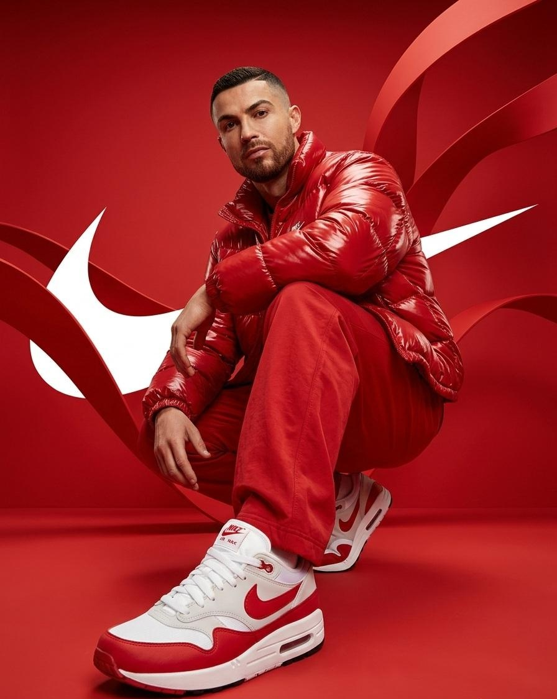
案例2722: Person from the reference image, with a fade haircut, brown e...
Person from the reference image, with a fade haircut, brown eyes, and a well groomed short beard, wearing a glossy ov...
🎨 查看AI提示词
🇨🇳 中文提示词
参考图像中的人物，留着渐变发型、棕色眼睛和修剪整齐的短胡须，穿着有光泽的宽大红色羽绒服和宽松的红色裤子，脚踩白红相间的 Nike 运动鞋，低蹲着，一膝抬起、一腿向前，左臂随意搭在抬起的膝盖上，右手放松地靠近另一条腿，身体略微侧向而头部前倾，直视镜头，表情自信，超广角低位视角拍摄，突出前侧运动鞋在前景中显得巨大且具主导性，场景为全红环境，地面平滑，背景有大型白色 Nike Swoosh 标志，周围环...
🇬🇧 English Prompt
Person from the reference image, with a fade haircut, brown eyes, and a well-groomed short beard, wearing a glossy oversized red puffer jacket and loose red pants with white and red nike sneakers, cro...
![Ultra realistic 3D miniature diorama of a [BRAND NAME] enviro...](../images/tweet-2036427989718802509-1.jpg)
案例2664: Ultra realistic 3D miniature diorama of a [BRAND NAME] enviro...
Ultra realistic 3D miniature diorama of a [BRAND NAME] environment built inside a giant [ICONIC OBJECT OF BRAND], sho...
🎨 查看AI提示词
🇨🇳 中文提示词
超写实的3D微型场景模型，展示了一个构建在巨型[品牌标志性物品]内部的[品牌名称]环境，以干净的剖面图或部分切开的视角呈现，揭示出一个精细的内部世界。 在结构内部，存在一个完全细节化的微型[品牌特定环境：商店 / 咖啡馆 / 餐厅 / 展厅]，有逼真的人类活动，例如员工工作、顾客互动，以及自然的叙事瞬间。 该[物体]既充当容器又作为环境，其材料和元素被整合进建筑中（例如，层次、纹理、表面形成地...
🇬🇧 English Prompt
Ultra-realistic 3D miniature diorama of a [BRAND NAME] environment built inside a giant [ICONIC OBJECT OF BRAND], shown in a clean cross-section or partially cut-open view revealing a detailed interio...
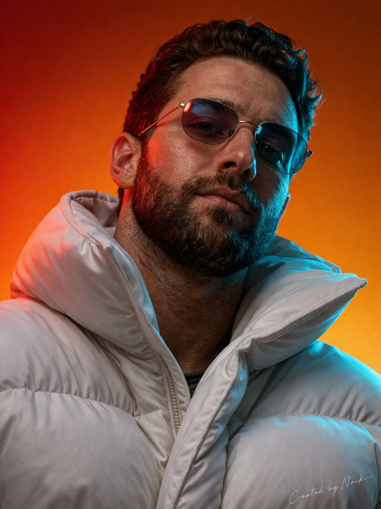
案例2660: Create an ultra photorealistic cinematic portrait of a man vi...
Create an ultra photorealistic cinematic portrait of a man viewed from a slightly low angle looking upward with a con...
🎨 查看AI提示词
🇨🇳 中文提示词
创建一幅超写实的电影感人像：以略低的视角向上拍摄一名男性，表情自信、充满力量。 使用上传的人像照片生成他的面部。 构图为紧凑的上半身人像，头部略微上仰，强调下颌线和胡须结构。 背景为平滑且充满活力的工作室渐变，从深橙色过渡到暖红色调，营造戏剧性现代美感。 使用强烈的电影式双色照明：一侧为暖红/橙色光，另一侧为冷青/蓝色轮廓光，在面部和胡须上形成醒目的对比。 该男子身着未来感的白...
🇬🇧 English Prompt
Create an ultra-photorealistic cinematic portrait of a man viewed from a slightly low angle looking upward with a confident, powerful expression. Generate his face using the uploaded portrait photo. T...

案例2565: Convert uploaded photo into ultra wide 10mm fisheye portrait...
Convert uploaded photo into ultra wide 10mm fisheye portrait from dramatic high top down angle with strong perspectiv...
🎨 查看AI提示词
🇨🇳 中文提示词
将上传的照片转换为超广角10mm鱼眼肖像，采用戏剧性高位俯视角度，强烈透视畸变（头部更大、身体被压缩）。添加黑色超大号太阳镜和纯白色棒球帽，右手调整帽子，自信地向上凝视。拼色羽绒服（焦橙色/奶油色/棕色）、白色T恤、白色运动鞋。大胆的赤陶色棚拍背景，平滑渐变，高对比度、锐利的编辑级打光，8k。
🇬🇧 English Prompt
Convert uploaded photo into ultra-wide 10mm fisheye portrait from dramatic high top-down angle with strong perspective distortion (larger head, compressed body). Add black oversized sunglasses and pla...
![Create a branded technical infographic of a [SNACK], combinin...](../images/tweet-2031795709243019280-1.jpg)
案例2494: Create a branded technical infographic of a [SNACK], combinin...
Create a branded technical infographic of a [SNACK], combining a realistic photograph or photoreal render of the prod...
🎨 查看AI提示词
🇨🇳 中文提示词
创建一个 [SNACK] 的品牌化技术信息图，将产品的真实照片或照片级渲染与直接覆盖在上面的技术注释叠层结合。使用黑色墨水风格的线条绘图，搭配策略性的 [BRAND COLOR] 强调色（建筑草图风格）在纯白色工作室背景上，包括： • 主要组件标签 • 内部横截面，显示结构、分层或内部设计 • 尺寸、规格与尺寸参数 • 材料标注，含成分与数量 • 指示主要特征和结构完整性功能的箭头 • 示意性或截...
🇬🇧 English Prompt
Create a branded technical infographic of a [SNACK], combining a realistic photograph or photoreal render of the product with technical annotation overlays placed directly on top. Use black ink–style ...
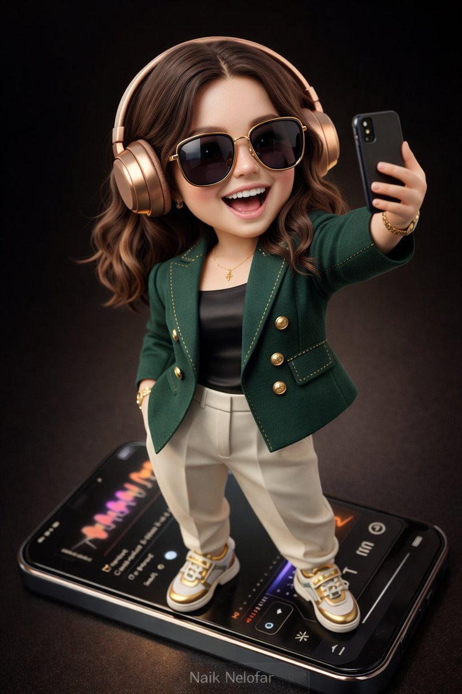
案例2490: Create a high detail 3D semi realistic chibi character with s...
Create a high detail 3D semi realistic chibi character with slightly exaggerated cute proportions but with photoreali...
🎨 查看AI提示词
🇨🇳 中文提示词
创建一个高细节的3D半写实Q版（chibi）角色，比例略微夸张以显得可爱，但面部采用写实渲染，具有自然的皮肤毛孔、真实的灯光效果和精细的发丝细节。角色应呈现为一款收藏级设计玩具手办，表面光滑、材质高级、边缘超干净。角色造型为时尚风格： A. 一件剪裁合体的设计师夹克，深祖母绿，并带有金色缝线点缀 B. 内搭紧身黑色丝质上衣 C. 高级定制锥形长裤，哑光象牙色调 D. 设计师运动鞋/鞋履，白色与金色...
🇬🇧 English Prompt
Create a high-detail 3D semi-realistic chibi character with slightly exaggerated cute proportions but with photorealistic facial rendering, natural skin pores, realistic lighting, and finely detailed ...
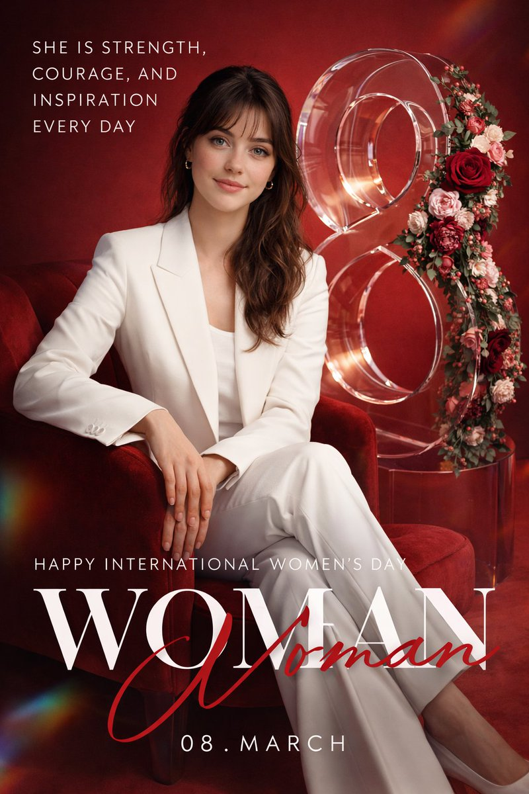
案例2445: Create a high end promotional poster for International Women'...
Create a high end promotional poster for International Women's Day, designed as a luxury editorial campaign seamlessl...
🎨 查看AI提示词
🇨🇳 中文提示词
为国际妇女节制作一张高端宣传海报，设计为奢华编辑型活动，将写实摄影棚摄影与精致现代平面设计无缝融合。 身份匹配（关键）：严格参照上传的图像进行精确面部与身份匹配。准确保留面部结构、比例、肤色、发型与自然表情——主体在整个过程中必须始终清晰且毫无疑问地可识别。 构图与画面裁切：竖向 4:5 海报格式。三分之四坐姿肖像，裁至大腿中部，主体占画面 30–40%。主体稍微偏左置中，右侧预留刻意的视觉呼吸空...
🇬🇧 English Prompt
Create a high-end promotional poster for International Women's Day, designed as a luxury editorial campaign seamlessly blending photorealistic studio photography with sophisticated modern graphic desi...
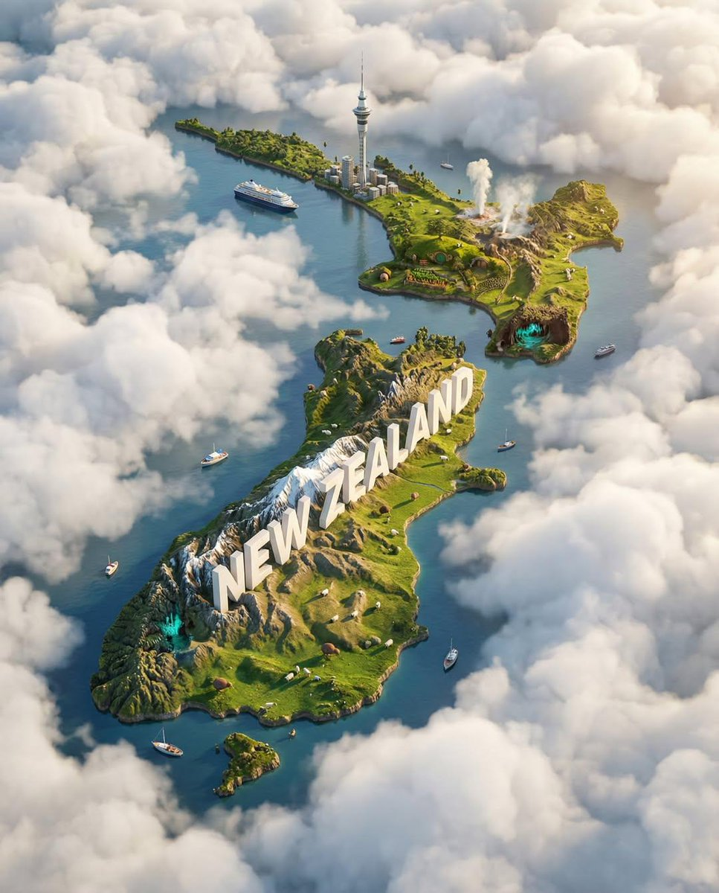
案例2429: Create an ultra HD, hyper realistic digital poster of a float...
Create an ultra HD, hyper realistic digital poster of a floating miniature island shaped like [Country] on white clou...
🎨 查看AI提示词
🇨🇳 中文提示词
创建一个超高清、极度写实的数字海报，描绘一个漂浮在白云上的、形状像[Country]的微型岛屿。包括标志性地标、景观（[landmark 1]、[landscape 2]、[landscape 3]）以及独属于[Country]的文化元素。用大号白色三维字母将“[Country]”雕刻出来。添加[wildlife]、电影级灯光、鲜艳的色彩、空中透视，以及阳光反射以增强真实感。
🇬🇧 English Prompt
Create an ultra-HD, hyper-realistic digital poster of a floating miniature island shaped like [Country] on white clouds. Include iconic landmarks, landscapes ([landmark 1], [landscape 2], [landscape 3...
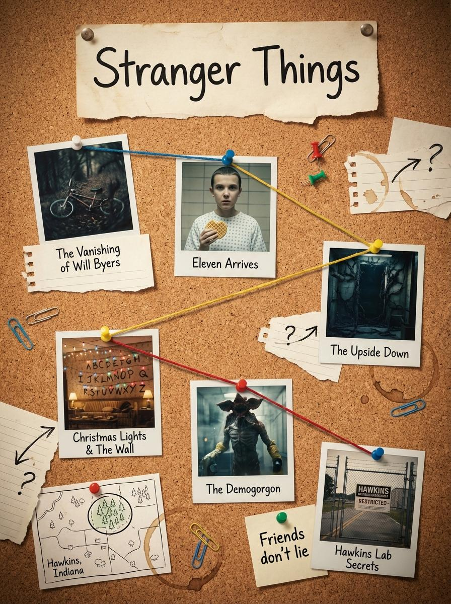
案例2387: Generates a clean, cinematic 1080×1080 corkboard layout that...
Generates a clean, cinematic 1080×1080 corkboard layout that visually summarizes the story of movie using Polaroid sn...
🎨 查看AI提示词
🇨🇳 中文提示词
生成一个干净、具有电影质感的 1080×1080 软木板布局，用宝丽来快照、手写笔记、侦探风格的连线和复古纹理视觉化地概括电影《怪奇物语》的故事
🇬🇧 English Prompt
Generates a clean, cinematic 1080×1080 corkboard layout that visually summarizes the story of movie using Polaroid snapshots, handwritten notes, detective-style strings, and vintage textures for "STRA...
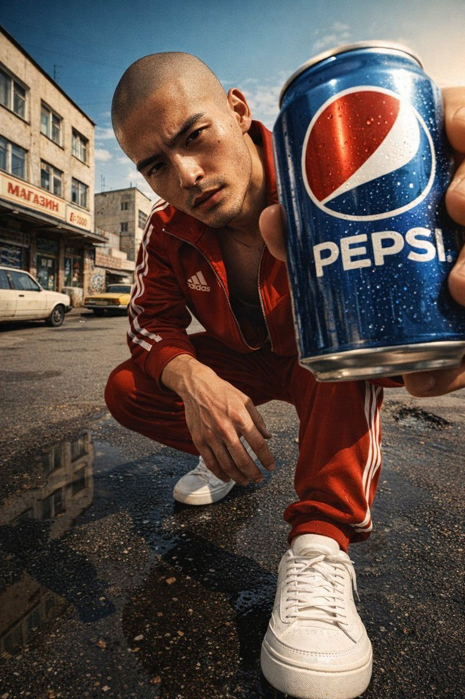
案例2376: Ultra realistic, glossy magazine style portrait of a young ma...
Ultra realistic, glossy magazine style portrait of a young male model, bald, with a stem, rugged expression and defin...
🎨 查看AI提示词
🇨🇳 中文提示词
超写实、光泽杂志风格的人像，年轻男性模特，秃顶，表情严峻粗犷，面部质感清晰（毛孔、胡茬阴影、细微疤痕）。相机位于鞋子高度（极低角度），广角视角，模特向镜头倾斜，身体前倾，手持一罐 Pepsi 极其靠近镜头——罐身标签完全面向观众且清晰可读，金属反光真实。穿着红色 Adidas 运动服，Adidas 标志可见，干净的白色运动鞋，一只脚向前踏在前景中。城市化的苏联1990年代街道环境：风化的混凝土、复...
🇬🇧 English Prompt
Ultra-realistic, glossy magazine-style portrait of a young male model, bald, with a stem, rugged expression and defined facial texture (pores, stubble shadows, subtle scars). Camera at shoe level (ver...
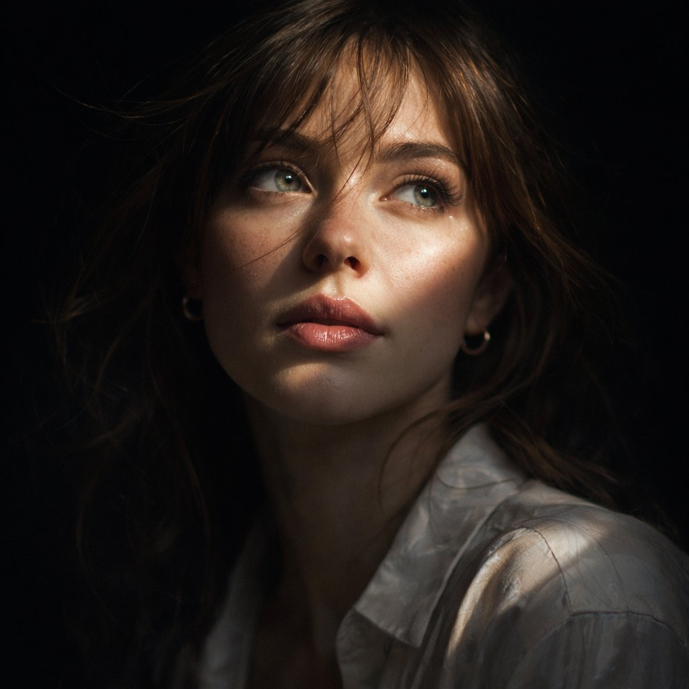
案例2368: Hyper realistic cinematic Create an 8k close up portrait of a...
Hyper realistic cinematic Create an 8k close up portrait of a beautiful woman with medium, brown, slightly wind swept...
🎨 查看AI提示词
🇨🇳 中文提示词
超真实的电影感。创作一张8k分辨率的特写肖像，描绘一位美丽的女人，拥有中等长度、棕色、略被风吹拂的头发落在她的脸上。她那引人注目的浅色眼睛向上方和右上方凝视，捕捉到一道锋利的自然光斜射，照亮她颧骨高点、鼻梁以及光滑、白皙的肌肤，亮泽、呈淡紫粉调的双唇，以及一件轻薄的丝质衬衫。她脸部的其他部分和背景都笼罩在深沉、戏剧性的阴影中（明暗对比，chiaroscuro），强调光与影的交错。她左肩上能看到深色...
🇬🇧 English Prompt
Hyper-realistic cinematic Create an 8k close-up portrait of a beautiful woman with medium, brown, slightly wind-swept hair falling across her face. Her striking, light-colored eyes gaze upwards and to...
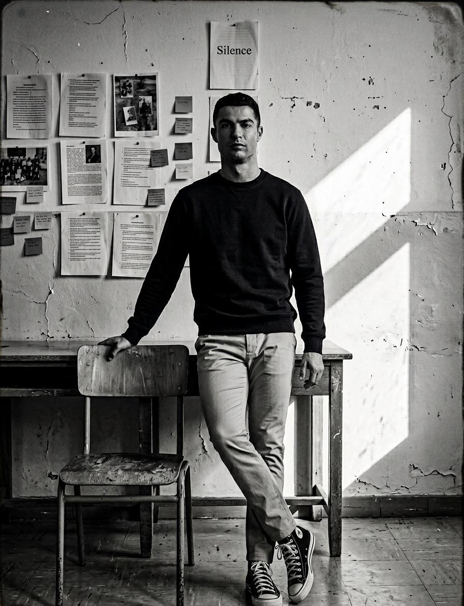
案例2355: Create a high contrast black and white portrait in a quiet cl...
Create a high contrast black and white portrait in a quiet classroom.Use uploaded image as reference. Person leans ca...
🎨 查看AI提示词
🇨🇳 中文提示词
在安静的教室里创作一幅高对比度的黑白肖像。使用上传的图片作为参考。人物随意倚靠在一把木制校椅上，双腿交叉，穿着海军蓝运动衫、米色斜纹棉布裤（chinos）和黑白色匡威帆布鞋。表情平静、中性。 他的左臂靠在课桌上，右手随意垂落在一侧。 在他身后是一面近白色的教室墙壁，表面有明显磨损，按格状别着纸张、照片和便签。 有一页纸清晰地印有单词 “Silence”，位于他头顶上方。 阳光从右侧强烈射入，在墙上...
🇬🇧 English Prompt
Create a high-contrast black and white portrait in a quiet classroom.Use uploaded image as reference. Person leans casually on a wooden school chair, legs crossed, wearing a navy blue sweatshirt, beig...
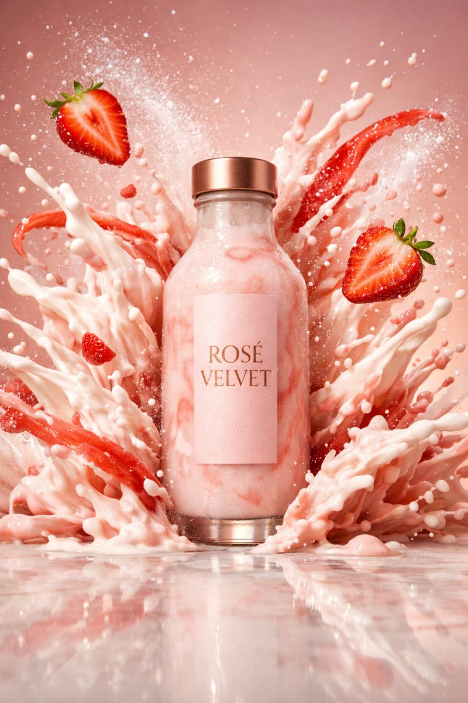
案例2338: "master prompt": {
{ "master prompt": { "scene type": "high speed commercial luxury shake photography", "product": { "type": "elegant fr...
🎨 查看AI提示词
🇨🇳 中文提示词
{ "master_prompt": { "scene_type": "高速商业级奢华奶昔摄影", "product": { "type": "优雅的磨砂玻璃瓶，盛装绒滑的草莓奶昔", "brand_name": "ROSÉ VELVET", "label_design": "极简纵向腮红色标签，带有浮雕玫瑰金衬线字体", "li...
🇬🇧 English Prompt
{ "master_prompt": { "scene_type": "high-speed commercial luxury shake photography", "product": { "type": "elegant frosted glass bottle filled with velvety strawberry shake", "br...
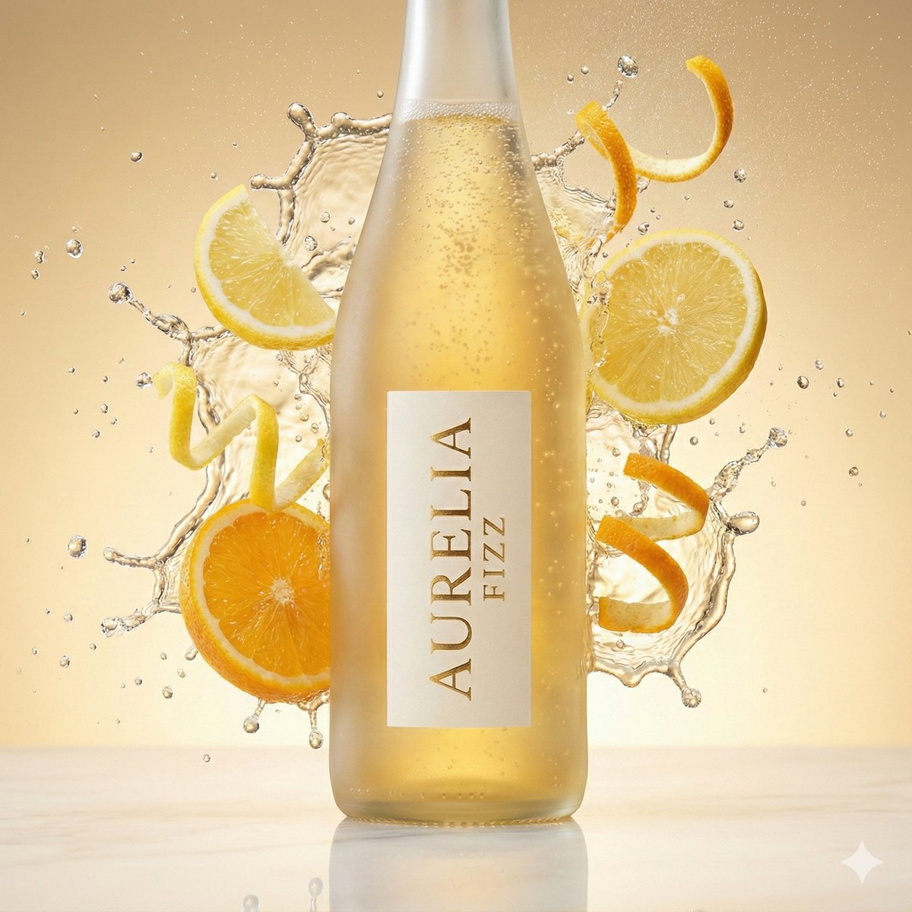
案例2299: "master prompt": {
{ "master prompt": { "scene type": "high speed commercial beverage photography", "product": { "type": "sleek frosted...
🎨 查看AI提示词
🇨🇳 中文提示词
{ "master_prompt": { "scene_type": "高速商业饮料摄影", "product": { "type": "时尚的磨砂玻璃瓶，装满起泡柑橘汤力水", "brand_name": "AURELIA FIZZ", "label_design": "极简竖向象牙白标签，搭配精致金色衬线字体", "liqui...
🇬🇧 English Prompt
{ "master_prompt": { "scene_type": "high-speed commercial beverage photography", "product": { "type": "sleek frosted glass bottle filled with sparkling citrus tonic", "brand_name...
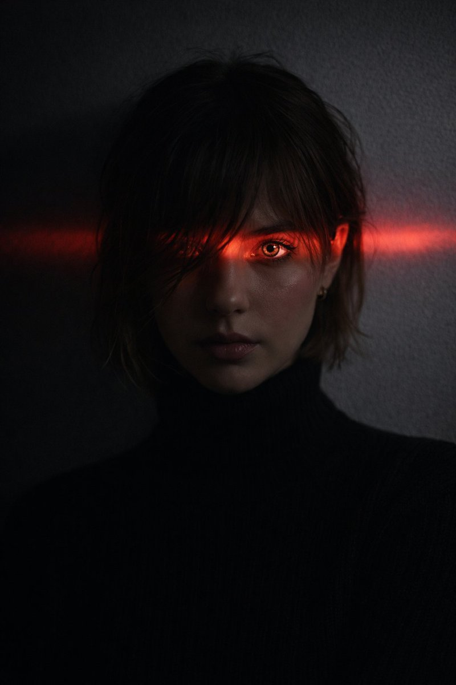
案例2271: Ultra realistic dramatic portrait of a man or woman (from upl...
Ultra realistic dramatic portrait of a man or woman (from uploaded image), messy hair over one eye, wearing a black t...
🎨 查看AI提示词
🇨🇳 中文提示词
超写实戏剧性人像，一名男士或女士（来自上传的图像），凌乱的头发遮住一只眼睛，穿着黑色高领毛衣，居中，目光强烈直视。明亮锐利的水平红光只照亮眼睛并在灰色墙面上反射；其余部分沉入深沉的阴影。情绪化、极简、电影感。
🇬🇧 English Prompt
Ultra-realistic dramatic portrait of a man or woman (from uploaded image), messy hair over one eye, wearing a black turtleneck, centered with an intense stare. Bright sharp horizontal red light highli...
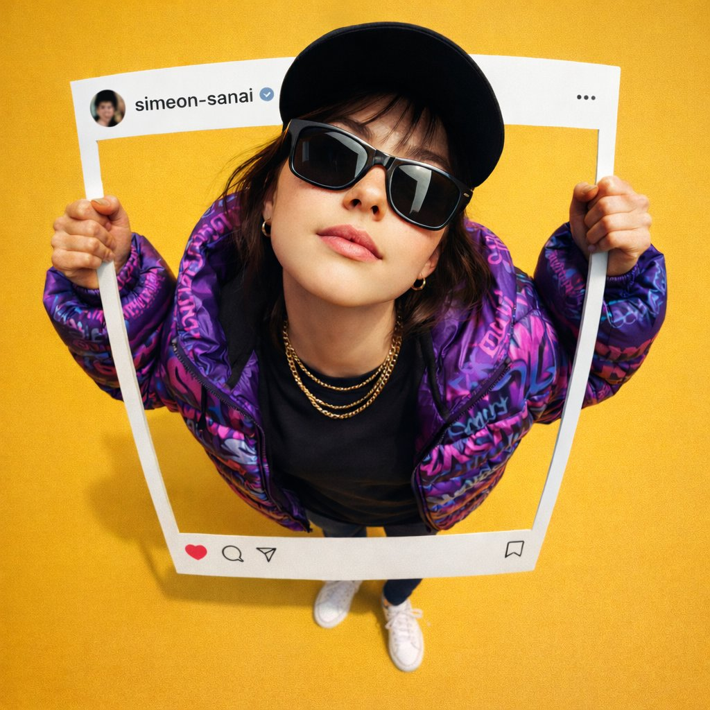
案例2263: Create an Ultra realistic photo composite of uploaded person...
Create an Ultra realistic photo composite of uploaded person breaking out of an Instagram post frame. Standing pose,...
🎨 查看AI提示词
🇨🇳 中文提示词
创建一张超写实的照片合成：上传的人物从一个 Instagram 帖子框中突破出来。站立姿势，双手抓住框边，上半身伸出框外并带有真实阴影。高位俯视，人物单独应用强烈的10mm鱼眼效果（头大、身体小），画框保持直线。自信地向上凝视，紫色涂鸦羽绒服，黑色T恤，金链，白色运动鞋，太阳镜，黑色帽子，黄色地面，干净的 Instagram 界面（simeon-sanai）叠加，照片级真实。
🇬🇧 English Prompt
Create an Ultra-realistic photo composite of uploaded person breaking out of an Instagram post frame. Standing pose, both hands holding frame edges, upper body outside frame with real shadows. High to...
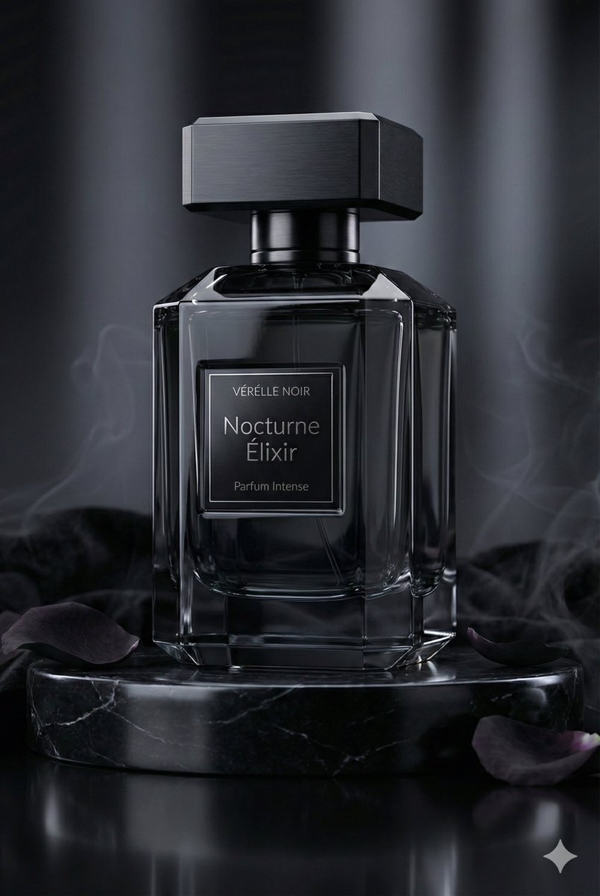
案例2260: "master prompt": {
{ "master prompt": { "scene type": "ultra realistic luxury perfume commercial photography", "product": { "type": "lux...
🎨 查看AI提示词
🇨🇳 中文提示词
{ "master_prompt": { "scene_type": "超写实奢华香水商业摄影", "product": { "type": "奢华香水瓶", "brand_name": "VÉRÉLLE NOIR", "product_name": "Nocturne Élixir — Parfum Intense", "co...
🇬🇧 English Prompt
{ "master_prompt": { "scene_type": "ultra-realistic luxury perfume commercial photography", "product": { "type": "luxury perfume bottle", "brand_name": "VÉRÉLLE NOIR", "pr...
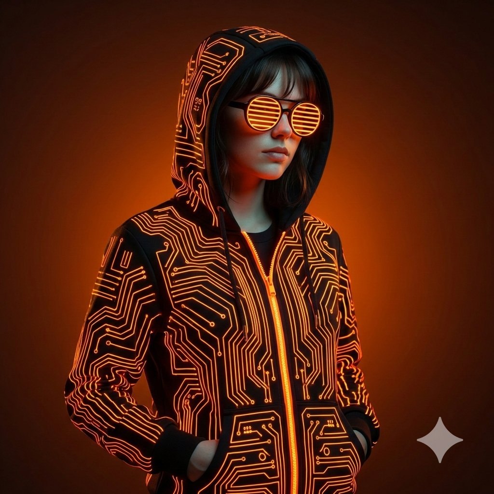
案例2259: Ultra realistic cinematic studio portrait using provided pers...
Ultra realistic cinematic studio portrait using provided person only. Subject wears black cyberpunk hoodie fully cove...
🎨 查看AI提示词
🇨🇳 中文提示词
超逼真的电影级影棚肖像，仅使用所提供的人物。主体穿着黑色赛博朋克连帽衫，表面完全覆盖着明亮发光的霓虹橙色电路线和发光的拉链，帽兜戴起，双手插入口袋，三分之二侧身朝右，头微微低垂。圆形百叶窗眼镜，带有发光的橙色条带。戏剧性影棚灯光，光晕投射出溢光。平滑的深色到焦橙色渐变背景。风格已锁定。
🇬🇧 English Prompt
Ultra-realistic cinematic studio portrait using provided person only. Subject wears black cyberpunk hoodie fully covered in bright glowing neon-orange circuit lines and illuminated zipper, hood up, ha...
案例2247: "master prompt": {
{ "master prompt": { "scene type": "ultra realistic luxury skincare commercial photography", "product": { "type": "pr...
🎨 查看AI提示词
🇨🇳 中文提示词
{ "master_prompt": { "scene_type": "超写实奢华护肤商业摄影", "product": { "type": "高端美容精华小瓶", "brand_name": "VÉRÉLLE", "product_name": "光华琼露 — 青春注入", "container_shape": "高身刻面水晶小瓶，优雅的垂直几何造型", ...
🇬🇧 English Prompt
{ "master_prompt": { "scene_type": "ultra-realistic luxury skincare commercial photography", "product": { "type": "premium beauty elixir vial", "brand_name": "VÉRÉLLE", "product_name": "L...
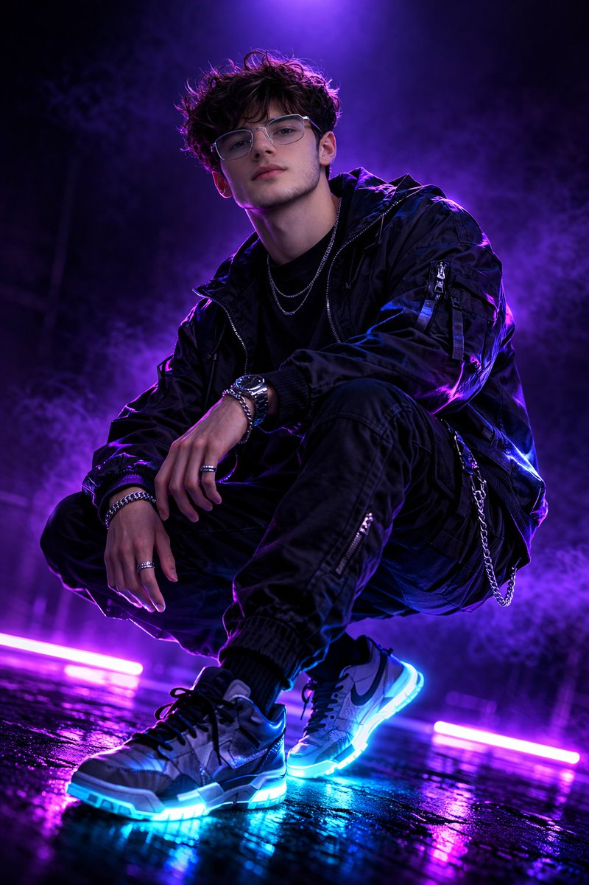
案例2238: Fashion photography, professional man model, shot with Canon...
Fashion photography, professional man model, shot with Canon eos r3, 50mm f/1.2 rf lens, f/2.8 settings, 1/160s, iso...
🎨 查看AI提示词
🇨🇳 中文提示词
时尚摄影，专业男模，使用 Canon EOS R3 拍摄，50mm f/1.2 RF 镜头，光圈 f/2.8，快门 1/160 秒，ISO 1600，渐变霓虹紫色，街头服饰风格，服饰上的全息效果，发光的运动鞋鞋底，深色背景与深紫色氛围灯光，专业棚拍布置：地面两条 LED 灯带和一盏顶棚柔光箱，赛博朋克美学，侧面动态姿势呈剪影，戏剧性对比，超锐利细节，逼真摄影质感，丰富的细节
🇬🇧 English Prompt
Fashion photography, professional man model, shot with Canon eos r3, 50mm f/1.2 rf lens, f/2.8 settings, 1/160s, iso 1600, gradient neon violet, streetwear style, holographic effect on wear, luminesce...
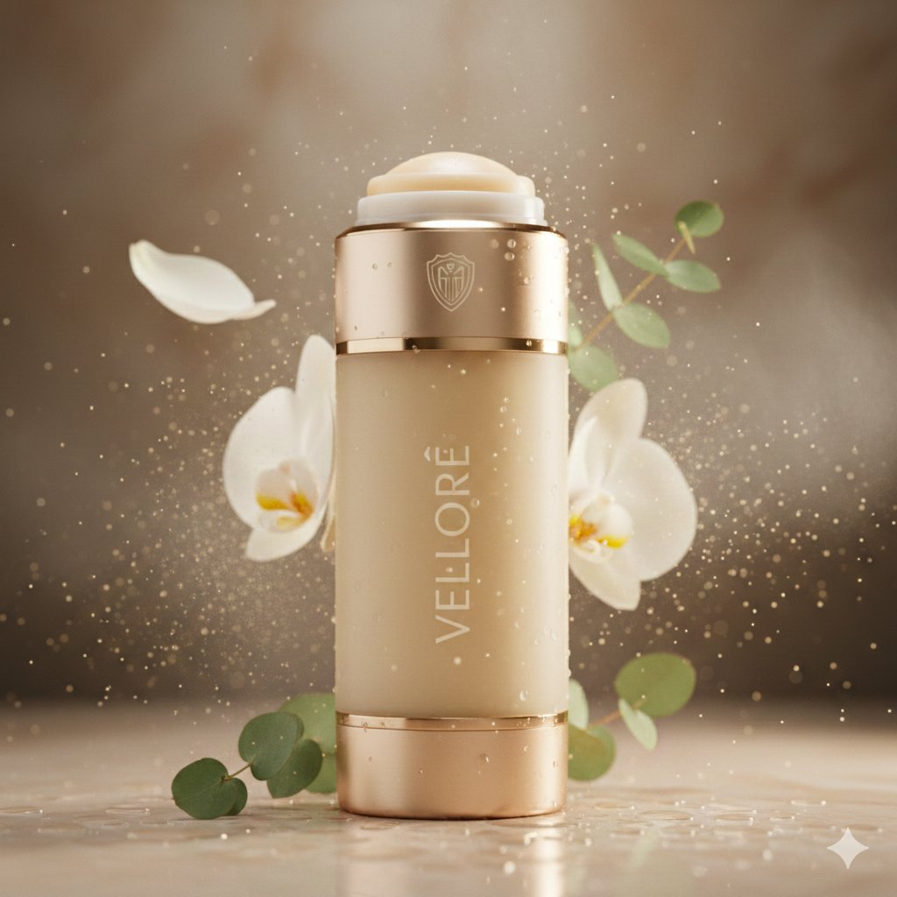
案例2212: "master prompt": {
{ "master prompt": { "product": { "type": "luxury body deodorant", "brand name": "VELORÉ", "product line": "Pure Aura...
🎨 查看AI提示词
🇨🇳 中文提示词
{ "master_prompt": { "product": { "type": "奢华体香膏", "brand_name": "VELORÉ", "product_line": "Pure Aura", "container_style": "线条流畅的圆柱形除臭膏，边缘柔和圆润", "material": "磨砂玻璃主体...
🇬🇧 English Prompt
{ "master_prompt": { "product": { "type": "luxury body deodorant", "brand_name": "VELORÉ", "product_line": "Pure Aura", "container_style": "sleek cylindrical deodorant st...

案例2209: A hyper realistic, high speed commercial photograph featuring...
A hyper realistic, high speed commercial photograph featuring a man with uploaded face as reference in a chef's jacke...
🎨 查看AI提示词
🇨🇳 中文提示词
一张超写实、高速的商业摄影作品，描绘一名以上传人脸为参考的男子，身着厨师外套、围裙和格子裤。他站在一间质朴且高档的厨房里，掀开一个大而冒着蒸气的铜锅盖，脸上露出纯粹惊叹的表情。锅中仿佛字面意义上的美食银河向上并向外爆发并悬浮静止：整颗烤制的香料、色彩鲜艳的蔬菜、浓郁酱汁的飞溅、漂浮着的精心摆盘的高级菜肴盘，以及充满金色亮粉的旋转芳香蒸汽云。食材在他周围形成螺旋星云。背景是一间温暖、虚化的专业厨房，...
🇬🇧 English Prompt
A hyper-realistic, high-speed commercial photograph featuring a man with uploaded face as reference in a chef's jacket, apron, and checkered trousers. He stands in a rustic, high-end kitchen, lifting ...
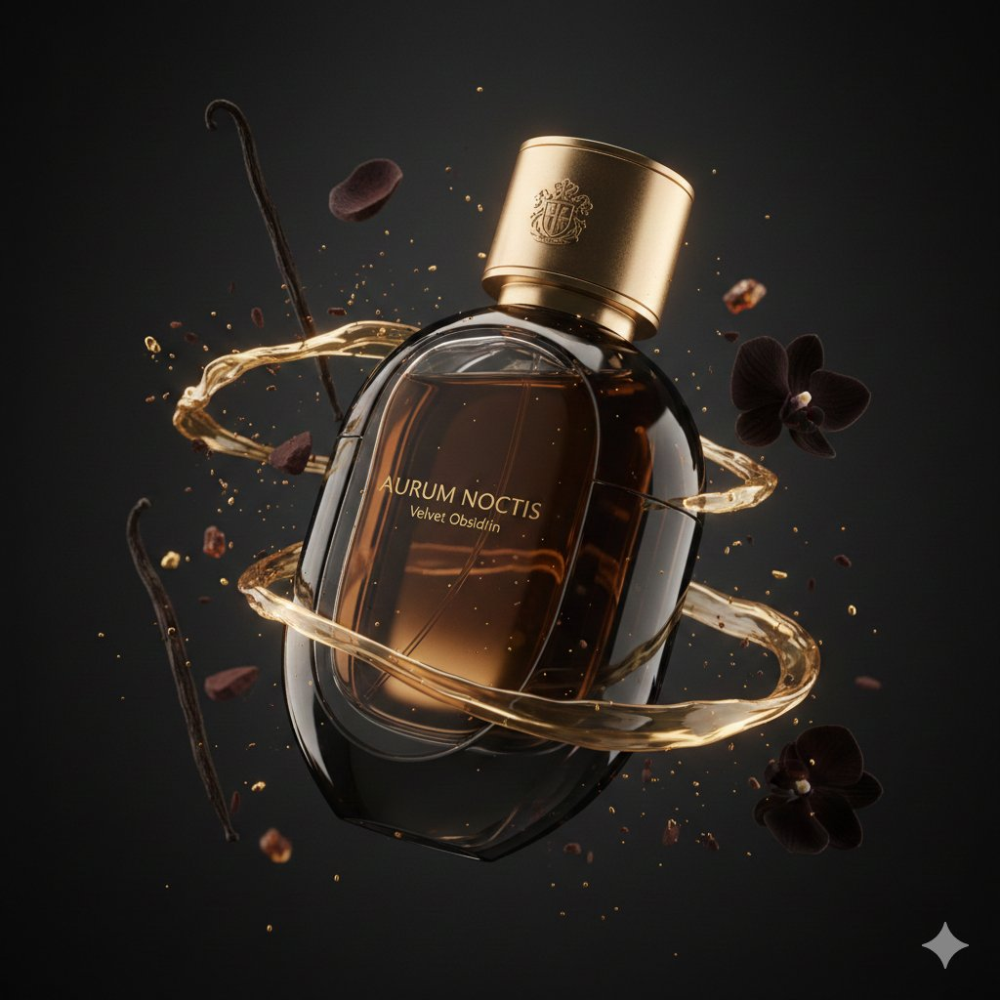
案例2193: "master prompt": {
{ "master prompt": { "product": { "type": "luxury perfume bottle", "brand name": "AURUM NOCTIS", "fragrance line": "V...
🎨 查看AI提示词
🇨🇳 中文提示词
{ "主提示": { "产品": { "类型": "奢华香水瓶", "品牌名称": "AURUM NOCTIS", "香氛系列": "Velvet Obsidian", "容器形状": "流线型整体椭圆瓶，带雕刻轮廓", "材质": "黑曜石色玻璃，带微妙的烟熏透明度", "表面处理": "高光反射主体配以缎面哑光...
🇬🇧 English Prompt
{ "master_prompt": { "product": { "type": "luxury perfume bottle", "brand_name": "AURUM NOCTIS", "fragrance_line": "Velvet Obsidian", "container_shape": "sleek monolithic...
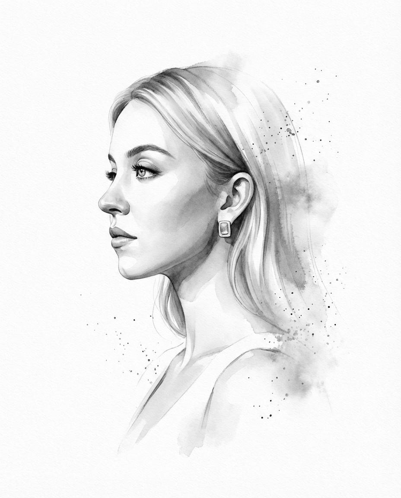
案例2179: Transform the input photo into a refined monochromatic ink po...
Transform the input photo into a refined monochromatic ink portrait on a pure white background. Clean side profile fa...
🎨 查看AI提示词
🇨🇳 中文提示词
将输入照片转化为一幅置于纯白背景上的精致单色墨水肖像。面向左的干净侧面轮廓，精确保留面部特征与比例。使用柔和的炭灰色墨水，带有细微的明暗变化，受控的飞溅点缀，细腻的水彩晕染，以及沿边缘轻微如雾般的扩散。
🇬🇧 English Prompt
Transform the input photo into a refined monochromatic ink portrait on a pure white background. Clean side profile facing left, preserving exact facial identity and proportions. Soft charcoal-gray ink...
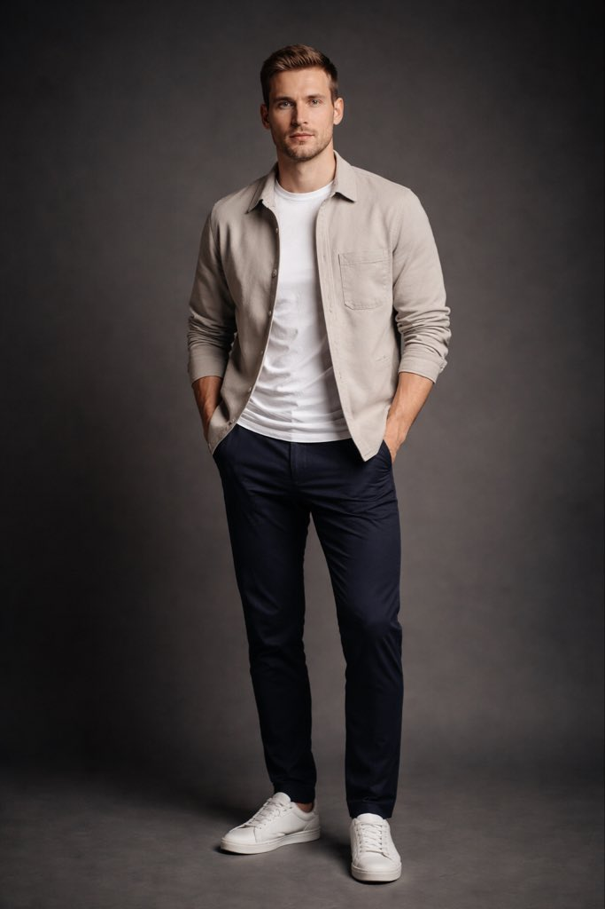
案例2174: Photorealistic studio portrait of an average British man in h...
Photorealistic studio portrait of an average British man in his late 20s to early 40s, natural appearance, realistic...
🎨 查看AI提示词
🇨🇳 中文提示词
照片写实的影棚肖像，一位普通英国男性，年龄大约20多岁后期至40多岁早期，自然的外表，真实的面部特征，短而修整得体的发型，淡淡的胡茬或清爽剃须。 他以放松的姿态自信地站着，传达出内敛的自信。 他穿着时尚、舒适、现代的休闲服装：合身的中性色调夹克或外衬，优质的纯色T恤，剪裁得体的长裤或深色牛仔裤，以及干净简约的运动鞋。整体造型当代、内敛且不费力地时髦。 在专业影棚中拍摄，采用极简灯光：一盏柔和的...
🇬🇧 English Prompt
Photorealistic studio portrait of an average British man in his late 20s to early 40s, natural appearance, realistic facial features, short well-groomed hair, light stubble or clean-shaven. He stands ...
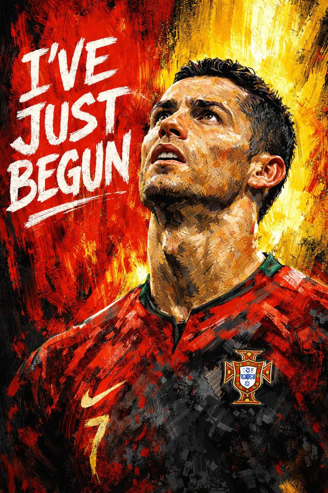
案例2170: Create a dramatic, digital painting style portrait of a male...
Create a dramatic, digital painting style portrait of a male footballer looking upwards with a determined expression....
🎨 查看AI提示词
🇨🇳 中文提示词
创作一幅戏剧性、数字绘画风格的肖像，描绘一名男性足球运动员仰望上方、表情坚毅。风格应大胆且富有质感，采用充满动感的笔触和有限的色彩调色板，主要为黑、白、红和黄。背景应竖向分割，带有抽象的红色和黄色油漆痕迹。在红色一侧，用大号白色手绘字体加入醒目的激励文字‘我才刚刚开始’。捕捉球员目光中的强烈激情与野心。构图应具有激励性和力量感，适合作为体育海报。8K 分辨率，图像纵横比 4:5。
🇬🇧 English Prompt
Create a dramatic, digital painting-style portrait of a male footballer looking upwards with a determined expression. The style should be bold and textured, using dynamic brushstrokes and a limited co...
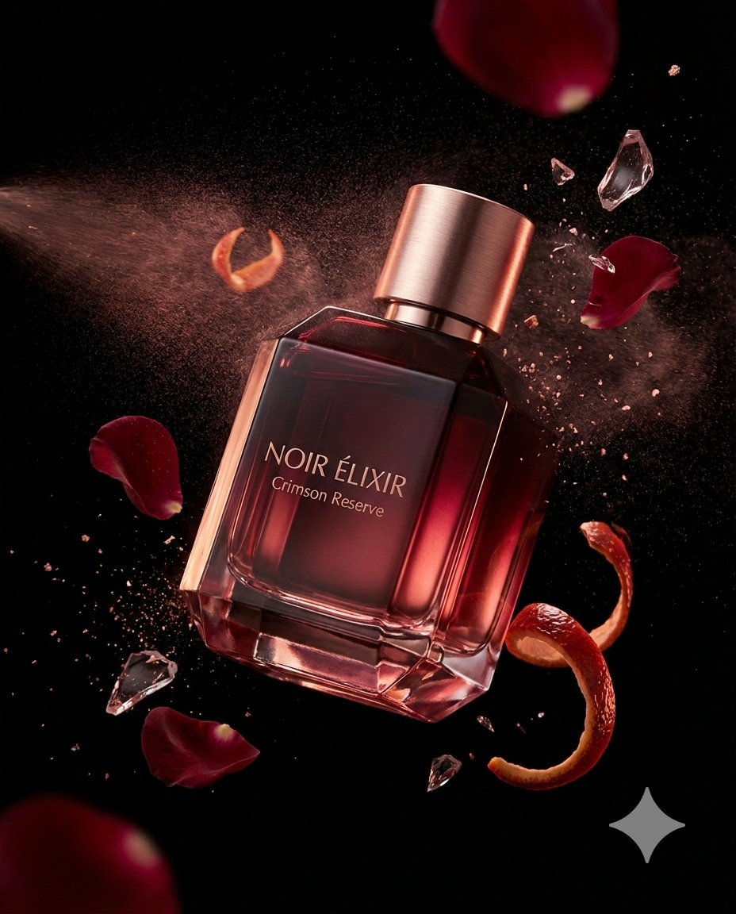
案例2169: "master prompt": {
{ "master prompt": { "product": { "type": "luxury perfume bottle", "brand name": "NOIR ÉLIXIR", "fragrance line": "Cr...
🎨 查看AI提示词
🇨🇳 中文提示词
{ "master_prompt": { "product": { "type": "奢华香水瓶", "brand_name": "NOIR ÉLIXIR", "fragrance_line": "Crimson Reserve", "container_shape": "带有锋利优雅棱角的多面几何水晶瓶", "materia...
🇬🇧 English Prompt
{ "master_prompt": { "product": { "type": "luxury perfume bottle", "brand_name": "NOIR ÉLIXIR", "fragrance_line": "Crimson Reserve", "container_shape": "faceted geometric...
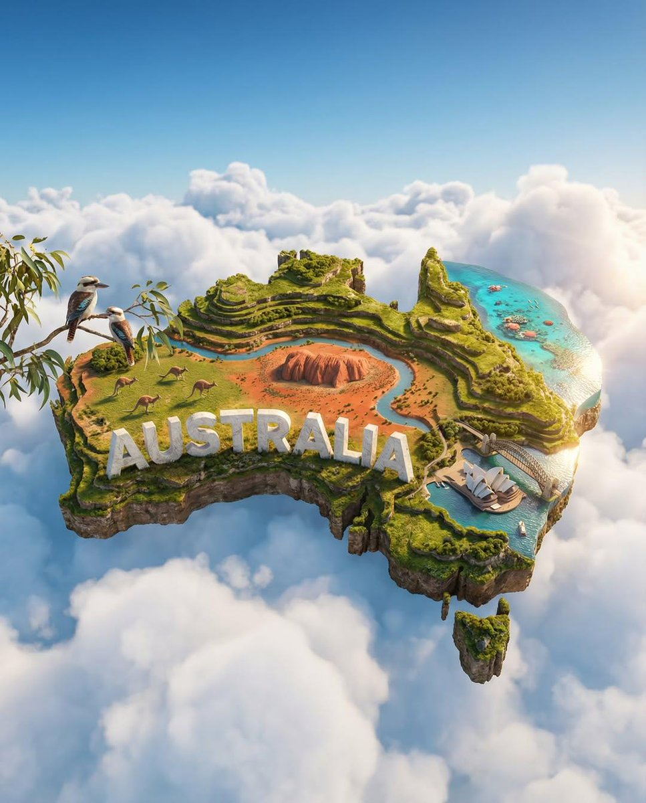
案例2163: Create an ultra HD, hyper realistic digital poster of a float...
Create an ultra HD, hyper realistic digital poster of a floating miniature island shaped like [Country], resting on w...
🎨 查看AI提示词
🇨🇳 中文提示词
创建一张超高清、极度真实的数字海报，描绘一个悬浮的微型岛屿，其形状类似 [Country]，漂浮在天空中的白云之上。融合标志性地标、自然景观（如 [landmark 1]、[landscape 2]，或 [landscape 3]），以及独具 [Country] 特色的文化元素。用大型白色3D字母在地形上雕刻出「[Country]」。加入艺术细节，如 [wildlife]、电影级灯光、鲜艳的色彩、...
🇬🇧 English Prompt
Create an ultra-HD, hyper-realistic digital poster of a floating miniature island shaped like [Country], resting on white clouds in the sky. Blend iconic landmarks, natural landscapes (like [landmark ...
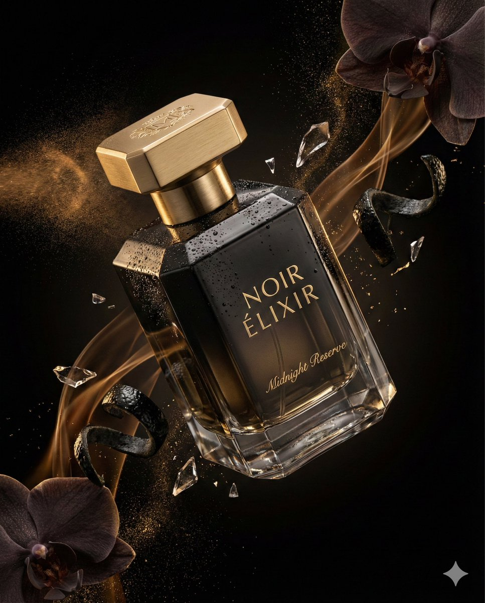
案例2158: "master prompt": {
{ "master prompt": { "product": { "type": "luxury perfume bottle", "brand name": "NOIR ÉLIXIR", "fragrance line": "Mi...
🎨 查看AI提示词
🇨🇳 中文提示词
{ "master_prompt": { "product": { "type": "奢华香水瓶", "brand_name": "NOIR ÉLIXIR", "fragrance_line": "午夜珍藏", "container_shape": "多面几何切割水晶瓶，具有锐利而优雅的棱角", "material": "高透...
🇬🇧 English Prompt
{ "master_prompt": { "product": { "type": "luxury perfume bottle", "brand_name": "NOIR ÉLIXIR", "fragrance_line": "Midnight Reserve", "container_shape": "faceted geometri...
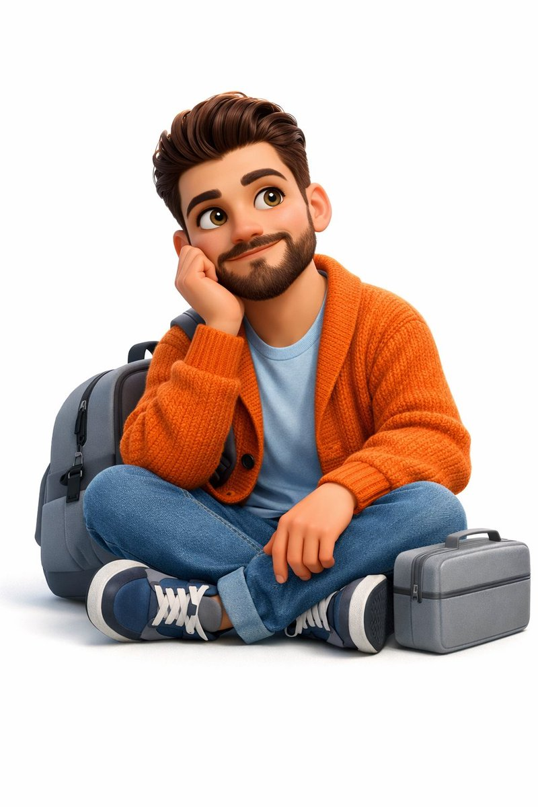
案例2147: create a A 3D, Pixar style animated young man sits cross legg...
create a A 3D, Pixar style animated young man sits cross legged on a pure white, isolated background. He has bright,...
🎨 查看AI提示词
🇨🇳 中文提示词
创建一个3D、皮克斯风格的动画年轻男子，盘腿坐在纯白的孤立背景上。他有明亮的橄榄色肤色，整齐造型的明亮棕色发型，略带波浪，且留着修剪整齐的明亮棕色胡须和小胡。他那双大而富有表情的眼睛呈深榛褐色，微微上扬，沉思地望向左侧，嘴角带着淡淡梦幻的微笑，右手轻轻托着面颊。他穿着一件明亮、有质感的橙色针织开衫，内搭浅蓝色T恤，配以明亮水洗牛仔裤。脚穿时尚的运动鞋，配色为藏青色、灰色和白色。一只亮灰色、现代风格...
🇬🇧 English Prompt
create a A 3D, Pixar-style animated young man sits cross-legged on a pure white, isolated background. He has bright, olive-toned skin, a neatly styled bright brown haircut with a slight wave, and a we...
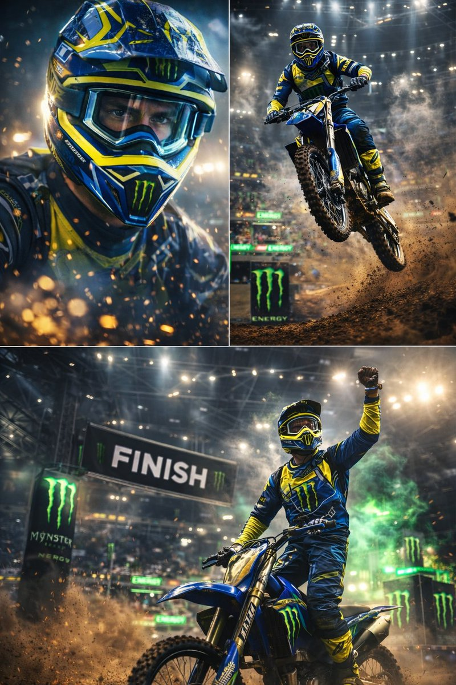
案例2145: Ultra dynamic motocross racing scene featuring a professional...
Ultra dynamic motocross racing scene featuring a professional dirt bike rider performing extreme stunts inside a mass...
🎨 查看AI提示词
🇨🇳 中文提示词
超动感越野摩托赛车场景，展示一名专业越野摩托车手在巨大的室内体育场内表演极限特技。构图融合写实与电影化的能量——以多重视角呈现骑手：戴着蓝黄相间头盔的特写肖像、在泥土赛道上飞跃的中景动作，以及接近终点线的胜利姿势。背景有戏剧性的烟雾、探照灯和体育场的结构梁，霓虹绿色的点缀穿透整个氛围。泥土赛道崎岖，充满运动模糊、尘埃颗粒与强烈的光影对比。能量饮料的品牌标识与横幅为赛道环境增添真实感。整体基调高能、...
🇬🇧 English Prompt
Ultra-dynamic motocross racing scene featuring a professional dirt bike rider performing extreme stunts inside a massive indoor stadium. The composition blends realism and cinematic energy — showing t...
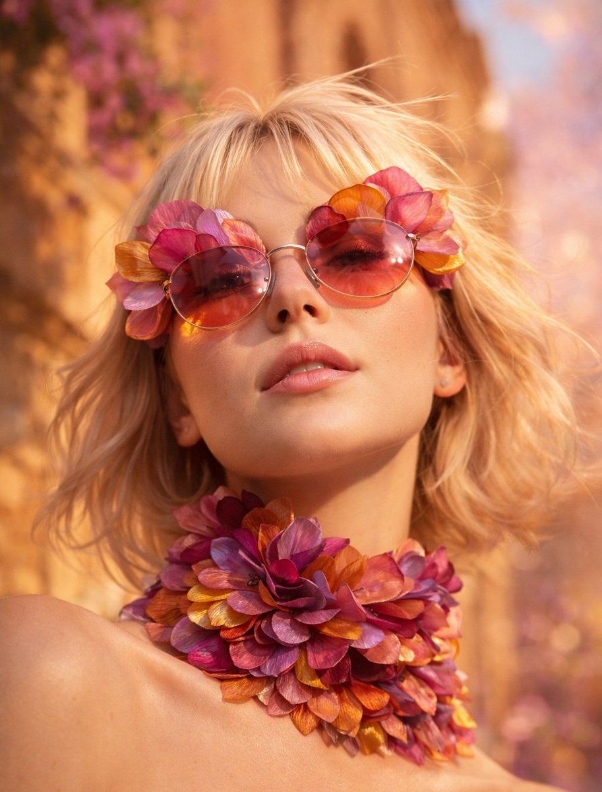
案例2140: Low angle close up portrait of a platinum blonde woman wearin...
Low angle close up portrait of a platinum blonde woman wearing oversized sculptural sunglasses crafted from delicate...
🎨 查看AI提示词
🇨🇳 中文提示词
低角度特写肖像：一位白金金发女性佩戴夸张的大型雕塑感太阳镜，镜片由娇嫩半透明的叠层花瓣制成，呈鲜艳的洋红、琥珀和丁香色调，每片花瓣可见细腻的丝绸纹理，柔和的金色光线从边缘透过；一圈奢华高级定制的颈圈项链由密集叠层的同色花瓣构成，完美包裹整个颈部，具备立体感和有机曲线。她下巴微微抬起，棱角分明，神情自信；鼻梁上点缀着细腻的雀斑；双唇自然滋润有光泽，唇峰处带有柔和高光。细软的白金发丝被温暖的微风轻轻托...
🇬🇧 English Prompt
Low-angle close-up portrait of a platinum blonde woman wearing oversized sculptural sunglasses crafted from delicate translucent layered flower petals in vibrant magenta, amber, and lilac hues, subtle...
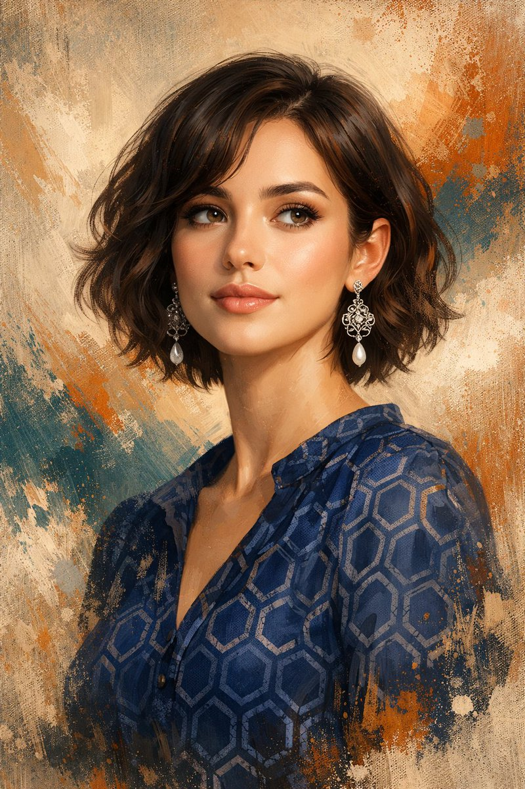
案例2129: A beautiful semi realistic digital portrait of an elegant you...
A beautiful semi realistic digital portrait of an elegant young woman with short wavy dark brown hair, soft glowing s...
🎨 查看AI提示词
🇨🇳 中文提示词
一幅美丽的半写实数码肖像，描绘一位优雅的年轻女性，留着短波浪状的深棕色头发，皮肤柔和有光泽，棕色眼睛表情丰富。她微微侧头，表情平静而自信。她佩戴着精致的银质花丝耳环，垂有珍珠坠饰，穿着一件深蓝色的图案上衣，带有几何六边形设计。背景以抽象艺术笔触为特色，采用暖米色、青绿色和焦橙色调，伴有颜料飞溅和画布质感效果。柔和的电影感灯光、细腻的肌肤高光、丰富的面部细节、绘画风格、超精细、高分辨率、现代插画、A...
🇬🇧 English Prompt
A beautiful semi-realistic digital portrait of an elegant young woman with short wavy dark brown hair, soft glowing skin, and expressive brown eyes. She is looking slightly to the side with a calm, co...
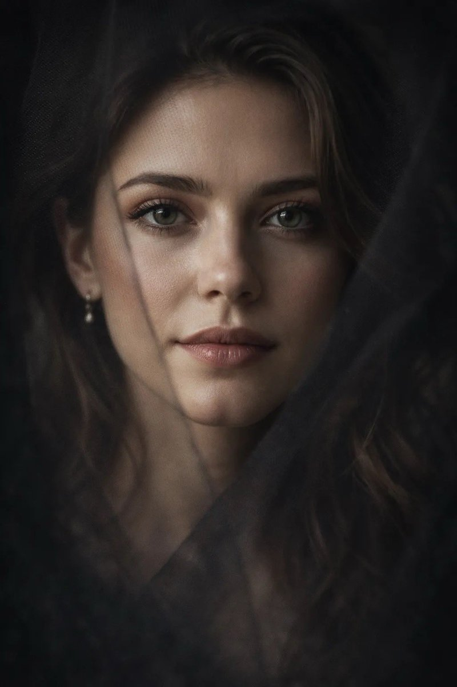
案例2127: Transform this image [UPLOAD YOUR IMAGE] into a 64K DSLR qual...
Transform this image [UPLOAD YOUR IMAGE] into a 64K DSLR quality shot resolution Ultra hyperrealistic cinematic Creat...
🎨 查看AI提示词
🇨🇳 中文提示词
将此图像 [UPLOAD YOUR IMAGE] 转换为 64K DSLR 画质分辨率的极致超写实电影感画面。创建一张逼真的美丽人像，纵向 4:5 画幅，以紧密特写到极端特写拍摄。构图主要聚焦面部——从额头上方一点到嘴唇略下方——留有极少的负空间。相机位于靠近主体的中近距离（与上传的
🇬🇧 English Prompt
Transform this image [UPLOAD YOUR IMAGE] into a 64K DSLR-quality shot resolution Ultra-hyperrealistic cinematic Create a photorealistic, beauty portrait in a vertical 4:5 frame, captured as a tight cl...
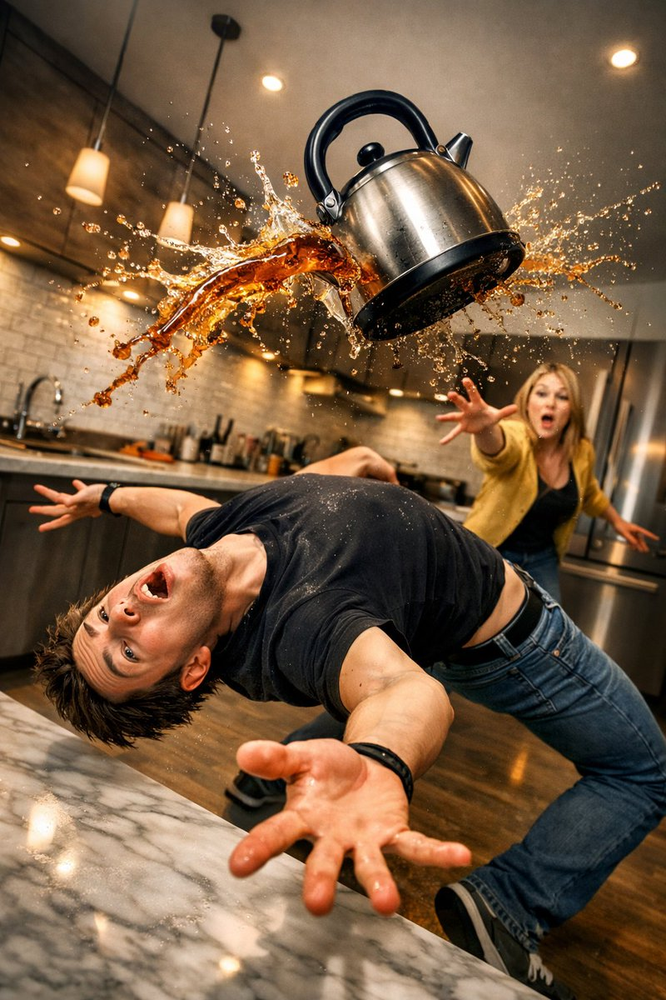
案例2126: Surreal comedic scene inside a modern kitchen: a young man be...
Surreal comedic scene inside a modern kitchen: a young man bends backward in an extreme dodge pose, acrobatic and exa...
🎨 查看AI提示词
🇨🇳 中文提示词
现代厨房内的超现实喜剧场景：一名年轻男子做出极端后仰躲避的姿势，杂技般且夸张，水壶悬在他上方空中，热茶在一个戏剧性冻结的瞬间飞溅。背景中的一名女性伸出手臂，仿佛是她不小心扔出水壶，表情震惊且充满活力。动态动作定格、戏剧性的液体飞溅、广角镜头畸变、细节清晰、逼真光照、电影级色彩调校、幽默叙事、高分辨率数字艺术。
🇬🇧 English Prompt
Surreal comedic scene inside a modern kitchen: a young man bends backward in an extreme dodge pose, acrobatic and exaggerated, with a kettle mid-air above him splashing hot tea in a dramatic frozen mo...
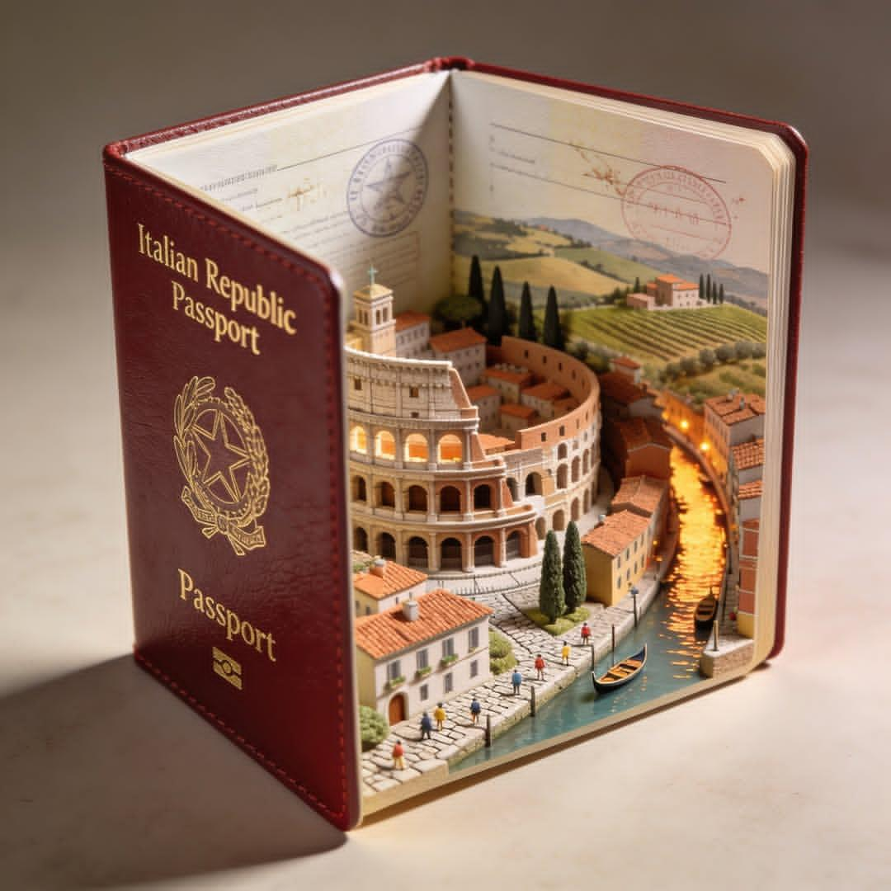
案例2115: Hyper realistic open [COUNTRY] passport on a studio surface,...
Hyper realistic open [COUNTRY] passport on a studio surface, with gold embossed “[Official Passport Name]” text and l...
🎨 查看AI提示词
🇨🇳 中文提示词
超写实地打开的[COUNTRY]护照放置在摄影棚表面，带有金色压印的“[Official Passport Name]”字样和皮革纹理。从其页面中升起一个迷你的3D微缩景观，呈现[COUNTRY]，包含[ICONIC LANDMARKS]、[CITYSCAPES/COASTLINES/COUNTRYSIDE]，并有用于比例的微小人物。护照页面显示印章和纸张纹理。柔和的电影灯光，浅景深，超细节的逼真...
🇬🇧 English Prompt
Hyper-realistic open [COUNTRY] passport on a studio surface, with gold-embossed “[Official Passport Name]” text and leather texture. From its pages rises a miniature 3D diorama of [COUNTRY], featuring...
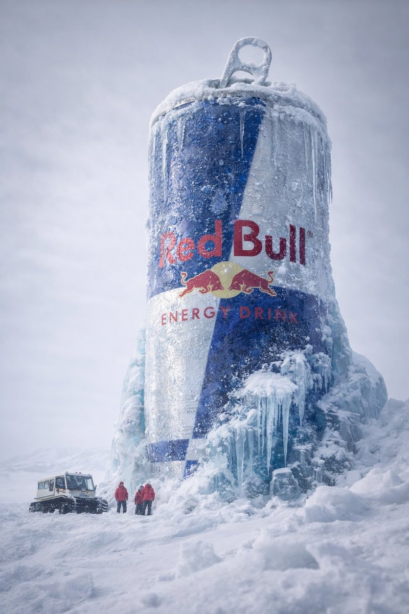
案例2060: Hyper realistic cinematic 8k photograph, low angle wide persp...
Hyper realistic cinematic 8k photograph, low angle wide perspective. A massive Monster Energy can standing vertically...
🎨 查看AI提示词
🇨🇳 中文提示词
超写实电影级 8k 摄影，低角度广角视角。一只巨大的 Monster Energy 罐垂直耸立，如同极地纪念碑，部分被厚厚的蓝色冰层和积雪冻结包裹。霜覆盖着有纹理的表面，标志和罐沿处形成冰柱，雪填满了拉环开口。雪地车和身着红色派克大衣的科学家们突显了规模。阴天的北极日光，HDR，超细致的冰冻纹理，电影级写实 --ar 2:3
🇬🇧 English Prompt
Hyper-realistic cinematic 8k photograph, low-angle wide perspective. A massive Monster Energy can standing vertically like an arctic monument, partially frozen inside thick blue ice and snow. Frost co...
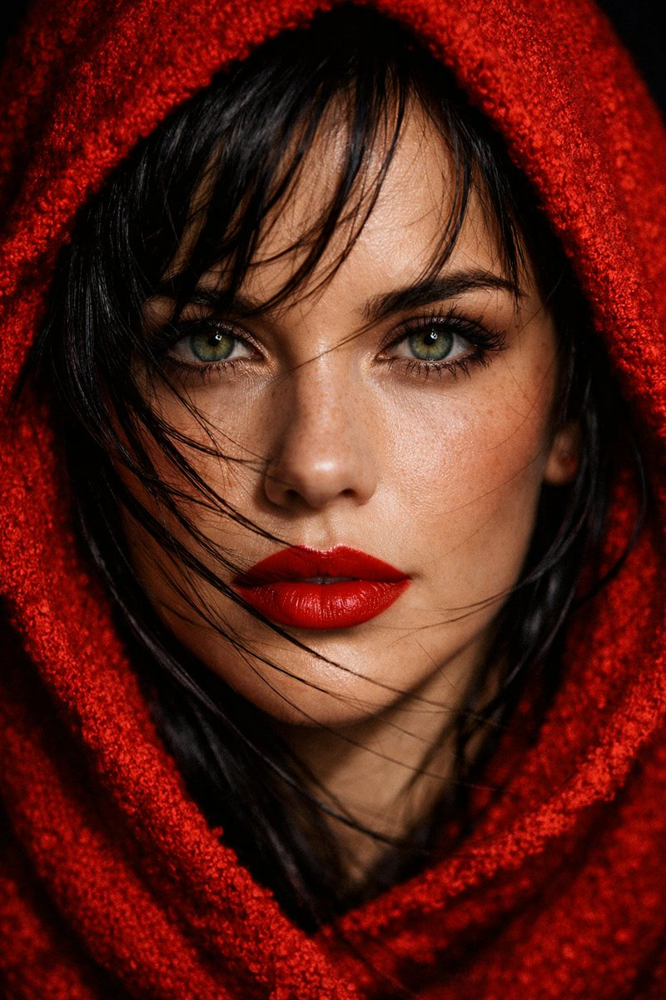
案例2050: Extreme close up portrait of a woman with piercing green eyes...
Extreme close up portrait of a woman with piercing green eyes and bold, matte red lips, her face framed by a vibrant...
🎨 查看AI提示词
🇨🇳 中文提示词
极近特写肖像：一位女性有着炯炯有神的绿色眼睛和大胆的哑光红唇，面容被一顶鲜艳的红色纹理兜帽所框住。戏剧化的电影灯光在她的面庞上投射出鲜明的阴影，细细的乌黑发丝随风拂过她的脸。高端时尚社论摄影风格、超写实、焦点清晰、强烈的凝视，以及以深红与黑色为主的高对比色调。
🇬🇧 English Prompt
Extreme close-up portrait of a woman with piercing green eyes and bold, matte red lips, her face framed by a vibrant red textured hood. Dramatic cinematic lighting creates sharp shadows across her fea...

案例2044: "ENVIRONMENT": {
{ "ENVIRONMENT": { "Background": "Gradient(Dark Warm Brown)", "Atmospheric FX": ["Floating Particles", "Depth Blur",...
🎨 查看AI提示词
🇨🇳 中文提示词
{ "ENVIRONMENT": { "Background": "渐变（深暖棕）", "Atmospheric_FX": ["漂浮粒子", "景深模糊", "电影散景"], "Lighting": { "Type": "定向工作室暖光", "Highlights": "镜面光泽反射", "Shadow_Softness": "高" ...
🇬🇧 English Prompt
{ "ENVIRONMENT": { "Background": "Gradient(Dark_Warm_Brown)", "Atmospheric_FX": ["Floating_Particles", "Depth_Blur", "Cinematic_Bokeh"], "Lighting": { "Type": "Directional_Studio_W...
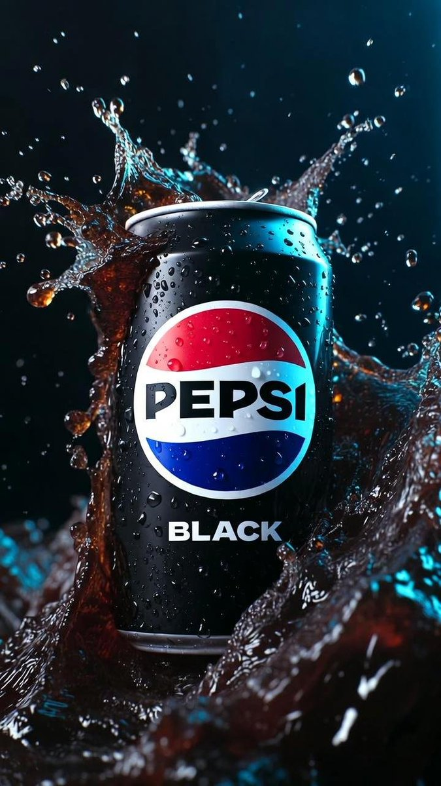
案例2038: Hyper realistic cinematic product photograph of a Pepsi Black...
Hyper realistic cinematic product photograph of a Pepsi Black can, front facing and perfectly legible, ice cold surfa...
🎨 查看AI提示词
🇨🇳 中文提示词
超真实感的电影感产品照片，主体为正面朝向、字样清晰可辨的百事黑（Pepsi Black）罐，冰冷表面覆盖着清脆的冷凝水珠。深色可乐的飞溅在罐体周围以冻结的瞬间爆裂，光泽的液体波纹和细小水珠在光线下闪耀。阴郁的低调照明，配以冷蓝色轮廓光和柔和的前部补光，浅景深，极致清晰的纹理细节，呈现高端广告美学。
🇬🇧 English Prompt
Hyper-realistic cinematic product photograph of a Pepsi Black can, front-facing and perfectly legible, ice-cold surface covered in crisp condensation. Dark cola splashes explode around the can in froz...
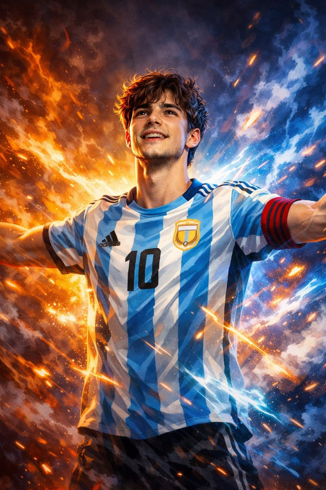
案例2034: Fantastic digital painting of a young man with high detail, s...
Fantastic digital painting of a young man with high detail, smooth shading, and sharp, bold lines. He stands in a pow...
🎨 查看AI提示词
🇨🇳 中文提示词
一幅精彩的数位绘画，描绘一位年轻男子，细节丰富、阴影平滑、线条锐利大胆。他以强而有力的胜利姿势站立，双臂张开，表情自信且无畏。巧妙混合的背景环绕着他，带有盘旋的烟雾和火焰般的能量效果。霓虹火花从他体内辐射，形成充满活力的发光光环，具有电影感的照明和戏剧性的对比。
🇬🇧 English Prompt
Fantastic digital painting of a young man with high detail, smooth shading, and sharp, bold lines. He stands in a powerful victory pose with his arms outstretched, confident and fearless expression. A...

案例2027: "resolution": "8K",
{ "resolution": "8K", "aspect ratio": "3:4", "image type": "photorealistic commercial product render", "scene descrip...
🎨 查看AI提示词
🇨🇳 中文提示词
{ "resolution": "8K", "aspect_ratio": "3:4", "image_type": "逼真写实的商业产品渲染", "scene_description": { "main_subject": "插在木棒上的冰淇淋棒，垂直居中", "orientation": "直立、正面朝向、略带俯视角度", "composition": ...
🇬🇧 English Prompt
{ "resolution": "8K", "aspect_ratio": "3:4", "image_type": "photorealistic commercial product render", "scene_description": { "main_subject": "A vertically centered ice cream bar on a wood...
案例2019: Create a 4:5 poster with a miniature 3D model of New York Cit...
Create a 4:5 poster with a miniature 3D model of New York City, featuring the Statue of Liberty, Empire State Buildin...
🎨 查看AI提示词
🇨🇳 中文提示词
创建一张纵横比为4:5的海报，海报中有一个微缩的纽约市3D模型，展示自由女神像、帝国大厦和布鲁克林大桥从水平撕开的地图中冲破而出。“New York”的名字以时尚的白色3D字母出现，与城市景观自然互动。使用戏剧化的透视、充满活力的色彩和工作室灯光，呈现锐利、细节丰富、超写实的摄影质感。
🇬🇧 English Prompt
Create a 4:5 poster with a miniature 3D model of New York City, featuring the Statue of Liberty, Empire State Building, and Brooklyn Bridge bursting through a horizontally torn map. The name “New York...

案例2007: "global settings": {
{ "global settings": { "resolution": "8K ultra high definition", "aspect ratio": "3:4 vertical", "render style": "pho...
🎨 查看AI提示词
🇨🇳 中文提示词
{ "全局设置": { "分辨率": "8K 超高清", "纵横比": "3:4 纵向", "渲染风格": "写实高端饼干摄影", "品质": "奢华广告标准", "清晰度": "超清且细腻纹理可见", "颗粒感": "无", "视觉伪影": "无", "景深": "选择性对焦，背景柔和虚化", "动态捕捉": "食材悬浮...
🇬🇧 English Prompt
{ "global_settings": { "resolution": "8K ultra-high-definition", "aspect_ratio": "3:4 vertical", "render_style": "photorealistic high-end biscuit photography", "quality": "luxury adv...
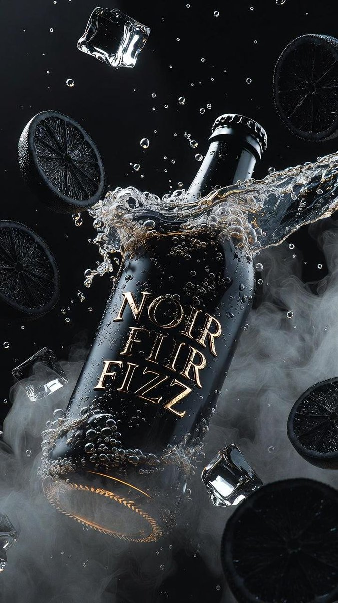
案例1999: Ultra cinematic product photography of a matte black luxury s...
Ultra cinematic product photography of a matte black luxury soda bottle labeled “NOIR FIZZ”, floating mid air at a sh...
🎨 查看AI提示词
🇨🇳 中文提示词
超电影级产品摄影：一只哑光黑色豪华汽水瓶，标有“NOIR FIZZ”，以锐利的斜角悬浮于半空；碳酸气泡与汽水波浪被定格于瞬间，破碎的冰块与光泽的黑色柑橘切片悬浮其间；戏剧性的低调照明，强烈的轮廓光、金属质感高光与深邃阴影；黑金配色、体积雾、微距质感、超写实玻璃、8K、高端商业广告风格。
🇬🇧 English Prompt
Ultra-cinematic product photography of a matte black luxury soda bottle labeled “NOIR FIZZ”, floating mid-air at a sharp diagonal angle; carbonated bubbles and liquid soda waves frozen in motion, shat...

案例1995: "global settings": {
{ "global settings": { "resolution": "8K ultra high definition", "aspect ratio": "3:4 vertical", "render style": "hyp...
🎨 查看AI提示词
🇨🇳 中文提示词
{ "全局设置": { "分辨率": "8K 超高清", "长宽比": "3:4 纵向", "渲染风格": "超写实商业食品摄影", "质量": "高级广告级", "清晰度": "极致微观细节，边缘清晰", "噪点": "无", "伪影": "无", "景深": "浅景深，以主体为焦点", "运动": "空中冻结的食材",...
🇬🇧 English Prompt
{ "global_settings": { "resolution": "8K ultra-high-definition", "aspect_ratio": "3:4 vertical", "render_style": "hyper-realistic commercial food photography", "quality": "premium ad...

案例1994: "master prompt": {
{ "master prompt": { "global settings": { "resolution": "8K ultra high definition", "aspect ratio": "3:4 vertical", "...
🎨 查看AI提示词
🇨🇳 中文提示词
{ "master_prompt": { "global_settings": { "resolution": "8K 超高清", "aspect_ratio": "3:4 纵向", "style": "超写实 AI 编辑的商业饮料摄影", "sharpness": "极致清晰，微观细节可见", "lighting_quali...
🇬🇧 English Prompt
{ "master_prompt": { "global_settings": { "resolution": "8K ultra-high-definition", "aspect_ratio": "3:4 vertical", "style": "hyper-realistic AI-edited commercial beverage phot...
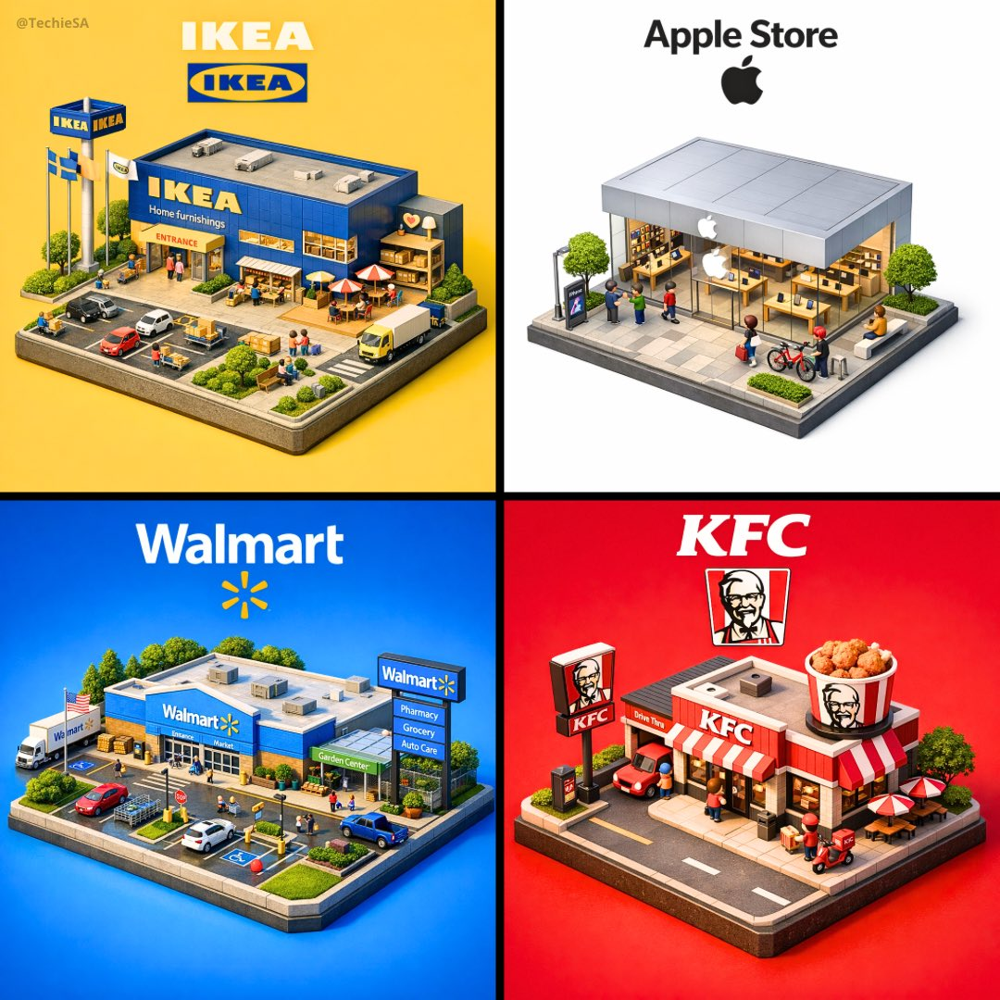
案例1990: Present a clear, 45° top down isometric miniature 3D cartoon...
Present a clear, 45° top down isometric miniature 3D cartoon diorama of the [BRAND], with soft refined textures, real...
🎨 查看AI提示词
🇨🇳 中文提示词
呈现一个清晰的 45° 自上而下等距视角微型 3D 卡通 diorama，以 [BRAND] 为主题，具有柔和精致的纹理、逼真的 PBR 材质和温和逼真的光照。 创建一个小型抬高的 diorama 风格底座，包含该店最具识别性的元素，如有需要可加入小型风格化人物（无面部细节）。 使用干净的纯色背景 [BACKGROUND COLOR]。 在顶端中央以大号粗体文本显示 [BRAND]，并将与 [B...
🇬🇧 English Prompt
Present a clear, 45° top-down isometric miniature 3D cartoon diorama of the [BRAND], with soft refined textures, realistic PBR materials, and gentle lifelike lighting. Create a small raised diorama-st...
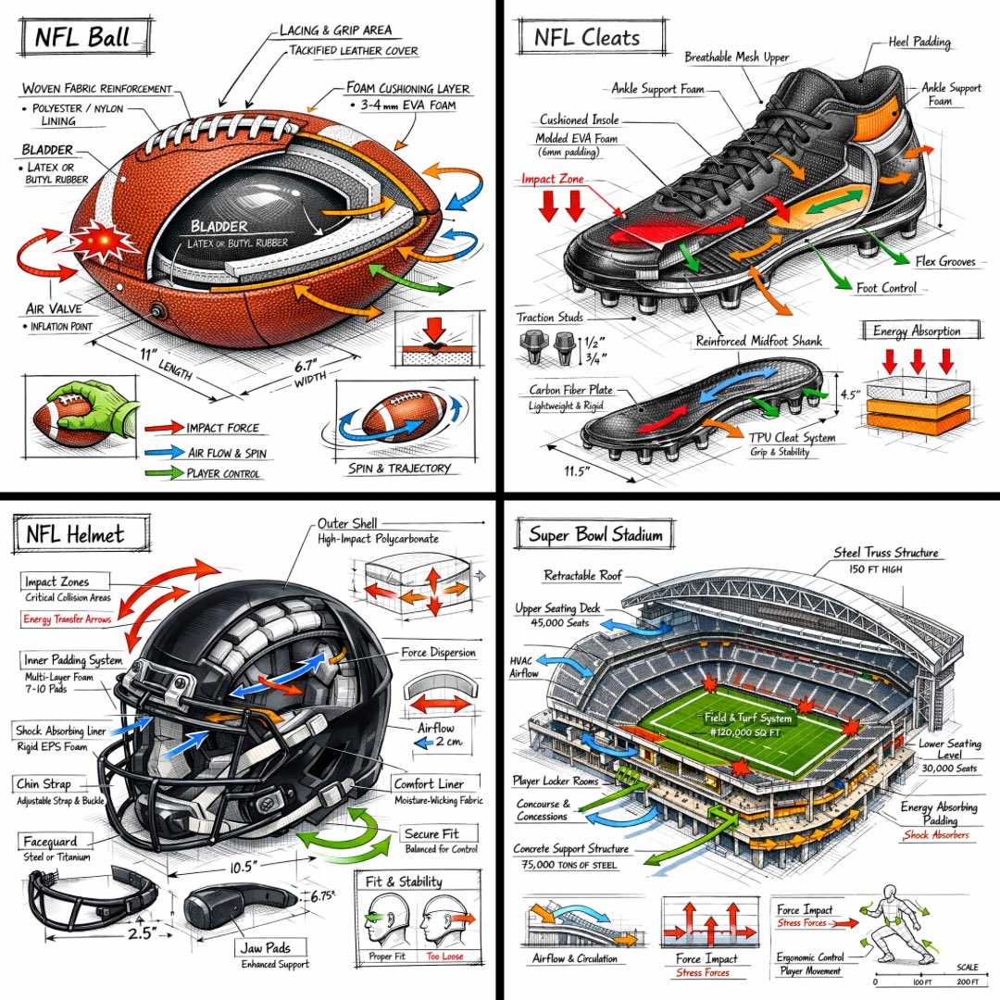
案例1979: Create a technical infographic of [OBJECT] with a 45 degree i...
Create a technical infographic of [OBJECT] with a 45 degree isometric 3D perspective, slightly tilted to reveal depth...
🎨 查看AI提示词
🇨🇳 中文提示词
创建一个带有 45 度等轴测 3D 透视的技术信息图，略微倾斜以展示深度、结构和内部构造。 将逼真的照片级渲染与黑色墨线技术注释结合在纯白背景上。包括： • 关键部件标签，配有简洁的标注框 • 通过切面或爆炸视图展示内部结构可见性 • 测量、尺寸与比例标记 • 材料标注与数量说明 • 颜色编码箭头指示功能系统： • 红色（RED）：冲击力、碰撞区、受力点 • 蓝色（BLUE）：气流、旋转...
🇬🇧 English Prompt
Create a technical infographic of [OBJECT] with a 45-degree isometric 3D perspective, slightly tilted to reveal depth, structure, and internal construction. Combine a realistic photoreal render with ...

案例1974: "master prompt": {
{ "master prompt": { "global settings": { "resolution": "8K ultra high definition", "aspect ratio": "3:4 vertical", "...
🎨 查看AI提示词
🇨🇳 中文提示词
{ "master_prompt": { "global_settings": { "resolution": "8K 超高清", "aspect_ratio": "3:4 纵向", "style": "超写实 AI 编辑的商业产品摄影", "sharpness": "极致清晰，微观细节可见", "lighting_quali...
🇬🇧 English Prompt
{ "master_prompt": { "global_settings": { "resolution": "8K ultra-high-definition", "aspect_ratio": "3:4 vertical", "style": "hyper-realistic AI-edited commercial product photo...
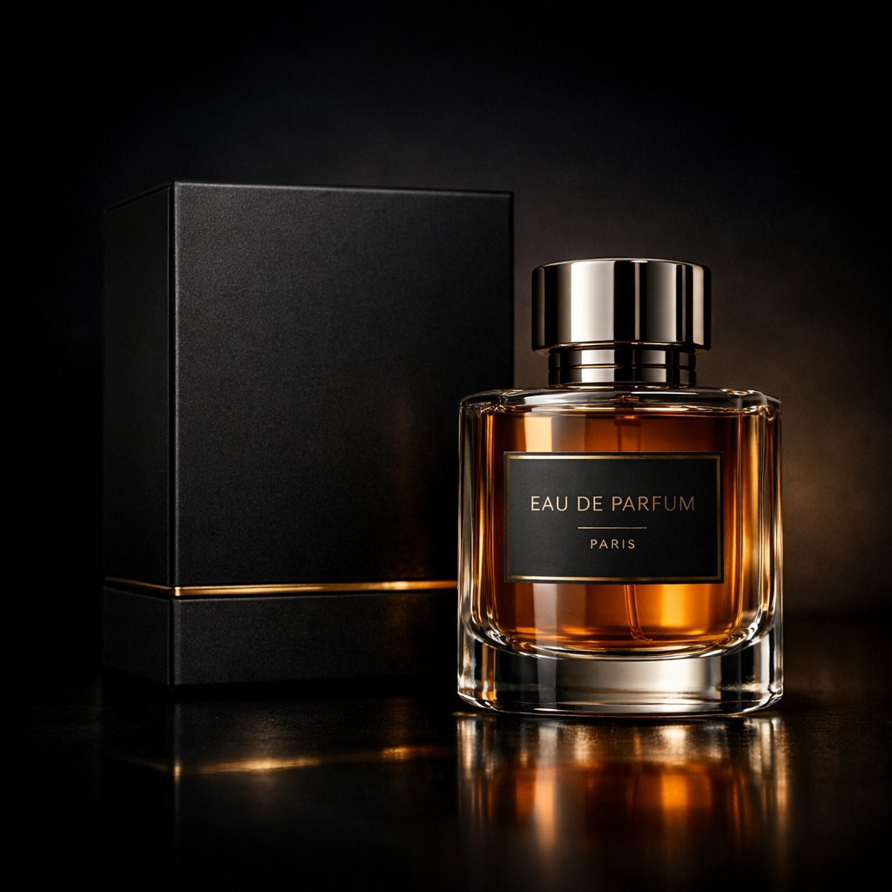
案例1972: Luxury perfume product photography in a dark cinematic studio...
Luxury perfume product photography in a dark cinematic studio. A premium black matte perfume box with sharp edges and...
🎨 查看AI提示词
🇨🇳 中文提示词
黑暗电影感工作室中的奢华香水产品摄影。 一款高级黑色哑光香水盒，棱角分明，带有低调的金色点缀，置于一只装有温暖琥珀色液体的透明玻璃香水瓶的略后方。 瓶身为厚实透明玻璃，配有抛光金属瓶盖。 极简优雅的标签设计，金色字体。 柔和的低调打光，背景为平滑的渐变暗色。 产品下方光泽表面的柔和反射。 戏剧性的阴影增添层次与对比。 高级时尚香氛广告风格。 超逼真的质感、清晰对焦、浅景深、专业工作室拍摄、8K画质...
🇬🇧 English Prompt
Luxury perfume product photography in a dark cinematic studio. A premium black matte perfume box with sharp edges and subtle gold accents placed slightly behind a transparent glass perfume bottle fill...

案例1960: "style": "Minimalist modern recipe infographic",
{ "style": "Minimalist modern recipe infographic", "visual aesthetic": { "photography style": "Top down / 3 quarter a...
🎨 查看AI提示词
🇨🇳 中文提示词
{ "style": "极简现代食谱信息图", "visual_aesthetic": { "photography_style": "俯拍 / 3/4 角度美食摄影", "design_language": "北欧风格，编辑类食谱排版", "background": "柔和中性米色 / 奶油色背景", "lighting": "柔和漫射光，伴有轻柔阴影",...
🇬🇧 English Prompt
{ "style": "Minimalist modern recipe infographic", "visual_aesthetic": { "photography_style": "Top-down / 3-quarter angle food photography", "design_language": "Scandinavian, editorial coo...
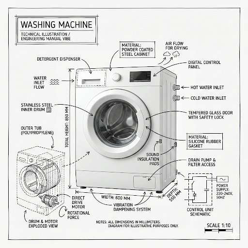
案例1948: Create an infographic image of [washing machine], combining a...
Create an infographic image of [washing machine], combining a realistic photograph or photoreal render of the object...
🎨 查看AI提示词
🇨🇳 中文提示词
创建一张关于[洗衣机]的信息图像，将对象的真实照片或写实渲染与直接覆盖在顶部的技术注解叠加在一起。 使用黑色墨线风格的线条绘图和文本（技术钢笔/建筑草图风格），在纯白色工作室背景上，包括： •关键部件标签 •内部剖切/爆炸视图轮廓 •尺寸、标注和比例尺标记 •材料标注及数量 •指示功能、力或流动的箭头（空气、声音、功率、压力） •在相关情况下的简单示意图或剖面图 将标题[PRODUCT]放置在...
🇬🇧 English Prompt
Create an infographic image of [washing machine], combining a realistic photograph or photoreal render of the object with technical annotation overlays placed directly on top. Use black ink–style lin...
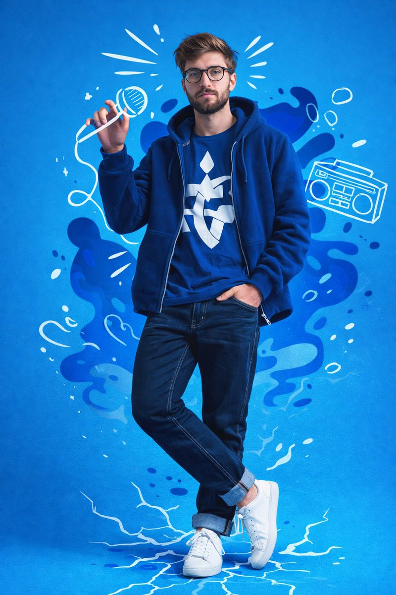
案例1944: "meta": {
{ "meta": { "image quality": "High", "image type": "Mixed Media (Photography + Vector Illustration)", "reference imag...
🎨 查看AI提示词
🇨🇳 中文提示词
{ "meta": { "image_quality": "高", "image_type": "混合媒介（摄影 + 矢量插画）", "reference_image_usage": "仅将所附图像用于人脸身份匹配。脸型、胡须、眼镜、眼睛、鼻子、嘴唇和发质必须完全匹配。不要复制参考图中的服装、灯光或背景。", "resolution_estimation": "...
🇬🇧 English Prompt
{ "meta": { "image_quality": "High", "image_type": "Mixed Media (Photography + Vector Illustration)", "reference_image_usage": "Use the attached image strictly for facial identity matchi...
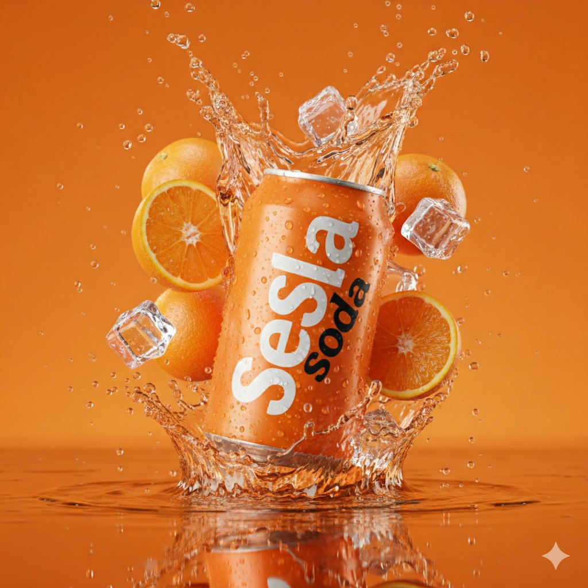
案例1937: "master prompt": {
{ "master prompt": { "global settings": { "resolution": "8K ultra high definition", "aspect ratio": "3:4 vertical", "...
🎨 查看AI提示词
🇨🇳 中文提示词
{ "master_prompt": { "global_settings": { "resolution": "8K 超高清", "aspect_ratio": "3:4 纵向", "style": "极其逼真的 AI 编辑商业产品摄影", "sharpness": "极致清晰度，微观细节可见", "lighting_qua...
🇬🇧 English Prompt
{ "master_prompt": { "global_settings": { "resolution": "8K ultra-high-definition", "aspect_ratio": "3:4 vertical", "style": "hyper-realistic AI-edited commercial product photo...
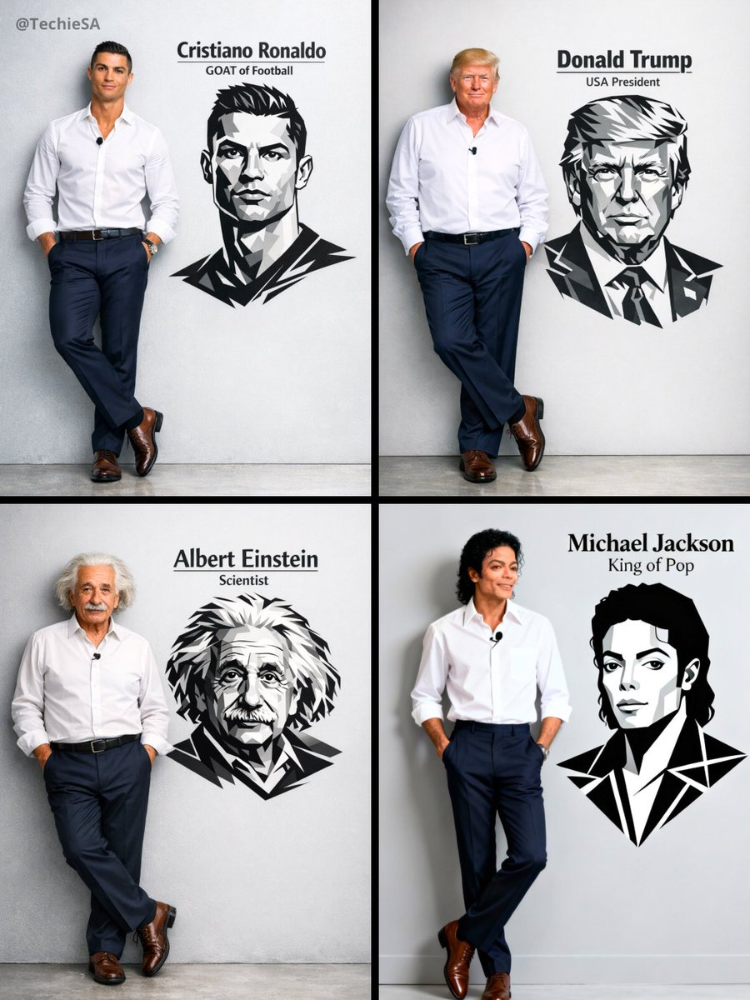
案例1929: Ultra realistic 8K full body portrait of [PERSON’S FULL NAME]...
Ultra realistic 8K full body portrait of [PERSON’S FULL NAME], wearing a clean and pressed white social shirt with fo...
🎨 查看AI提示词
🇨🇳 中文提示词
为[PERSON’S FULL NAME]创作的超写实 8K 全身肖像，身着干净熨帖的白色正装衬衫，翻领，佩戴小型领夹麦克风，下穿深海军蓝色正装长裤，脚踏擦拭光亮的棕色正装皮鞋。随性而不矫饰地倚靠在光滑的浅灰色摄影棚墙面上；双手插在口袋里，一条腿交叉搭在另一条腿上，肢体语言放松而自信。在其身旁的墙面添加一幅醒目的黑白矢量人像，呈现其面部与半身——线条与角度锐利、重叠的多边形形状以及极简现代的图形风...
🇬🇧 English Prompt
Ultra-realistic 8K full body portrait of [PERSON’S FULL NAME], wearing a clean and pressed white social shirt with folded collar and a small lapel microphone, dark navy-blue dress pants and polished b...
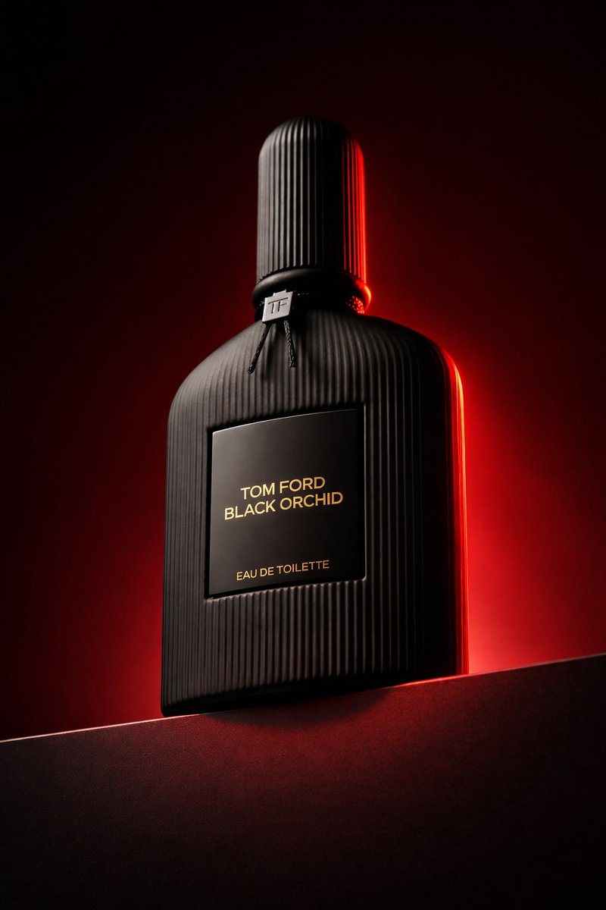
案例1920: Low angle luxury product photography of a black ribbed glass...
Low angle luxury product photography of a black ribbed glass perfume bottle placed on a dark horizontal podium, shot...
🎨 查看AI提示词
🇨🇳 中文提示词
低角度奢华产品摄影：一只有肋纹的黑色玻璃香水瓶放置在暗色水平台座上，从下方拍摄以营造英雄式、宏伟的感觉。瓶身为 Tom Ford Black Orchid，哑光黑质感清晰可见。 戏剧性的低调影棚照明。来自上方且略偏左的柔和漫射主光，轻柔照亮标签与顶部，展现体积与质感。来自后方且偏右的强烈硬质红色轮廓光，在瓶沿与瓶盖处形成大胆的红色轮廓，并有细微的红光溢入背景。 深邃且柔和的阴影，渐变过渡平滑。略微...
🇬🇧 English Prompt
Low angle luxury product photography of a black ribbed glass perfume bottle placed on a dark horizontal podium, shot from below for a heroic, monumental feel. The bottle is Tom Ford Black Orchid, matt...
案例1919: A surreal, hyper realistic close up scene of a miniature [CAR...
A surreal, hyper realistic close up scene of a miniature [CAR] driving along a winding road that seamlessly transform...
🎨 查看AI提示词
🇨🇳 中文提示词
一个超现实、超写实的特写场景：微型[CAR]沿着一条蜿蜒的道路行驶，道路无缝地转变为一张印有[ CITY ], [ COUNTRY ]的纸质地图。 道路自然而然地过渡为地图上印刷的街道、边界和字体，车辆直接行驶在地图标签“[CITY]”之上。周围地形反映[COUNTRY]的自然景观——地形质感、地面颜色和环境细节真实契合该地区（例如沙漠、山脉、海岸、乡村）。 地图具有清晰的制图细节、标注的道路...
🇬🇧 English Prompt
A surreal, hyper-realistic close-up scene of a miniature [CAR] driving along a winding road that seamlessly transforms into a printed paper map of [CITY], [COUNTRY]. The road transitions naturally in...
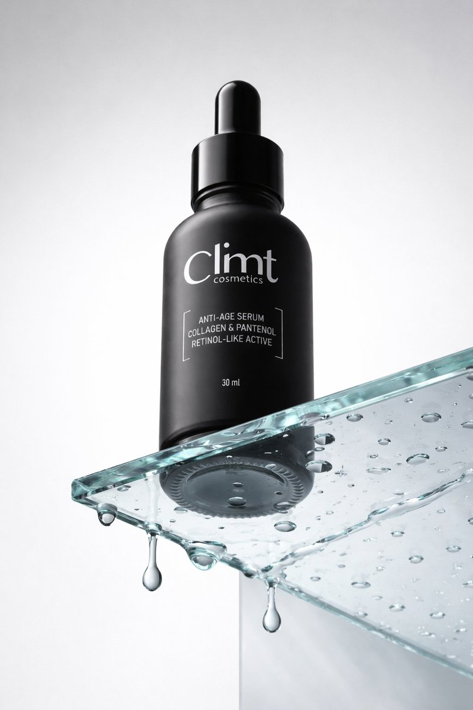
案例1909: Commercial luxury product photography, photorealistic, ultra...
Commercial luxury product photography, photorealistic, ultra high detail, 8K quality. A minimalist matte black cosmet...
🎨 查看AI提示词
🇨🇳 中文提示词
商业级奢侈品摄影，写实逼真，超高细节，8K品质。一个极简风格、哑光黑色的化妆品滴管瓶，放置在透明玻璃展台上。低角度镜头视角，使瓶子显得高大而充满力量。通过透明玻璃可以清晰看到瓶底。玻璃表面覆盖着湿润的水珠，真实的水滴，玻璃下方还挂着几滴，仿佛在滴落的瞬间被定格。哑光浅灰色背景，无纹理或渐变。柔和、均匀的工作室照明，干净的反射，高端护肤品广告质感，聚焦清晰，材质真实，无干扰。
🇬🇧 English Prompt
Commercial luxury product photography, photorealistic, ultra high detail, 8K quality. A minimalist matte black cosmetic dropper bottle placed on a clear glass podium. Low angle camera view to make the...
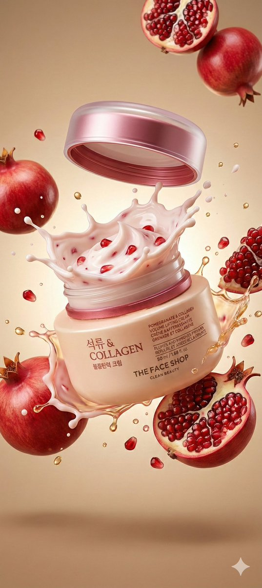
案例1906: "A hyperrealistic premium product photography scene of a smoo...
"A hyperrealistic premium product photography scene of a smooth beige cosmetic jar labeled “Collagen" Pomegranate & C...
🎨 查看AI提示词
🇨🇳 中文提示词
一个超写实的高端产品摄影场景：一只光滑米色的化妆品罐，标签为“Collagen 石榴与胶原丰盈提拉面霜”，在半空中爆裂开来，金属玫瑰金盖微微悬浮在罐上方，厚实、打发的浅粉色乳霜以戏剧性的溅起向上喷发，光泽感强且质地可见红色石榴籽，四周环绕着悬浮的完整红石榴和切半的石榴，露出闪亮的红宝石色籽粒，金色液滴和奶油状飞溅冻结在罐周围的运动中，容器略微向右倾斜并居中构图，从正面微距视角拍摄，由上方且稍微在后...
🇬🇧 English Prompt
"A hyperrealistic premium product photography scene of a smooth beige cosmetic jar labeled “Collagen" Pomegranate & Collagen Volume Lifting Cream” exploding open mid-air, with the metallic rose-gold l...
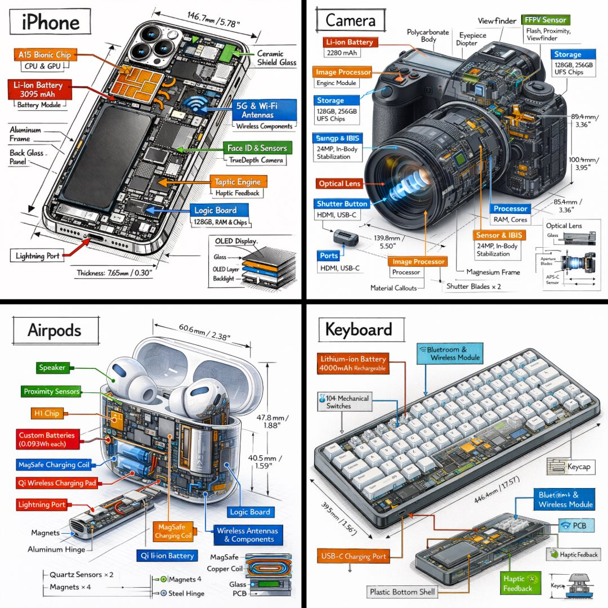
案例1880: Create a technical infographic of [OBJECT] with a 45 degree i...
Create a technical infographic of [OBJECT] with a 45 degree isometric 3D perspective showing the device slightly tilt...
🎨 查看AI提示词
🇨🇳 中文提示词
创建一个关于 [OBJECT] 的技术信息图，采用 45 度等角三维视角，设备略微倾斜以展示深度和立体感。 将逼真的照片级渲染与黑色墨线技术注释结合在纯白背景上。包括： - 关键组件标签，带有颜色编码的注释框 - 通过透明/剖切部分显示内部组件 - 测量、尺寸和精确比例标记 - 材料说明和数量 - 功能/流向的颜色编码箭头：红色（电源/电池）、蓝色（数据/连接）、橙色（散热/处理器）、绿色（传感器...
🇬🇧 English Prompt
Create a technical infographic of [OBJECT] with a 45-degree isometric 3D perspective showing the device slightly tilted to reveal depth and dimension. Combine a realistic photoreal render with black i...
案例1879: A hand carved wooden miniature figure of [NAME], shaped with...
A hand carved wooden miniature figure of [NAME], shaped with visible knife marks, natural grain texture, and smooth u...
🎨 查看AI提示词
🇨🇳 中文提示词
一尊手工雕刻的[NAME]木质微型雕像，具有可见的刀痕、自然的木纹质感，以及光滑的未作表面处理的边缘。置于工坊的工作台上，周围有雕刻工具、木屑和柔和温暖的定向光照。1080×1080。
🇬🇧 English Prompt
A hand-carved wooden miniature figure of [NAME], shaped with visible knife marks, natural grain texture, and smooth unfinished edges. Placed on a workshop table with carving tools, wood shavings, and ...
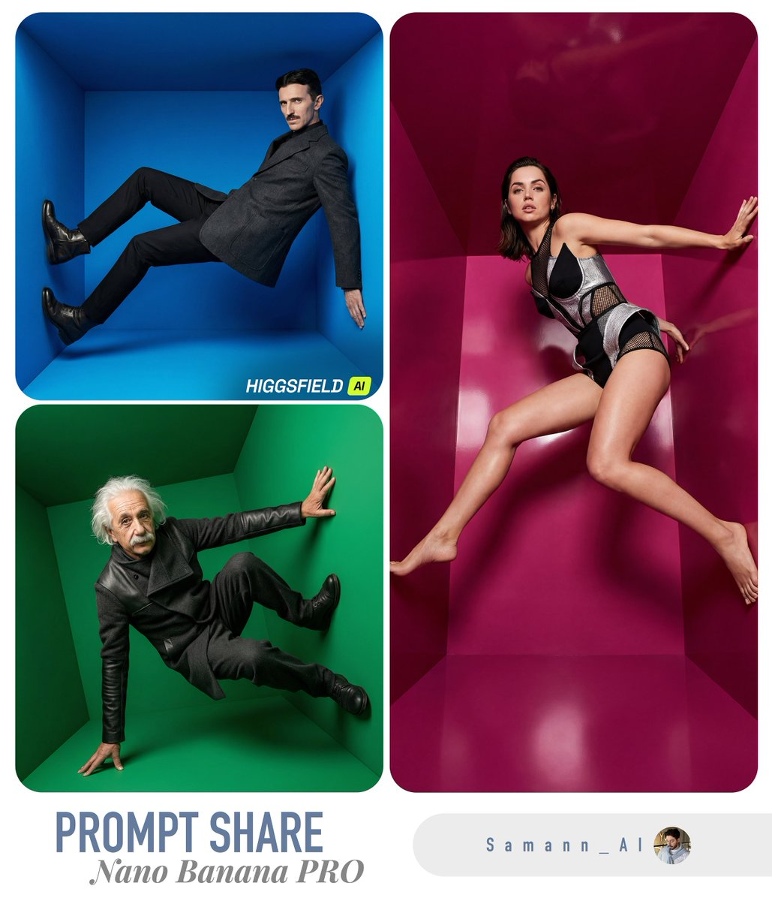
案例1857: [INPUT IMAGE: USER PHOTO] Use the person in the input image a...
[INPUT IMAGE: USER PHOTO] Use the person in the input image as the ONLY subject. Preserve their identity and facial f...
🎨 查看AI提示词
🇨🇳 中文提示词
[输入图片：USER_PHOTO] 将输入图片中的人物作为唯一主体。清晰保留他们的身份和面部特征。 在一个超现实的三维几何“颜色盒子”房间（空心立方体/倾斜方盒布景）内创建一张高度写实的高定时尚编辑写真。每次渲染必须随机选择： 1) 一种大胆的单色盒子（单色环境，鲜明且饱和）， 2) 一个动态的“酷”时尚姿势（重力无效的姿势或极端拉伸/跃起/侧向贴墙支撑）， 3) 一个戏剧性的摄影角度（广角等效...
🇬🇧 English Prompt
[INPUT IMAGE: USER_PHOTO] Use the person in the input image as the ONLY subject. Preserve their identity and facial features clearly. Create a hyper-realistic high-fashion editorial photo inside a su...

案例1855: "image type": "high detail food photography, AI edited surrea...
{ "image type": "high detail food photography, AI edited surreal composition", "resolution": "8K ultra high definitio...
🎨 查看AI提示词
🇨🇳 中文提示词
{ "image_type": "高细节食品摄影，AI 编辑的超现实构图", "resolution": "8K 超高清", "aspect_ratio": "3:4", "main_subject": { "object": "单块立方体状红丝绒蛋糕", "position": "悬浮在半空中", "orientation": "略微倾斜，正面可见，顶部糖...
🇬🇧 English Prompt
{ "image_type": "high-detail food photography, AI-edited surreal composition", "resolution": "8K ultra-high-definition", "aspect_ratio": "3:4", "main_subject": { "object": "single cube-sha...
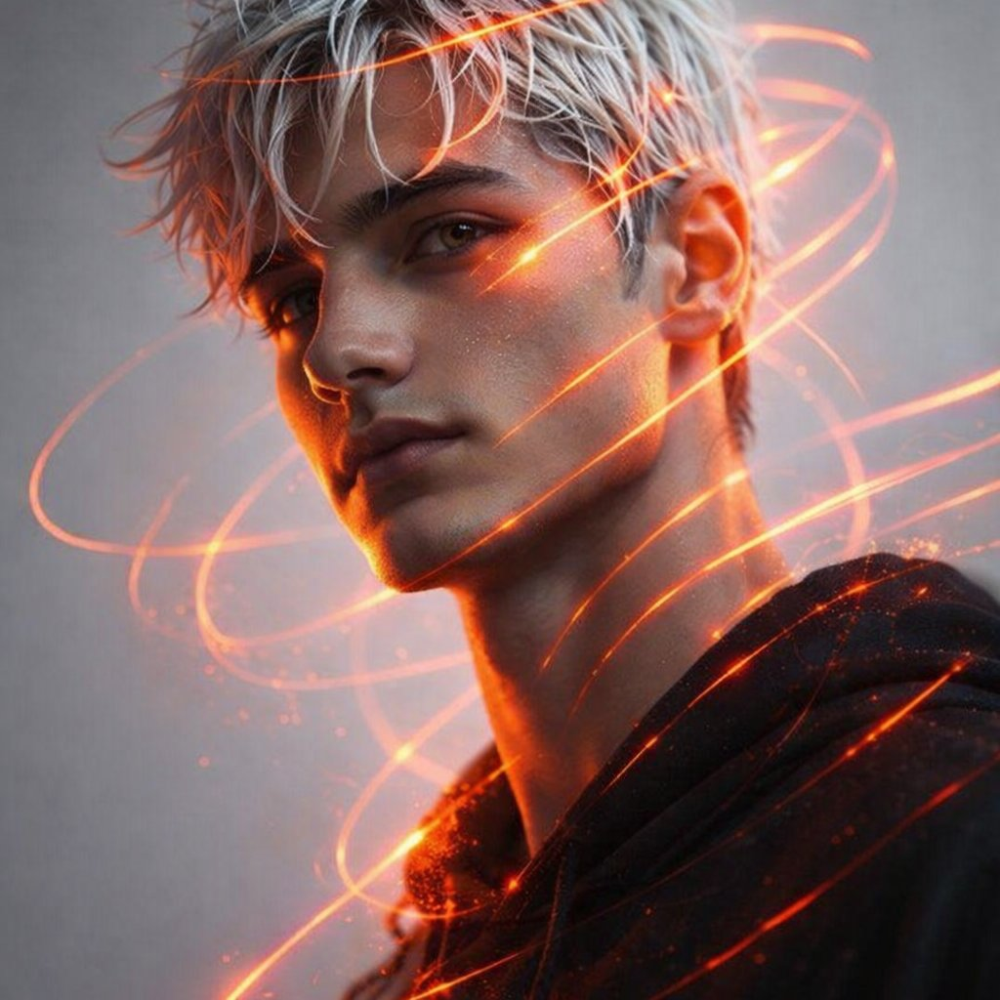
案例1847: Portrait of a 21 year old man of appearance with masculine fa...
Portrait of a 21 year old man of appearance with masculine facial features and white hair styled with a wet look. The...
🎨 查看AI提示词
🇨🇳 中文提示词
一位外表21岁的男性肖像，具有阳刚的面部特征，白色头发呈湿发造型。相机角度略偏侧面和下方。面部表情中性，背景为非常浅的灰色。头部周围有橙红色的发光光线和抽象的光带穿过面部与颈部，营造出动感且高科技的效果。未来感氛围，专业灯光，强调细节。色彩饱和，面部左侧被照亮，右侧处于阴影。高度细节化、高质量的现代风格摄影。
🇬🇧 English Prompt
Portrait of a 21-year-old man of appearance with masculine facial features and white hair styled with a wet look. The camera angle is slightly from the side and below. Neutral facial expression, very ...
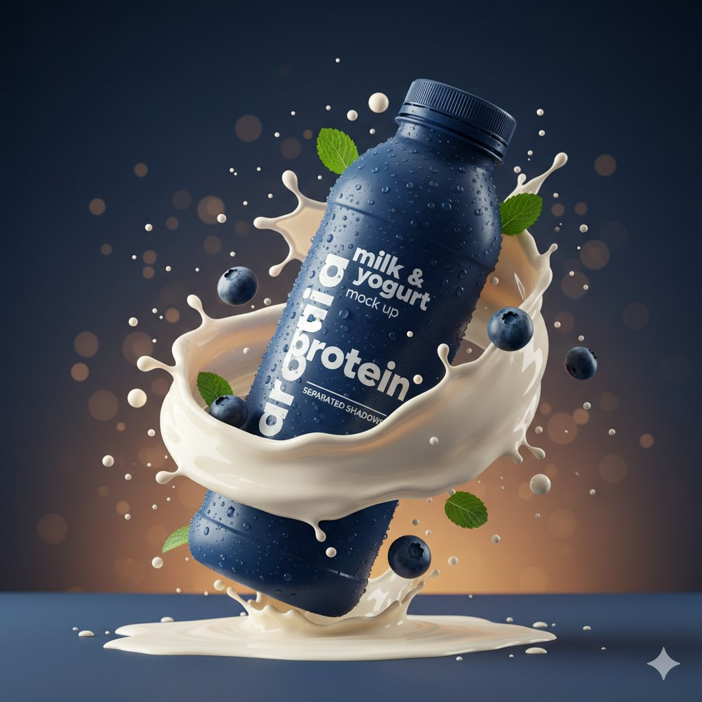
案例1841: "master prompt": {
{ "master prompt": { "global settings": { "resolution": "8K ultra high definition", "aspect ratio": "3:4 vertical", "...
🎨 查看AI提示词
🇨🇳 中文提示词
{ "master_prompt": { "global_settings": { "resolution": "8K 超高清", "aspect_ratio": "3:4 纵向", "style": "超逼真 AI 编辑的商业产品摄影", "sharpness": "极致清晰，可见微小细节", "lighting_quali...
🇬🇧 English Prompt
{ "master_prompt": { "global_settings": { "resolution": "8K ultra-high-definition", "aspect_ratio": "3:4 vertical", "style": "hyper-realistic AI-edited commercial product photo...

案例1830: "global settings": {
{ "global settings": { "resolution": "8K ultra high definition", "aspect ratio": "2:3 vertical", "style": "hyper real...
🎨 查看AI提示词
🇨🇳 中文提示词
{ "全局设置": { "分辨率": "8K 超高清", "纵横比": "2:3（纵向）", "风格": "超写实的 AI 编辑美食摄影", "清晰度": "极致锐度，微观纹理可见", "动态": "冻结动作，食材悬浮", "灯光质量": "工作室级、高对比、电影感", "背景分离": "强烈的主体分离与干净的景深" }, "模...
🇬🇧 English Prompt
{ "global_settings": { "resolution": "8K ultra high definition", "aspect_ratio": "2:3 vertical", "style": "hyper-realistic AI-edited food photography", "clarity": "extreme sharpness,...
案例1824: A cinematic flash photography shot viewed through a rain stre...
A cinematic flash photography shot viewed through a rain streaked car window at night. Inside a vintage black car, a...
🎨 查看AI提示词
🇨🇳 中文提示词
"夜晚，通过被雨水划过的车窗看到的电影感闪光摄影镜头。车内是一辆复古的黑色轿车，一位时髦的亚洲女性，长发乌黑，戴着亮红色猫眼太阳镜、夸张的大圈耳环，穿着毛绒绿色毛衣。她涂着光泽感的红色口红，摆出酷酷的姿势。坐在她旁边酒红色皮座椅上的是一只戴着红色头巾的大只、毛茸茸的橘色虎斑猫。背景为模糊的城市街灯和绿色、青绿色调的散景。高对比度灯光，王家卫美学，复古90年代时尚氛围，真实质感，胶片颗粒，35mm摄...
🇬🇧 English Prompt
A cinematic flash-photography shot viewed through a rain-streaked car window at night. Inside a vintage black car, a chic Asian woman with long dark hair wears bright red cat-eye sunglasses, large hoo...
案例1787: A full body 3D stylized cartoon boy, Pixar/Disney inspired ch...
A full body 3D stylized cartoon boy, Pixar/Disney inspired character design, cute and modern look, generated from the...
🎨 查看AI提示词
🇨🇳 中文提示词
全身 3D 风格化卡通男孩，皮克斯/迪士尼风格角色设计，可爱且现代的外观，根据提供的参考照片生成。保留主体的面部结构、比例和身份，同时将其转换为风格化的动画形象。他有修剪整齐的短至中长发，发型与参考相匹配，表情丰富的眼睛，柔和的面部特征，以及友好自信的微笑。 他穿着干净的白色超大号T恤，搭配高腰款休闲夹克或连帽衫（可选）、修身裤，以及与整体配色相协调的现代运动鞋。小号斜挎包或背包增添一丝时尚感。修...
🇬🇧 English Prompt
A full-body 3D stylized cartoon boy, Pixar/Disney-inspired character design, cute and modern look, generated from the provided reference photo. Preserve the subject’s facial structure, proportions, an...
案例1766: Hyper realistic cinematic por trait of a young woman, with so...
Hyper realistic cinematic por trait of a young woman, with soft skin and deep gaze, standing by a window, her face il...
🎨 查看AI提示词
🇨🇳 中文提示词
超级写实的电影感年轻女性肖像，皮肤柔滑细腻，目光深邃，站在窗旁，面部被樱桃红霓虹反光照亮，阴影在她的五官上形成抽象图案。酒红色调主导背景，营造出具有氛围感的编辑风格。工作室级别的细节，光泽质感，清晰对焦。 --ar 2:3 --v 6.1 --style raw
🇬🇧 English Prompt
Hyper-realistic cinematic por-trait of a young woman, with soft skin and deep gaze, standing by a window, her face illuminated by cherry red neon reflections, shadows forming abstract pat-terns across...
案例1762: "prompt type": "beauty editorial collage",
{ "prompt type": "beauty editorial collage", "layout": { "structure": "4 panel split screen grid", "dividers": "Thick...
🎨 查看AI提示词
🇨🇳 中文提示词
{ "prompt_type": "美妆编辑拼贴", "layout": { "structure": "四格分屏网格", "dividers": "厚重的白色斜分隔线", "style": "现代杂志版面美学" }, "subject": { "demographic": "年轻女性", "aesthetic": "清新女孩 / 韩式美妆风...
🇬🇧 English Prompt
{ "prompt_type": "beauty_editorial_collage", "layout": { "structure": "4-panel split-screen grid", "dividers": "Thick white diagonal borders", "style": "Modern magazine spread aestheti...
案例1760: A hyper realistic 8K close up portrait of a person's head and...
A hyper realistic 8K close up portrait of a person's head and upper neck, shot from a slightly low angle perspective...
🎨 查看AI提示词
🇨🇳 中文提示词
一个超写实的8K特写肖像，拍摄对象为头部和上颈部，采用略微低角度视角向上拍摄。 使用上传的图像作为面部参考——面部必须100%完全一致（相同的身份、面部结构、比例、皮肤细节和表情）。不要以任何方式更改面部。 主体佩戴明亮的黄色太阳镜，反光镜片中映出以粉色、蓝色和黄色为主的多彩抽象数字场景。 面部以细致的灰阶呈现，显示逼真的皮肤纹理、毛孔和下颌线上的浅胡茬，与头部其余部分形成强烈对比。 头发以及大部...
🇬🇧 English Prompt
A hyper-realistic 8K close-up portrait of a person's head and upper neck, shot from a slightly low-angle perspective looking upward. Use the uploaded image as the face reference - the face must match ...
案例1750: Use the uploaded picture to create a cinematic sci fi scene o...
Use the uploaded picture to create a cinematic sci fi scene of a fierce futuristic biker riding a heavy armored motor...
🎨 查看AI提示词
🇨🇳 中文提示词
使用上传的图片来创作一个电影感的科幻场景：一名凶悍的未来风摩托骑手骑着一辆重型装甲摩托车穿越广袤的沙漠。此人留着凌乱扎起的长马尾，戴着反光战术太阳镜，手臂上有明显的纹身。穿着粗犷的末日风服装，层叠布料、功能性绑带和装甲细节。 摩托车笨重且机械化，配有超大轮胎、裸露的机械构件和覆盖着尘土的磨损橙色金属面板。随着车辆前进，沙尘在车周围飞扬，营造出戏剧性的运动效果。暖金色阳光、朦胧的氛围、浅景深、超逼...
🇬🇧 English Prompt
Use the uploaded picture to create a cinematic sci-fi scene of a fierce futuristic biker riding a heavy armored motorcycle through a vast desert. The person has long hair tied in a messy ponytail, ref...

案例1744: "master prompt": {
{ "master prompt": { "global settings": { "resolution": "8K ultra high definition", "aspect ratio": "3:4 vertical", "...
🎨 查看AI提示词
🇨🇳 中文提示词
{ "主提示": { "全局设置": { "分辨率": "8K 超高清", "纵横比": "3:4 纵向", "图像质量": "极致清晰度，高动态范围，专业影棚灯光", "风格": "AI 编辑的超写实美食摄影", "焦点": "清晰纹理，冻结运动，液体动态，表面细节", "背景质量": "干净、可控、无噪点" }, "模块_1": { "标识": "图像 1 – 带紫色飞溅的冰淇淋蛋筒...
🇬🇧 English Prompt
{ "master_prompt": { "global_settings": { "resolution": "8K ultra high definition", "aspect_ratio": "3:4 vertical", "image_quality": "extreme sharpness, high dynamic range, professional studio lightin...

案例1730: Advertising style food photography of a stack of pancakes arr...
Advertising style food photography of a stack of pancakes arranged on a rustic table, with maple syrup droplets float...
🎨 查看AI提示词
🇨🇳 中文提示词
广告风格的美食摄影，展示一叠煎饼，摆放在质朴的桌子上，枫糖浆滴落在半空中漂浮，且糖浆的泼洒被定格在动态画面中。高分辨率的照片后期处理，具备选择性柔焦、用于文本的干净负空间、戏剧性的照明以及清晰的细节。 --ar 3:2 --v 7
🇬🇧 English Prompt
Advertising-style food photography of a stack of pancakes arranged on a rustic table, with maple syrup droplets floating above in mid-air and a splash of syrup frozen in motion. High-resolution photo ...
案例1715: A high fidelity 3D character render of a cute, stylized boy s...
A high fidelity 3D character render of a cute, stylized boy skateboarding in a dynamic pose. The boy has 'chibi' prop...
🎨 查看AI提示词
🇨🇳 中文提示词
高保真 3D 角色渲染：一个可爱、风格化的男孩做着滑板的动态姿势。男孩采用“chibi”比例，头大，戴着超大圆形细金属框眼镜，做出惊讶的“O”型嘴巴表情。他穿着一件极其毛绒、有质感的蓝色马海毛毛衣，胸前印有“OID”字样，戴着一顶同款毛绒蓝色毛线帽，帽子上有一个奶油色补丁，穿着宽松的迷彩图案裤子，面料如柔软的天鹅绒。他脚穿厚重的白色运动鞋，戴着带卡通脸的小项链包。背景为纯色、无缝的青绿色。光线为柔...
🇬🇧 English Prompt
A high-fidelity 3D character render of a cute, stylized boy skateboarding in a dynamic pose. The boy has 'chibi' proportions with a large head, wearing oversized round wire-frame glasses and making a ...
案例1711: Create a cinematic, high fashion half length portrait of me w...
Create a cinematic, high fashion half length portrait of me with a dreamy editorial vibe. Use multi exposure blur for...
🎨 查看AI提示词
🇨🇳 中文提示词
为我创作一幅电影感、高级时装风格的半身肖像，带有梦幻的编辑风格氛围。 使用多重曝光模糊以产生幽灵重影和垂直拖尾。 背景为蓝色渐变（#0033A0 到 #66CCFF），主体穿着一件宽松的白色T恤。 采用高对比度照明（冷蓝色主光洗色 + 橙/黄色边缘高光），营造未来感的光晕。 表情：中性/内省，眼部柔和照明。 模拟50–85mm焦段、f/1.8光圈的镜头，呈现浅景深。 辅以运动模糊和色差分离，同时保...
🇬🇧 English Prompt
Create a cinematic, high-fashion half-length portrait of me with a dreamy editorial vibe. Use multi-exposure blur for ghosting and vertical streaks. Set against a blue gradient background (#0033A0 to ...
案例1696: Convert this image into a dramatic, stylized portrait (use th...
Convert this image into a dramatic, stylized portrait (use the same face as the uploaded photo), 9:16 aspect ratio, f...
🎨 查看AI提示词
🇨🇳 中文提示词
将此图像转换为戏剧化、风格化的人像（使用与上传照片相同的面容），9:16 纵横比，主体为向左看的深色、几近剪影的侧面人像。背景为深邃的电蓝色。从头部和肩部向外爆发出强烈的黑色与宝蓝色油漆飞溅，营造出强劲的动感能量。超锐利的光效，电影般的对比度，高清照片。签名：DUET
🇬🇧 English Prompt
Convert this image into a dramatic, stylized portrait (use the same face as the uploaded photo), 9:16 aspect ratio, featuring a dark, almost silhouetted figure in profile looking to the left. The back...
案例1678: Ultra realistic photo featuring a young man (insert user’s ph...
Ultra realistic photo featuring a young man (insert user’s photo) in perfect detail, preserving 100% of his facial fe...
🎨 查看AI提示词
🇨🇳 中文提示词
超逼真的照片，描绘一位年轻男子（插入用户的照片），细节完美，100%保留其面部特征，穿着适合企鹅冰冷栖息地的保暖冬装（厚外套、围巾、手套、毛线帽）。该男子在雪与冰的环境中与企鹅自然互动（雪、冰、岩石、冰冻水面的倒影）。 包含自然和自发的拍照姿势： – 坐在岩石上，同时触摸一只企鹅
🇬🇧 English Prompt
Ultra-realistic photo featuring a young man (insert user’s photo) in perfect detail, preserving 100% of his facial features, wearing warm winter clothing suitable for the penguins’ icy habitat (thick ...

案例1671: "global settings": {
{ "global settings": { "resolution": "8K ultra high definition", "aspect ratio": "3:4", "camera style": "studio food...
🎨 查看AI提示词
🇨🇳 中文提示词
{ "global_settings": { "resolution": "8K 超高清", "aspect_ratio": "3:4", "camera_style": "电影感灯光的工作室美食摄影", "depth_of_field": "浅景深，主体清晰，背景柔和", "lighting": "柔和定向主光、细腻轮廓光、可控高光", "style": "带编辑信息图覆盖的超写实食物插画", ...
🇬🇧 English Prompt
{ "global_settings": { "resolution": "8K ultra high definition", "aspect_ratio": "3:4", "camera_style": "studio food photography with cinematic lighting", "depth_of_field": "shallow depth of field, sh...
案例1663: A dramatic ultra realistic portrait of a woman shown in extre...
A dramatic ultra realistic portrait of a woman shown in extreme close up, only half of her face visible. Her skin is...
🎨 查看AI提示词
🇨🇳 中文提示词
一个戏剧性而超现实主义的女人极端特写肖像，只有她脸的一半可见。她的皮肤上画着大胆的部落纹样，颜色为深红、藏青和柔和的土色，层叠着粗糙的纹理和象征性的图案。一只引人注目的淡蓝色眼睛清晰对焦，传达出力量、韧性和静默的强烈气质。她头上戴着风化的布料与编织物，边缘磨损，点缀着小木珠，暗示着古老或游牧文化。电影级灯光、柔和阴影、浅景深、深色中性背景、皮肤质感极为细致、绘画般的写实主义、8K画质、编辑海报风格...
🇬🇧 English Prompt
A dramatic ultra-realistic portrait of a woman shown in extreme close-up, only half of her face visible. Her skin is painted with bold tribal markings in deep red, navy blue, and muted earth tones, la...
案例1661: A futuristic cyber aesthetic portrait of a young woman wearin...
A futuristic cyber aesthetic portrait of a young woman wearing glowing neon yellow glasses, with luminous mathematica...
🎨 查看AI提示词
🇨🇳 中文提示词
一幅未来感的赛博美学肖像，描绘一位年轻女性戴着发光的霓虹黄色眼镜，面部和夹克上投射出发光的数学方程式。背景有柔和的蓝色散景光，营造出高科技氛围。超真实的细节，锐利的眼神，光滑的皮肤，以及鲜明的色彩对比。科幻数码光晕风格，沉浸而现代。她的表情冷静而专注。光线鲜艳且具有电影感，眼镜上有反光，衣物上有温暖的黄色高光。
🇬🇧 English Prompt
A futuristic cyber-aesthetic portrait of a young woman wearing glowing neon-yellow glasses, with luminous mathematical equations projected across her face and jacket. Soft bokeh blue lights in the bac...
案例1660: A high quality 3D render of a cute young boy riding an orange...
A high quality 3D render of a cute young boy riding an orange electric scooter next to a small, round, furry blue mon...
🎨 查看AI提示词
🇨🇳 中文提示词
一个高质量的3D渲染图，描绘一个可爱的小男孩骑着一辆橙色的电动滑板车，旁边是一只小巧、圆胖、毛茸茸的蓝色怪物。两个人物都露出震惊的表情，睁大眼睛、张着嘴。男孩穿着一件质感丰富、毛绒的青绿色毛衣，毛衣上有一个白色补丁，补丁上用红色文字写着“noo”，搭配棕色有图案的裤子和白色运动鞋。干净的青绿色工作室背景，柔和的灯光。
🇬🇧 English Prompt
A high-quality 3D render of a cute young boy riding an orange electric scooter next to a small, round, furry blue monster. Both characters have shocked expressions with wide eyes and open mouths. The ...

案例1649: Ultra premium cinematic food photography, 8K UHD, 3:4 aspect...
Ultra premium cinematic food photography, 8K UHD, 3:4 aspect ratio. A high end studio composition featuring a single...
🎨 查看AI提示词
🇨🇳 中文提示词
超高端电影质感美食摄影，8K UHD，3:4 纵横比。 高端影棚构图，以一个单独漂浮的碗为主角，在高速瞬间捕捉，配料悬浮于空中。画面传达出受控的能量感、新鲜感与纵情感。 光线柔和、有方向性且具影棚级，塑造质感，呈现干净的高光与自然的阴影。景深为浅到中等，突出主体的同时保持立体真实感。 色彩饱满却自然，对比平衡、饱和度精致。不使用人工光晕或夸张效果。 背景为无缝纯色或平滑渐变，经过精心挑选以衬托食材...
🇬🇧 English Prompt
Ultra-premium cinematic food photography, 8K UHD, 3:4 aspect ratio. A high-end studio composition featuring a single floating bowl as the hero subject, captured in a high-speed moment with ingredients...
案例1640: "prompt": "Ultra detailed stylized portrait using my face as...
{ "prompt": "Ultra detailed stylized portrait using my face as reference. Intellectual, modernist illustration style...
🎨 查看AI提示词
🇨🇳 中文提示词
{ "prompt": "以我的面部为参考的超细节风格化肖像。智性、现代主义插画风格，灵感来自建筑蓝图和社论线描。面部被分割为层叠的几何区域，面部平面内可见技术图示、城市内部、结构网格和抽象建筑元素。细致的墨线描绘、交叉阴影和雕刻式的明暗处理。干净的白色背景与密集的黑色线条绘制。\n\n仅在选定区域使用醒目的强调色：深红、柔和蓝和暖黄，以平面图形块和半透明叠加的形式呈现。眼神锐利、沉思，具有真...
🇬🇧 English Prompt
{ "prompt": "Ultra-detailed stylized portrait using my face as reference. Intellectual, modernist illustration style inspired by architectural blueprints and editorial line art. Face split into laye...
案例1639: A high quality, candid street photography shot of a stylish y...
A high quality, candid street photography shot of a stylish young woman with short wavy brown hair. She is wearing a...
🎨 查看AI提示词
🇨🇳 中文提示词
一张高质量、自然抓拍的街头摄影，拍摄对象是一位短波浪棕色头发的时尚年轻女性。她穿着一件酒红色开衫、超大号米色牛仔工装裤和一顶酒红色棒球帽。她戴着一副大型白色罩耳式耳机，肩上斜挎着一个黑色绗缝单肩包，包上挂着一个小毛绒狗钥匙扣。面容与参考相同。
🇬🇧 English Prompt
A high-quality, candid street photography shot of a stylish young woman with short wavy brown hair. She is wearing a maroon cardigan, oversized beige denim cargo pants, and a maroon baseball cap. She ...
案例1626: Create a vertical triptych collage.Use reference image. Maint...
Create a vertical triptych collage.Use reference image. Maintain her likeness naturally. Top panel: extreme close up...
🎨 查看AI提示词
🇨🇳 中文提示词
创建一幅垂直三联画拼贴。使用参考图像。自然地保持她的相貌。顶部面板：仅眼睛的极近特写，强烈的对角阴影，温暖的光线捕捉皮肤质感，黑暗沉郁的背景。中间面板：黑色电影风格特写，面部大部分被阴影吞没，一只榛色眼睛可见，长而尖的黑色指甲的手搭在脸颊上。嘴唇和下巴的特写，柔和哑光玫瑰色唇，黑色指甲放在嘴上，黑色针织服装。低调电影感照明，明暗对比，粗颗粒感，复古黑色电影调色板，Sony A7IV 电影镜头质感。
🇬🇧 English Prompt
Create a vertical triptych collage.Use reference image. Maintain her likeness naturally. Top panel: extreme close-up of eyes only, strong diagonal shadow, warm light catching skin texture, dark moody ...
案例1618: Use the uploaded photo as the main face reference. A dramatic...
Use the uploaded photo as the main face reference. A dramatic, high impact portrait rendered in an expressive ink ske...
🎨 查看AI提示词
🇨🇳 中文提示词
使用上传的照片作为主要面部参考。一幅戏剧性、强烈冲击力的肖像，以富有表现力的墨线速写和混合媒介插画风格呈现，精确沿用上传图像的面部相似度和比例。该男子以侧面描绘，气场强烈且混乱。他的面部和上半身被神秘的手写文字、符号和抽象字形层叠覆盖，部分环绕面部轮廓，暗示内心动荡与隐秘意义。他身着深色、抽象的夹克，大量质感笔触、锐利的角线描绘以及鲜明的墨色营造出粗犷、叛逆的视觉能量。插图大胆且实验性，融合精细钢...
🇬🇧 English Prompt
Use the uploaded photo as the main face reference. A dramatic, high-impact portrait rendered in an expressive ink sketch and mixed-media illustration style, using the uploaded image for exact facial l...
![Ultra clean modern recipe infographic. Showcase [FOOD] in a v...](../images/tweet-2013233539706233086-1.jpg)
案例1581: Ultra clean modern recipe infographic. Showcase [FOOD] in a v...
Ultra clean modern recipe infographic. Showcase [FOOD] in a visually appealing finished form—sliced, plated, or porti...
🎨 查看AI提示词
🇨🇳 中文提示词
超干净现代风格的食谱信息图。展示[FOOD]的吸睛成品形态——切片、装盘或分份——以略带透视或倾斜角度悬浮呈现。将食材、步骤和小贴士以动态编辑式布局环绕菜品排列，不局限于俯视布局。 食材部分：为每种食材配上图标或小插图并标注用量。可将它们以簇状、列表或环形流线排列，并在视觉上与菜品相连。 步骤部分：用编号面板、箭头或线条展示制备步骤，在主菜周围形成逻辑流程。必要时加入小型烹饪图标（刀、锅、烤箱...
🇬🇧 English Prompt
Ultra-clean modern recipe infographic. Showcase [FOOD] in a visually appealing finished form—sliced, plated, or portioned—floating slightly in perspective or angled view. Arrange ingredients, steps, a...
案例1568: Use the uploaded photo as the main face referenc. Preserve th...
Use the uploaded photo as the main face referenc. Preserve the exact facial structure, skin tone, beard shape, nose,...
🎨 查看AI提示词
🇨🇳 中文提示词
使用上传的照片作为主要面部参考。保留参考图像中准确的面部结构、肤色、胡须形状、鼻子、眼睛和表情。 一幅戏剧性、冲击力强的肖像，采用表现性的墨线速写与混合媒介插画风格呈现，使用上传的图像以确保面部高度相似与比例准确。 该男子以侧面轮廓展示，气场强烈且混乱。 他的面部和上半身覆盖着神秘的手写文字、符号和抽象字形，部分沿面部轮廓环绕，暗示内心的动荡与隐藏的含义。 他穿着一件深色、抽象的夹...
🇬🇧 English Prompt
Use the uploaded photo as the main face referenc. Preserve the exact facial structure, skin tone, beard shape, nose, eyes and expression from the reference image. A dramatic, high-impact portrait rend...
案例1548: Something I love doing with Nano Banana Pro is turning game s...
Something I love doing with Nano Banana Pro is turning game screenshots to real life photographs GPT Image 1.5 does a...
🎨 查看AI提示词
🇨🇳 中文提示词
我喜欢用 Nano Banana Pro 做的一件事是把游戏截图变成现实生活中的照片。GPT-Image-1.5 也做得非常好，但它会改变纵横比 https://t.co/78mqovjsXV
🇬🇧 English Prompt
Something I love doing with Nano Banana Pro is turning game screenshots to real-life photographs GPT-Image-1.5 does a really great job too, but it changes the aspect ratio https://t.co/78mqovjsXV
案例1534: Extreme close up cinematic portrait of a young man with dark,...
Extreme close up cinematic portrait of a young man with dark, messy, tousled hair falling over his forehead.He is wea...
🎨 查看AI提示词
🇨🇳 中文提示词
极端特写的电影感肖像：一位年轻男子，深色凌乱蓬松的头发垂落在额前。他戴着小巧圆形的深色复古太阳镜，镜框低搭在鼻梁上。他把一件厚重、深色、质地如泰迪绒的高领毛衣拉起，盖住口部和下巴，营造出神秘感。一只手可见握着衣料，食指上戴着一枚复杂的银戒指。情绪化的低调打光，浓重的阴影，8K分辨率，使用85mm镜头拍摄，焦点清晰。
🇬🇧 English Prompt
Extreme close-up cinematic portrait of a young man with dark, messy, tousled hair falling over his forehead.He is wearing small, round, dark retro sunglasses sitting low on his nose. He is pulling the...

案例1521: A cinematic, ultra realistic advertising shot of a man holdin...
A cinematic, ultra realistic advertising shot of a man holding a Lay’s [FLAVOR NAME] chips packet in his hand. The pa...
🎨 查看AI提示词
🇨🇳 中文提示词
一张电影感、超写实的广告镜头，展示一名男子手中握着一包 Lay’s [口味名称] 薯片。 包装袋的颜色、品牌标识和字体与 Lay’s 官方设计完全一致。 男子的服装颜色、质地和风格与包装主题相匹配（相同的色彩搭配和氛围），现代时尚，具有高级时装感。 他的姿势自信自然，手清晰地握住前景中的 Lay’s 包装袋。 背景环境与口味主题相呼应 香料、食材、氛围和灯光均受口味启发（例如：马萨拉为炽热香料，...
🇬🇧 English Prompt
A cinematic, ultra-realistic advertising shot of a man holding a Lay’s [FLAVOR NAME] chips packet in his hand. The packet color, branding, and typography are perfectly accurate to Lay’s official desig...
案例1517: A close up profile shot of a beautiful, cute young woman, sta...
A close up profile shot of a beautiful, cute young woman, standing slightly sideways and gently turning her face towa...
🎨 查看AI提示词
🇨🇳 中文提示词
近景侧面特写镜头，一位漂亮可爱的年轻女性，身体略微侧向，轻轻转脸向相机，露出温柔、含蓄的微笑。 自然妆容，肌肤呈露水光泽。强调健康、有光泽的皮肤质感。淡粉色腮红柔和地涂在两颊，并轻扫在鼻尖。光泽渐变的粉色唇妆，呈现饱满、滋润的效果。整体清新、自然、容光焕发。 皮肤非常白皙、明亮、光滑且无瑕。 深棕色长发在后方松散地束成低马尾。强烈的海风使头发自由且略显凌乱地飘动。几缕散落的发丝吹到脸上和眼前，...
🇬🇧 English Prompt
A close-up profile shot of a beautiful, cute young woman, standing slightly sideways and gently turning her face toward the camera with a soft, subtle smile. Natural makeup with a dewy, glowing skin ...
案例1515: A cinematic, ultra realistic advertising shot of a man holdin...
A cinematic, ultra realistic advertising shot of a man holding a Lay’s [FLAVOR NAME] chips packet in his hand. The pa...
🎨 查看AI提示词
🇨🇳 中文提示词
一个电影感、超写实的广告镜头：一名男子手中握着一包Lay’s [口味名称] 薯片。 包装的颜色、品牌标识和字体与Lay’s官方设计完全一致。 男子的服装颜色、质地和风格与包装主题相呼应（相同的色彩体系和氛围），现代时尚，具有高端服饰质感。 他的姿势自信且自然，手部在前景清晰地握着Lay’s包装袋。 背景环境契合口味主题——香料、配料、氛围与光效均受该口味启发（例如：马萨拉用炽热香料、酸奶油用清新绿...
🇬🇧 English Prompt
A cinematic, ultra-realistic advertising shot of a man holding a Lay’s [FLAVOR NAME] chips packet in his hand. The packet color, branding, and typography are perfectly accurate to Lay’s official desig...
案例1503: A vibrant 2000s scrapbook style collage featuring the same yo...
A vibrant 2000s scrapbook style collage featuring the same young woman in multiple cutout poses. One portrait is cent...
🎨 查看AI提示词
🇨🇳 中文提示词
一幅充满活力的2000年代剪贴簿风格拼贴画，展示同一位年轻女性的多个剪贴造型。一幅肖像居中且放大，显示她戴着圆框眼镜、穿着米色连帽衫，朝镜头比出手指爱心。其他剪贴图展示她蹲着拿着一台复古即时成像相机，另一张则在吹着粉色口香糖泡泡。 背景看起来像一本摊开的素描本，纸张有纹理，布满彩虹色调的彩绘笔触、俏皮涂鸦、箭头、星星、爱心、蝴蝶、笑脸和波普风贴纸。粗体泡泡字风格的文字贴纸写着诸如“2000年代氛...
🇬🇧 English Prompt
A vibrant 2000s scrapbook-style collage featuring the same young woman in multiple cutout poses. One portrait is centered and large, showing her wearing round glasses and a beige hoodie, making a fing...
案例1495: "prompt": "A high resolution 3x3 grid photo collage featuring...
{ "prompt": "A high resolution 3x3 grid photo collage featuring nine distinct, dynamic poses of a male subject with t...
🎨 查看AI提示词
🇨🇳 中文提示词
{ "prompt": "一个高分辨率的3x3网格照片拼贴，包含九个不同且富有动感的男性主体姿势，以上传的面部图像作为参考。背景为充满活力、云点缀的蔚蓝天空，由强烈的高调自然阳光照亮，形成清晰分明的阴影。主体身穿浅米色有质感的长袖亨利衬衫（上方纽扣敞开）和深蓝色牛仔裤，搭配一条细银色项链。摄影采用多种焦距，从35mm广角全身镜头切换到85mm人像近摄。姿势表现力强且多样化，包括双腿分开的力量站...
🇬🇧 English Prompt
{ "prompt": "A high-resolution 3x3 grid photo collage featuring nine distinct, dynamic poses of a male subject with the uploaded face as reference, set against a vibrant, cloud-speckled azure sky il...
案例1494: "global settings": {
{ "global settings": { "resolution": "8K", "quality": "ultra high definition", "aspect ratio": "2:3", "render style":...
🎨 查看AI提示词
🇨🇳 中文提示词
{ "全局设置": { "分辨率": "8K", "质量": "超高清", "纵横比": "2:3", "渲染风格": "AI 编辑，高细节 3D 渲染", "光照质量": "柔和的工作室灯光，具有真实阴影", "清晰度": "极致清晰，边缘清晰", "噪点": "无", "压缩": "无" }, "模块_1_图像_1_...
🇬🇧 English Prompt
{ "global_settings": { "resolution": "8K", "quality": "ultra-high definition", "aspect_ratio": "2:3", "render_style": "AI-edited, high-detail 3D render", "lighting_quality": "sof...

案例1481: "global settings": {
{ "global settings": { "resolution": "8K", "quality": "ultra high", "render style": "hyperrealistic commercial CGI",...
🎨 查看AI提示词
🇨🇳 中文提示词
{ "global_settings": { "resolution": "8K", "quality": "超高", "render_style": "超写实商业CGI", "lighting": "工作室级，高对比，光泽高光", "focus": "极致清晰，宏观级纹理可见", "color_depth": "丰富、饱和、干净的渐变", ...
🇬🇧 English Prompt
{ "global_settings": { "resolution": "8K", "quality": "ultra-high", "render_style": "hyperrealistic commercial CGI", "lighting": "studio-grade, high-contrast, glossy highlights", ...

案例1396: "global settings": {
{ "global settings": { "resolution": "8K ultra high definition", "aspect ratio": "3:4", "camera style": "studio food...
🎨 查看AI提示词
🇨🇳 中文提示词
{ "global_settings": { "resolution": "8K 超高清", "aspect_ratio": "3:4", "camera_style": "工作室食物摄影，电影灯光", "depth_of_field": "浅景深，主体清晰，背景柔和", "lighting": "柔和定向主光，微妙的轮廓光，可控高光", "st...
🇬🇧 English Prompt
{ "global_settings": { "resolution": "8K ultra high definition", "aspect_ratio": "3:4", "camera_style": "studio food photography with cinematic lighting", "depth_of_field": "shallow ...
案例1329: "title": "Hyper real street portrait: real person hugging a c...
{ "title": "Hyper real street portrait: real person hugging a clearly CARTOONY version of themselves", "inputs": { "u...
🎨 查看AI提示词
🇨🇳 中文提示词
{ "title": "超写实街头肖像：真实人物拥抱明显卡通化的自己", "inputs": { "user_photo": "REPLACE_WITH_USER_FACE_PHOTO_URL_OR_IMAGE_ID", "style_reference_image": "REPLACE_WITH_CARTOON_STYLE_REFERENCE_URL_OR_IMAGE_I...
🇬🇧 English Prompt
{ "title": "Hyper-real street portrait: real person hugging a clearly CARTOONY version of themselves", "inputs": { "user_photo": "REPLACE_WITH_USER_FACE_PHOTO_URL_OR_IMAGE_ID", "style_refe...
案例1319: [product], luxury packaging reveal scene, premium unboxing mo...
[product], luxury packaging reveal scene, premium unboxing moment, pristine hands partially visible at the edges, del...
🎨 查看AI提示词
🇨🇳 中文提示词
[product], 奢华包装揭幕场景, 高级开箱时刻, 边缘处若隐若现的洁净双手, 与包装的精致互动, 盖子微微抬起以露出内部产品, 清晰的折痕和精准的对齐, 触感材料[ 例：哑光纸、柔触涂层、浮雕细节、金箔点缀], 微细纹理与无尘表面, 干净的白色背景, 柔和的漫射工作室照明, 受控的镜面高光, 真实的阴影, 微距产品摄影风格, 浅景深，聚焦于产品及品牌区域, 高端编辑式商业风格, 极其写实,...
🇬🇧 English Prompt
[product], luxury packaging reveal scene, premium unboxing moment, pristine hands partially visible at the edges, delicate interaction with the packaging, lid slightly lifted to reveal the product ins...
案例1312: "master prompt": {
{ "master prompt": { "global settings": { "resolution": "8K ultra high definition", "aspect ratio": "3:4 vertical", "...
🎨 查看AI提示词
🇨🇳 中文提示词
{ "master_prompt": { "global_settings": { "resolution": "8K 超高清", "aspect_ratio": "3:4 垂直", "style": "超写实 AI 编辑的商业产品摄影", "sharpness": "极致清晰，微观细节可见", "lighting_quali...
🇬🇧 English Prompt
{ "master_prompt": { "global_settings": { "resolution": "8K ultra-high-definition", "aspect_ratio": "3:4 vertical", "style": "hyper-realistic AI-edited commercial product photo...
案例1293: Ultra realistic studio portrait of a young woman, front facin...
Ultra realistic studio portrait of a young woman, front facing, centered composition, symmetrical face, pale skin wit...
🎨 查看AI提示词
🇨🇳 中文提示词
超写实工作室肖像，年轻女性，正面朝向，居中构图，对称的面部，苍白的皮肤，柔和的双颊和鼻子，浅灰蓝色的眼睛，虹膜边缘有细微的深色环，柔和的中性色妆容，略带光泽的自然唇色，淡淡的烟熏眼线，深棕色微微凌乱的头发，稀薄的刘海框住额头，面部周围有几缕散发，穿着深灰色修身高领毛衣，佩戴小巧的银色圆环耳环，表情平静中性，直视镜头，柔和散射的电影感光线从前方和侧面照射，平滑渐变的深色背景，浅景深，85mm 镜头效...
🇬🇧 English Prompt
Ultra-realistic studio portrait of a young woman, front-facing, centered composition, symmetrical face, pale skin with soft cheeks and nose, light gray-blue eyes with a subtle dark limbal ring, soft n...
案例1288: A handcrafted felt miniature illustration of [Celebrity] reim...
A handcrafted felt miniature illustration of [Celebrity] reimagined as a soft wool doll character. The figure has sim...
🎨 查看AI提示词
🇨🇳 中文提示词
一幅手工制作的毡制微型插画，描绘了[Celebrity]被重新构想成一个柔软的羊毛玩偶角色。该人偶具有简化的面部特征、纽扣般的眼睛、淡淡的微笑以及精心打造的毡质纹理。他穿着一套受其标志性随性科技风格启发的服装——深色夹克、简约T恤和长裤——以针织羊毛和织物重现。场景带有异想天开的童话书感觉，拥有草质毡地、粉彩山丘和带有柔和云朵的明亮天空。宏观摄影效果、浅景深、柔和自然光、定格动画美学、超细致的纤维...
🇬🇧 English Prompt
A handcrafted felt miniature illustration of [Celebrity] reimagined as a soft wool doll character. The figure has simplified facial features, button-like eyes, subtle smile, and carefully crafted felt...
案例1188: A hyper realistic iPhone RAW photo, vertical 9:16 ratio, cand...
A hyper realistic iPhone RAW photo, vertical 9:16 ratio, candid street photography style with natural daylight, no fi...
🎨 查看AI提示词
🇨🇳 中文提示词
一张极度写实的 iPhone RAW 照片，竖屏 9:16 比例，自然日光下的街拍风格，无滤镜、无电影化分级、真实的色彩平衡，Pinterest 风格的艺术写实美感。 相机角度必须与参考图像完全匹配：一个略微抬高的广角透视，向下望向斑马线，类似于街头层面的俯视拍摄，能够水平完整捕捉斑马线的线条，主体置于画面中央，周围被人物对称环绕，保持与参考图的精确空间关系与透视。一个身材健壮、自然结实的青年男性...
🇬🇧 English Prompt
A hyper-realistic iPhone RAW photo, vertical 9:16 ratio, candid street photography style with natural daylight, no filter, no cinematic grading, realistic color balance, Pinterest-style artsy realism....

案例1136: Ultra cinematic beverage advertising shot of a sparkling lime...
Ultra cinematic beverage advertising shot of a sparkling lime soda can, captured from a low three quarter angle with...
🎨 查看AI提示词
🇨🇳 中文提示词
- 极具电影感的饮料广告镜头：一罐起泡青柠汽水从低三分之四角度拍摄，摄像机位置略低于产品以营造英雄般、强有力的视角；罐体看似部分撕开，鲜艳的青柠楔片以慢动作向外爆裂，凝固在半空，伴随高能量的霓虹绿色液体飞溅和微小水滴；强烈的逆光使柑橘果肉半透明地发光，而锐利的轮廓光勾勒出
🇬🇧 English Prompt
- Ultra-cinematic beverage advertising shot of a sparkling lime soda can, captured from a low three-quarter angle with the camera positioned slightly below the product for a heroic, powerful perspecti...
案例1107: Present a clear, 45° top down isometric miniature 3D cartoon...
Present a clear, 45° top down isometric miniature 3D cartoon scene of [STADIUM], with soft refined textures, realisti...
🎨 查看AI提示词
🇨🇳 中文提示词
呈现一个清晰的、45°俯视等距微型3D卡通场景，主题为[STADIUM]，具有柔和细腻的纹理、逼真的PBR材质和温和写实的灯光。使用干净的纯色[COLOR]背景。顶部中央以大号粗体文字显示该体育场的名称，紧接其下以中号文字显示其真实座位容量，并在容量下方放置与该体育场关联的官方标志。所有文字须根据背景自动匹配对比色（白色或黑色）。居中布局，正方形 1080x1080 像素。
🇬🇧 English Prompt
Present a clear, 45° top-down isometric miniature 3D cartoon scene of [STADIUM], with soft refined textures, realistic PBR materials, and gentle lifelike lighting. Use a clean solid [COLOR] background...

案例1101: "global settings": {
{ "global settings": { "resolution": "8K", "aspect ratio": "3:4", "image quality": "ultra high definition", "sharpnes...
🎨 查看AI提示词
🇨🇳 中文提示词
{ "全局设置": { "分辨率": "8K", "宽高比": "3:4", "图像质量": "超高清", "清晰度": "极致", "光照质量": "影棚级电影灯光", "渲染风格": "超写实 AI 编辑的美食摄影", "噪点": "无", "文字或标志": "无", "焦点": "前景极其清晰且景深可控" }, ...
🇬🇧 English Prompt
{ "global_settings": { "resolution": "8K", "aspect_ratio": "3:4", "image_quality": "ultra-high definition", "sharpness": "extreme", "lighting_quality": "studio-grade cinematic li...

案例1064: "global settings": {
{ "global settings": { "resolution": "8K ultra high definition", "aspect ratio": "3:4", "quality": "hyper realistic c...
🎨 查看AI提示词
🇨🇳 中文提示词
{ "global_settings": { "resolution": "8K 超高分辨率", "aspect_ratio": "3:4", "quality": "超写实商业产品摄影", "focus": "前景清晰，景深受控", "lighting_style": "电影感影室照明，带体积光束", "motion": "定格动作水花摄影",...
🇬🇧 English Prompt
{ "global_settings": { "resolution": "8K ultra high definition", "aspect_ratio": "3:4", "quality": "hyper-realistic commercial product photography", "focus": "sharp foreground, contr...
案例1061: "type": "image generation prompt",
{ "type": "image generation prompt", "language": "en", "style": "realistic smartphone photography, vibrant sports atm...
🎨 查看AI提示词
🇨🇳 中文提示词
{ "type": "图像生成提示", "language": "英语", "style": "逼真智能手机摄影，充满活力的体育氛围", "aspect_ratio": "3:4", "identity_preservation": { "use_reference_image": true, "strict_identity_lock": true, ...
🇬🇧 English Prompt
{ "type": "image_generation_prompt", "language": "en", "style": "realistic smartphone photography, vibrant sports atmosphere", "aspect_ratio": "3:4", "identity_preservation": { "use_refe...

案例1004: "master prompt": {
{ "master prompt": { "global settings": { "resolution": "8K ultra high definition", "aspect ratio": "3:4 vertical", "...
🎨 查看AI提示词
🇨🇳 中文提示词
{ "主提示": { "全局设置": { "分辨率": "8K 超高清", "长宽比": "3:4 垂直", "图像质量": "极致清晰度，高动态范围，专业影棚打光", "风格": "AI 后期超写实美食摄影", "焦点": "清晰纹理、凝固的动作、液体动力学、表面细节", "背景质量": "干净、可控、无噪点" ...
🇬🇧 English Prompt
{ "master_prompt": { "global_settings": { "resolution": "8K ultra high definition", "aspect_ratio": "3:4 vertical", "image_quality": "extreme sharpness, high dynamic range, pro...
案例987: "meta": {
{ "meta": { "character reference name": "melis sezen", "identity note": "name used as a character/style label only, n...
🎨 查看AI提示词
🇨🇳 中文提示词
{ "元数据": { "角色参考名称": "melis sezen", "身份说明": "仅作为角色/风格标签使用，不构成身份确认", "图像类型": "AI 增强写实时尚肖像", "目标分辨率": "8K 超高清", "纵横比": "纵向肖像" }, "构图与画面": { "镜头类型": "全身肖像", "相机角度": "平视"...
🇬🇧 English Prompt
{ "meta": { "character_reference_name": "melis sezen", "identity_note": "name used as a character/style label only, not identity confirmation", "image_type": "AI-enhanced photorealistic ...
案例967: A square, 1:1 photorealistic close up photograph of an incred...
A square, 1:1 photorealistic close up photograph of an incredibly detailed physical miniature geography and city mode...
🎨 查看AI提示词
🇨🇳 中文提示词
一张方形、1:1 写实近景照片，拍摄了一个极其精细的实体微缩地形与城市模型，主题为 [CITY]，仅聚焦于该城市最具识别度的地标区域（不是整张城市地图）。 场景展示了围绕标志性地标区构建的紧凑 3D 等高地形环境——逼真的地形、起伏变化、相关河流或海岸线（如适用），以及自然缩放的周边城市密度，以突出地标作为明确的焦点。该模型更像是高端博物馆的陈列微缩场景，而非地图。 成千上万微小且高度细节化的...
🇬🇧 English Prompt
A square, 1:1 photorealistic close-up photograph of an incredibly detailed physical miniature geography and city model of [CITY], focused only on the city’s most recognizable landmark area (not the fu...
案例953: "global settings": {
{ "global settings": { "resolution": "8K UHD", "aspect ratio": "3:4", "image type": "AI edited hyper realistic commer...
🎨 查看AI提示词
🇨🇳 中文提示词
{ "global_settings": { "resolution": "8K 超高清", "aspect_ratio": "3:4", "image_type": "AI 编辑的超现实商业产品摄影", "camera": { "focus": "超清中心对焦", "depth_of_field": "浅景深，背景柔和衰减", ...
🇬🇧 English Prompt
{ "global_settings": { "resolution": "8K UHD", "aspect_ratio": "3:4", "image_type": "AI-edited hyper-realistic commercial product photography", "camera": { "focus": "ultra-shar...
案例951: Create a hyper realistic 3D holographic blueprint projection...
Create a hyper realistic 3D holographic blueprint projection of a [CAR NAME] emerging as a luminous cyan/blue wirefra...
🎨 查看AI提示词
🇨🇳 中文提示词
创建一个超现实的3D全息蓝图投影，展示一辆[CAR NAME]从深蓝色技术蓝图纸上以发光的青蓝色线框模型出现，放置在木制车间工作台上。该车辆呈发光的电蓝色线框线条，带有网格图案和透明表面，营造出未来派的全息效果。3D模型悬浮在平放的蓝图图纸上方，配以戏剧性的灯光和明亮的青色光晕。周围摆放精密制图工具、圆规、卷起的蓝图和技术仪器，放在深色木质表面上。暗色氛围背景，配有工作室照明。纵横比：1:1（10...
🇬🇧 English Prompt
Create a hyper-realistic 3D holographic blueprint projection of a [CAR NAME] emerging as a luminous cyan/blue wireframe model from a dark blue technical blueprint sheet on a wooden workshop table. The...

案例941: "global settings": {
{ "global settings": { "resolution": "8K ultra high definition", "aspect ratio": "2:3 vertical", "image type": "AI ed...
🎨 查看AI提示词
🇨🇳 中文提示词
{ "global_settings": { "resolution": "8K 超高分辨率", "aspect_ratio": "2:3 纵向", "image_type": "AI 编辑的电影感美食摄影", "detail_level": "极致微观细节，清晰对焦，边缘干净", "style_constraint": "逼真增强，尽量不改变原始构图"...
🇬🇧 English Prompt
{ "global_settings": { "resolution": "8K ultra high definition", "aspect_ratio": "2:3 vertical", "image_type": "AI-edited cinematic food photography", "detail_level": "extreme micro-...
案例938: A photorealistic image, split down the middle. On the left si...
A photorealistic image, split down the middle. On the left side, a small, detailed bone that touches the center divid...
🎨 查看AI提示词
🇨🇳 中文提示词
一幅摄影写实的图像，沿中线对半分割。左侧是一个小而细致的骨头，接触中线，类似狗骨，以清澈的蓝天和云朵为背景。右侧骨头无缝过渡成一个细节丰富、未来感十足且令人惊叹的太空飞船，保持骨头的线条和形状，背景是繁星点点的深空。飞船延伸到右侧边缘，其设计元素暗示对骨头结构的延续。过渡应当平滑，展示一种创造性的融合——骨头的有机形状与飞船的机械结构融为一体，并置于中性背景中以突出这两个主题。
🇬🇧 English Prompt
A photorealistic image, split down the middle. On the left side, a small, detailed bone that touches the center divider, resembling a dog bone set against a clear blue sky with clouds in background. ...
案例931: "type": "image generation prompt",
{ "type": "image generation prompt", "language": "en", "style": "hyper realistic cinematic selfie photography", "aspe...
🎨 查看AI提示词
🇨🇳 中文提示词
{ "type": "图像生成提示", "language": "zh", "style": "超写实电影风格自拍摄影", "aspect_ratio": "9:16", "identity_preservation": { "use_reference_image": true, "strict_identity_lock": true, "alter...
🇬🇧 English Prompt
{ "type": "image_generation_prompt", "language": "en", "style": "hyper-realistic cinematic selfie photography", "aspect_ratio": "9:16", "identity_preservation": { "use_reference_image": ...
案例920: Depict [LANDMARK] frozen in an eternal state of construction....
Depict [LANDMARK] frozen in an eternal state of construction. Camera & Angle (LOCKED): 45° elevated isometric view, c...
🎨 查看AI提示词
🇨🇳 中文提示词
描绘 [LANDMARK] 冻结在永恒的施工状态中。 摄像机与角度（锁定）：45° 提升等距视角，摄像机距离固定，使整个地标约占画面70%。无倾斜变化。 结构：下部区域完全竣工，坚固且一眼可辨。上部区域平滑过渡为未完成的施工：脚手架、起重机、裸露的梁、缆线和骨架式结构。完成与未完成之间的过渡线清晰可见且在建筑上精确定位。 比例与细节：在脚手架上放置小型静止的施工工人以示比例。恰好包含1–2台施工机...
🇬🇧 English Prompt
Depict [LANDMARK] frozen in an eternal state of construction. Camera & Angle (LOCKED): 45° elevated isometric view, camera distance fixed so the full landmark fills ~70% of the frame. No tilt variatio...

案例896: "project": {
{ "project": { "title": "Hyper Visual Fried Chicken Action Series", "output quality": "8K Ultra HD", "aspect ratio":...
🎨 查看AI提示词
🇨🇳 中文提示词
{ "项目": { "标题": "超视觉炸鸡动作系列", "输出质量": "8K 超高清", "纵横比": "2:3", "风格意图": "高端商业食品摄影", "一致性规则": "每个模块结构相同但保持独特的视觉动态" }, "全局相机与渲染": { "相机视角": "近景到极端微距", "对焦行为": "主体清晰对焦，景深有...
🇬🇧 English Prompt
{ "project": { "title": "Hyper-Visual Fried Chicken Action Series", "output_quality": "8K Ultra-HD", "aspect_ratio": "2:3", "style_intent": "High-end commercial food photography", ...
案例895: A detailed technical blueprint illustration of [CHARACTER], d...
A detailed technical blueprint illustration of [CHARACTER], drawn in blueprint style on a blue grid background with p...
🎨 查看AI提示词
🇨🇳 中文提示词
一幅详细的[CHARACTER]技术蓝图插图，采用蓝图风格绘制，背景为蓝色网格，并以精确的白色线条描绘。包括环绕图像的细微测量标记、标签和示意图式注释。设计整洁、对称且居中，呈现出专业工程图的外观。
🇬🇧 English Prompt
A detailed technical blueprint illustration of [CHARACTER], drawn in blueprint style on a blue grid background with precise white linework. Includes subtle measurement markings, labels, and schematic-...

案例889: "resolution": "8K",
{ "resolution": "8K", "style": "hyper realistic commercial product photography", "composition": { "subject": "carbona...
🎨 查看AI提示词
🇨🇳 中文提示词
{ "resolution": "8K", "style": "超写实商业产品摄影", "composition": { "subject": "碳酸饮料罐", "position": "画面中心，悬浮于空中", "orientation": "略微倾斜的竖向", "framing": "紧凑的主角特写" }, "can_details": { ...
🇬🇧 English Prompt
{ "resolution": "8K", "style": "hyper-realistic commercial product photography", "composition": { "subject": "carbonated beverage can", "position": "center frame, floating mid-air", ...

案例879: "global settings": {
{ "global settings": { "resolution": "8K UHD", "quality": "ultra high", "render style": "AI edited hyper realistic fo...
🎨 查看AI提示词
🇨🇳 中文提示词
{ "全局设置": { "分辨率": "8K 超高清", "质量": "超高", "渲染风格": "AI 编辑的超写实美食摄影", "清晰度": "极致微观细节", "噪点": "无", "压缩": "无损", "光照质量": "工作室控制，电影级", "色彩准确性": "忠实于原图", "对焦": "选择性浅景深", ...
🇬🇧 English Prompt
{ "global_settings": { "resolution": "8K UHD", "quality": "ultra-high", "render_style": "AI-edited hyper-realistic food photography", "sharpness": "extreme micro-detail", "noise"...
案例869: Create a highly detailed, hyper realistic image of a miniatur...
Create a highly detailed, hyper realistic image of a miniature diorama inside a glass dome, placed on a wooden table...
🎨 查看AI提示词
🇨🇳 中文提示词
创建一幅高度细致、超写实的图像：一个玻璃圆顶内的微缩场景，放置在靠近柔光窗的木桌上。圆顶内部展示一位 [COUNTRY] 文化人物，穿着标志性服饰，显著地位于中央前景，占据构图的主要空间，使其在场景中真正“突出”，面带微笑并挥手，置于一个风格化的 3D 微型版本的 [COUNTRY] 标志性场景中。包含该地点最具代表性的背景特征，全部以奇趣、微缩的比例呈现。时间、季节和氛围将随 [COUNTRY]...
🇬🇧 English Prompt
Create a highly detailed, hyper-realistic image of a miniature diorama inside a glass dome, placed on a wooden table near a softly lit window. Inside the dome, show a [COUNTRY] cultural figure with ic...
案例866: ChatGPT Image 1.5 × Google Veo 3.1
ChatGPT Image 1.5 × Google Veo 3.1 → Nano Banana Pro / GPT Image 1.5 → Copy & Paste the Prompt → View Results Below ⤵...
🎨 查看AI提示词
🇨🇳 中文提示词
ChatGPT 图像 1.5 × Google Veo 3.1 → Nano Banana Pro / GPT-Image 1.5 → 复制并粘贴提示词 → 在下方查看结果 ⤵️ 提示词： 一个超现实的微型城市场景，一只巨大的咖啡杯变形为一家温馨的咖啡馆建筑。咖啡杯构成主要结构，蒸汽如云般升起，陶瓷质感柔和发光，杯盖作为屋顶露台。底层是一间灯光温暖的咖啡馆门面，带玻璃窗、小桌子、凳子、咖啡师...
🇬🇧 English Prompt
ChatGPT Image 1.5 × Google Veo 3.1 → Nano Banana Pro / GPT-Image 1.5 → Copy & Paste the Prompt → View Results Below ⤵️ Prompt: A surreal miniature city scene where a giant coffee cup transforms int...
案例863: Create a stylized miniature model of [CHARACTERS] shaped enti...
Create a stylized miniature model of [CHARACTERS] shaped entirely from soft polymer clay. The figure has rounded, chi...
🎨 查看AI提示词
🇨🇳 中文提示词
用软性聚合物粘土完整塑造一尊以[CHARACTERS]为形象的风格化微型模型。该雕像造型圆润，带有儿童般的体态——大头、小身以及简化的细节，呈现友好且手工制作的感觉。其服装和配饰契合[CHARACTERS]的标志性造型，以流畅的曲线和鲜明饱和的色调表现。材料看起来干燥且具触感，呈粉状哑光表面并带有细微的表面纹理——避免光泽、亮光或反射。光线应柔和均匀，轻柔地包裹造型，并以微弱的环境阴影呈现体积感。...
🇬🇧 English Prompt
Create a stylized miniature model of [CHARACTERS] shaped entirely from soft polymer clay. The figure has rounded, childlike anatomy — large head, small body, and simplified details that feel friendly ...
案例851: Create a premium 3D rendered [FIGURE NAME] collectible vinyl...
Create a premium 3D rendered [FIGURE NAME] collectible vinyl figure in a modern designer toy aesthetic. The figure sh...
🎨 查看AI提示词
🇨🇳 中文提示词
创建一个高端 3D 渲染的 [FIGURE NAME] 收藏级乙烯基公仔，采用现代设计师玩具美学。该公仔应采用光泽透光的乙烯基材质，具微妙的光线折射，颜色饱和，忠于角色形象，并以简化的几何造型和光滑曲线设计。将其置于干净的渐变背景前，背景从浅灰到白色逐渐过渡。使用专业产品摄影灯光，来自上方的柔和主光与温和的轮廓光，以突出乙烯基的光泽表面。角色应采取自信的站立姿势，居中并在画面中完美处于正中。使用浅...
🇬🇧 English Prompt
Create a premium 3D rendered [FIGURE NAME] collectible vinyl figure in a modern designer toy aesthetic. The figure should feature glossy translucent vinyl material with subtle light refraction, bold s...

案例832: "resolution": "8K UHD",
{ "resolution": "8K UHD", "aspect ratio": "3:4", "image style": "hyper realistic commercial food photography", "globa...
🎨 查看AI提示词
🇨🇳 中文提示词
{ "resolution": "8K 超高清 (UHD)", "aspect_ratio": "3:4", "image_style": "超写实商业食品摄影", "global_settings": { "quality": "超高细节、清晰对焦、工作室级清晰度", "lighting": "柔和但可控的工作室照明，具有可见高光和飞溅细节", "moti...
🇬🇧 English Prompt
{ "resolution": "8K UHD", "aspect_ratio": "3:4", "image_style": "hyper-realistic commercial food photography", "global_settings": { "quality": "Ultra-high detail, sharp focus, studio-grade...
案例808: A hyper realistic 1080x1080 photograph of a glass cube dioram...
A hyper realistic 1080x1080 photograph of a glass cube diorama placed on a lush, mossy forest floor with dappled sunl...
🎨 查看AI提示词
🇨🇳 中文提示词
一张极度真实的 1080×1080 照片，展示一个放置在郁郁葱葱、覆苔的森林地面、斑驳阳光下的玻璃立方体微景观。立方体内部放置有来自 [COUNTRY] 的微型、极为细致的地标和文化符号。包括其最著名、最易辨识的建筑——传统与现代——被绿意环绕。在立方体内部底部显著地呈现三维字样“COUNTRY”，使用大型、粗体的白色方块字，并设有悬挂该国国旗的旗杆。场景清晰、优雅、沉浸式，森林背景被柔和地模糊，...
🇬🇧 English Prompt
A hyper-realistic 1080x1080 photograph of a glass cube diorama placed on a lush, mossy forest floor with dappled sunlight. Inside the cube are miniature, highly detailed landmarks and cultural icons f...
案例800: "image description": {
{ "image description": { "subject": { "person": "Young woman with original facial features from the reference image",...
🎨 查看AI提示词
🇨🇳 中文提示词
{ "image_description": { "subject": { "person": "参考图片中具有独特面部特征的年轻女性", "pose": "侧身坐在宽阔的石壁上，直视镜头，神情平静而自信", "hair": "深棕色长卷发顺着背部垂下", "makeup": "全套专业妆容，锐利修容，土色系哑光口红，突出眼部", ...
🇬🇧 English Prompt
{ "image_description": { "subject": { "person": "Young woman with original facial features from the reference image", "pose": "Sitting in side profile on a wide stone ledge, looking ...
案例799: A vertical LEGO diorama showing [LANDMARK], [COUNTRY]). The s...
A vertical LEGO diorama showing [LANDMARK], [COUNTRY]). The scene is built entirely from LEGO bricks. A small [COUNTR...
🎨 查看AI提示词
🇨🇳 中文提示词
一个竖向的 LEGO 立体场景，展示 [LANDMARK], [COUNTRY])。场景完全由 LEGO 积木构建。一个小型的 [COUNTRY] 国旗位于结构顶部。使用纯白背景，结构投下细微阴影。3D 渲染，高分辨率，可爱且简洁的 LEGO 风格。1080x1080 尺寸
🇬🇧 English Prompt
A vertical LEGO diorama showing [LANDMARK], [COUNTRY]). The scene is built entirely from LEGO bricks. A small [COUNTRY] flag is positioned at the top of the structure. Use a plain white background wit...

案例790: Ultra high resolution 8K cinematic commercial food advertisem...
Ultra high resolution 8K cinematic commercial food advertisement of [BRAND NAME] instant noodles , vertical 3:4 aspec...
🎨 查看AI提示词
🇨🇳 中文提示词
超高分辨率 8K 电影级商业食品广告，纵向 3:4 纵横比。 大胆的主画面构图，呈现**Maggi 方便面**包置于画面上方，正面朝向并完美打光，边缘清晰，包装质感真实，品牌标识清晰。其下方为带有**Maggi**标识的冒着蒸汽的碗，碗中盛有光泽感十足、卷曲的面条，被筷子戏剧性地提起，面条在重力作用下自然延展。 面条看起来被**香辣马萨拉**充分裹覆，周围悬浮着可见的食材，如**蔬菜 / 辣椒...
🇬🇧 English Prompt
Ultra-high-resolution 8K cinematic commercial food advertisement of **[BRAND NAME] instant noodles**, vertical 3:4 aspect ratio. A bold hero composition featuring the **[BRAND NAME] noodle packet** f...
案例744: A neat, colorful crayon and colored pencil drawing of [CITY],...
A neat, colorful crayon and colored pencil drawing of [CITY], featuring iconic landmarks, trees, and a bright sky. Th...
🎨 查看AI提示词
🇨🇳 中文提示词
一幅整齐、色彩丰富的蜡笔和彩铅画，描绘 [CITY]，其中包含标志性地标、树木和明亮的天空。风格比典型的儿童画稍微更精致——线条干净但仍然俏皮，透视不均匀，带有迷人的不完美。页面顶部用大号、五彩蜡笔字写着“CITY”，与这座城市的气质相呼应。白色纹理纸背景。
🇬🇧 English Prompt
A neat, colorful crayon and colored-pencil drawing of [CITY], featuring iconic landmarks, trees, and a bright sky. The style is slightly more polished than a typical child’s drawing — clean but still ...
案例741: "image type": "studio fashion photography",
{ "image type": "studio fashion photography", "resolution target": "8K", "aspect ratio": "portrait", "subject": { "en...
🎨 查看AI提示词
🇨🇳 中文提示词
{ "图像类型": "工作室时尚摄影", "分辨率目标": "8K", "纵向比": "竖向", "主体": { "实体": "成年女性", "姿势": { "身体姿态": "单膝跪地", "上半身": "直立，微向前倾", "手臂": { "右手臂": "右臂向前弯曲，手放在抬起的膝盖上", "左...
🇬🇧 English Prompt
{ "image_type": "studio_fashion_photography", "resolution_target": "8K", "aspect_ratio": "portrait", "subject": { "entity": "adult female", "pose": { "body_position": "kneeling o...
案例737: Chat GPT Image 1.5 🎨
Chat GPT Image 1.5 🎨 Cristiano Ronaldo as a rider 🏎️ Prompt 👇 Ultra realistic cinematic underground racing poster,...
🎨 查看AI提示词
🇨🇳 中文提示词
ChatGPT 图像 1.5 🎨 克里斯蒂亚诺·罗纳尔多作为车手 🏎️ 提示 👇 极度写实的电影感地下赛车场海报，带有黑暗、烟雾弥漫、紧张激烈的氛围，灵感来自夜间街头赛车文化。 创建三层结构的构图： 前景场景（全身像） 在夜晚的废弃工业路段中间站立的男子的戏剧性全身照。他应把赛车头盔夹在一臂之下，信心十足地站在一辆改装的街头赛车旁边，赛车在他身后以慢动作漂移，产生大量烟雾、火花和...
🇬🇧 English Prompt
Chat GPT Image 1.5 🎨 Cristiano Ronaldo as a rider 🏎️ Prompt 👇 Ultra-realistic cinematic underground racing poster, with a dark, smoky and intense atmosphere inspired by nighttime street-race ...
案例732: Generate a whimsical miniature world featuring [LANDMARK NAME...
Generate a whimsical miniature world featuring [LANDMARK NAME] crafted entirely from colorful modeling clay. Every el...
🎨 查看AI提示词
🇨🇳 中文提示词
生成一个异想天开的微型世界，特色是由彩色模型粘土完全手工打造的 [LANDMARK NAME]。每一个元素——建筑、树木、水道和城市景观——都应呈现手工雕塑般的效果，留有可见的指纹和有机的黏土纹理。采用俏皮、孩童般的风格，颜色鲜艳：明亮的天蓝色天空、蓬松的奶油色云朵、翡翠绿色的树木，以及以暖黄、橙色、红色和蓝色为主的建筑。手工制作的质感应在每一个表面和柔和的曲线中显现。从广角视角捕捉，展示整个微型...
🇬🇧 English Prompt
Generate a whimsical miniature world featuring [LANDMARK NAME] crafted entirely from colorful modeling clay. Every element - buildings, trees, waterways, and urban features - should appear hand-sculpt...

案例723: "image type": "Hyper realistic cinematic food photography",
{ "image type": "Hyper realistic cinematic food photography", "resolution": "8K", "aspect ratio": "3:4", "camera": {...
🎨 查看AI提示词
🇨🇳 中文提示词
{ "图像类型": "超真实电影感美食摄影", "分辨率": "8K", "纵横比": "3:4", "相机": { "镜头类型": "主打镜头", "角度": "略微低角度并以中心为焦点", "对焦": "前景极致锐利，景深受控", "动作捕捉": "空中瞬间定格，带飞溅动态" }, "照明": { "风格": "电影级影棚灯光",...
🇬🇧 English Prompt
{ "image_type": "Hyper-realistic cinematic food photography", "resolution": "8K", "aspect_ratio": "3:4", "camera": { "shot_type": "Hero shot", "angle": "Slightly low-angle with central...
案例703: "image type": "portrait",
{ "image type": "portrait", "generation quality": "8K ultra high resolution", "realism level": "photorealistic", "sub...
🎨 查看AI提示词
🇨🇳 中文提示词
{ "image_type": "竖向肖像", "generation_quality": "8K 超高分辨率", "realism_level": "照片级真实感", "subject": { "human_presence": true, "gender_presentation": "女性化", "age_appearance": "年轻成人", ...
🇬🇧 English Prompt
{ "image_type": "portrait", "generation_quality": "8K ultra-high resolution", "realism_level": "photorealistic", "subject": { "human_presence": true, "gender_presentation": "feminine",...
案例695: Create a hyperrealistic miniature planet showcasing [CITY] wi...
Create a hyperrealistic miniature planet showcasing [CITY] with famous landmarks seamlessly curving around the spheri...
🎨 查看AI提示词
🇨🇳 中文提示词
创建一个超写实的微型行星，展示 [CITY]，其著名地标在球形表面无缝曲线环绕。将粗体3D白色文本“[CITY]”自然融入到郁郁葱葱的中央公园绿地，具有真实的阴影与立体深度。以俯瞰的轨道角度捕捉，强调行星曲率的戏剧性。使用柔和的黄金时段日光透过多云的天空，照在翡翠绿的草地和周围树木上，投射柔和的阴影。背景应与旋涡状的大气天空融为一体。应用鲜艳的绿色、温暖的土色色调和柔和的蓝色。以精致的写实摄影风格...
🇬🇧 English Prompt
Create a hyperrealistic miniature planet showcasing [CITY] with famous landmarks seamlessly curving around the spherical surface. Position bold 3D white text ”[CITY]” naturally integrated across the l...
案例686: Create an infographic image of [LANDMARK], combining a real p...
Create an infographic image of [LANDMARK], combining a real photograph of the landmark with blueprint style technical...
🎨 查看AI提示词
🇨🇳 中文提示词
制作一张以 [LANDMARK] 为主题的信息图像，将地标的真实照片与蓝图风格的技术标注和图解叠加在图片上。在角落用手绘框呈现标题 “[LANDMARK]”。添加白色粉笔风格的素描，展示关键结构数据、重要尺寸、材料用量、内部示意图、荷载流向箭头、截面、平面图，以及显著的建筑或工程特征。风格：蓝图美学，照片上以白色线条绘制，具有技术/建筑标注风格，带有教育信息图的质感，并且能在标注之下看到真实环境。
🇬🇧 English Prompt
Create an infographic image of [LANDMARK], combining a real photograph of the landmark with blueprint-style technical annotations and diagrams overlaid on the image. Include the title “[LANDMARK]” in ...
案例680: A dynamic aerial view of a bustling city street, focusing on...
A dynamic aerial view of a bustling city street, focusing on a miniature [BRAND] store. The camera performs a smooth,...
🎨 查看AI提示词
🇨🇳 中文提示词
一个动态的空中视角，俯瞰繁忙的城市街道，聚焦于一个微缩的 [BRAND] 店铺。镜头以平滑的推镜动作向店面推进，捕捉到行人、骑自行车的人以及车辆的充满活力的活动。明亮的日光照亮场景，突出橱窗中独特的品牌标识和陈列的商品。氛围热闹而充满活力，具有俏皮的微缩美学，强调城市景观的精细细节。尺寸为 1080x1080。
🇬🇧 English Prompt
A dynamic aerial view of a bustling city street, focusing on a miniature [BRAND] store. The camera performs a smooth, sweeping dolly in towards the storefront, capturing the vibrant activity of pedest...
案例678: "image type": "photographic portrait",
{ "image type": "photographic portrait", "composition": { "framing": "tight close up portrait", "crop": "top of head...
🎨 查看AI提示词
🇨🇳 中文提示词
{ "image_type": "摄影肖像", "composition": { "framing": "紧密特写肖像", "crop": "头顶略微裁切，脸部和上颈部清晰可见", "orientation": "竖向", "camera_angle": "略微低角度，向主体仰视", "subject_position": "居中", "de...
🇬🇧 English Prompt
{ "image_type": "photographic portrait", "composition": { "framing": "tight close-up portrait", "crop": "top of head slightly cropped, face and upper neck fully visible", "orientation"...
案例677: Minimalist food photograph, [1080x1080] – a single [FOOD] res...
Minimalist food photograph, [1080x1080] – a single [FOOD] rests on a light, matte surface and is captured mid transfo...
🎨 查看AI提示词
🇨🇳 中文提示词
简约风格的美食摄影，[1080x1080]——一个 [FOOD] 静静地放置在一个浅色、哑光的表面上，并在向3D像素化形态过渡的中间阶段被捕捉：一半保持完整，另一半有机地碎裂成大型、漂浮的立方体群，向外漂移，每个立方体揭示物体的纹理、成分与颜色。工作室灯光，具备柔和、真实的阴影，浅景深，雅致的透视与构图，超写实的细节，时尚的几何抽象，立方体上的微妙运动模糊，高分辨率，电影感特写镜头。
🇬🇧 English Prompt
Minimalist food photograph, [1080x1080] – a single [FOOD] rests on a light, matte surface and is captured mid-transformation into a 3D pixelized form: one half remains intact while the other organical...
案例674: "type": "image generation",
{ "type": "image generation", "style": "surreal forced perspective street photography", "resolution": "64K", "aspect...
🎨 查看AI提示词
🇨🇳 中文提示词
{ "type": "image_generation", "style": "超现实强迫透视街头摄影", "resolution": "64K", "aspect_ratio": "3:4", "camera": { "model": "数码单反相机", "lens": "超广角镜头 16mm", "perspective": "极端强迫透视", ...
🇬🇧 English Prompt
{ "type": "image_generation", "style": "surreal forced-perspective street photography", "resolution": "64K", "aspect_ratio": "3:4", "camera": { "model": "DSLR", "lens": "ultra wide-a...
案例673: She trusted him with her face
She trusted him with her face Google Gemini Nano Banana pro ✨ or ChatGPT image 1.5 Prompt : Ultra photoreal cinematic...
🎨 查看AI提示词
🇨🇳 中文提示词
她把自己的脸交给他来画。 Google Gemini Nano Banana pro ✨ 或 ChatGPT 图像 1.5 提示： 超写实的电影感情侣肖像，4:5 画幅。 女人穿着粉蓝色复古连衣裙，泡泡袖，长而深色的波浪发，自然妆容，戴小金圈耳环，手持一大束明亮的黄色向日葵。 在右颊和鬓角以星夜灵感的面部彩绘（深蓝色涡纹、黄色星星、月牙），真实的湿漆质感，笔触清晰且有光泽。 男子穿深色西装外套...
🇬🇧 English Prompt
She trusted him with her face Google Gemini Nano Banana pro ✨ or ChatGPT image 1.5 Prompt : Ultra-photoreal cinematic editorial couple portrait, 4:5 portrait. Woman in powder-blue vintage dress wit...
案例671: Create a hyper realistic 3D diorama style model of [LANDMARK...
Create a hyper realistic 3D diorama style model of [LANDMARK NAME]. The model should appear as a miniature, set on a...
🎨 查看AI提示词
🇨🇳 中文提示词
创建一个极致写实的3D景观微缩模型，主题为[LANDMARK NAME]。该模型应呈现为一个微缩模型，置于一块凸出的地截面之上，暴露出在茂盛草坪表层下的土壤和岩层。结构必须极其细致、比例准确，周围环绕着微小且真实的元素，如区域相应的路灯、本地树木、灌木、水景（如小喷泉）以及历史或文化相符的路径。场景应能唤起[LANDMARK NAME]周边景观的独特特征。环境中必须包含一个柔和的白色背景，以便将注...
🇬🇧 English Prompt
Create a hyper-realistic 3D diorama-style model of [LANDMARK NAME]. The model should appear as a miniature, set on a raised cross-section of earth that reveals soil and rock layers beneath a lush gras...
案例667: "image type": "photographic portrait",
{ "image type": "photographic portrait", "resolution target": "8K", "subject": { "count": 1, "gender presentation": "...
🎨 查看AI提示词
🇨🇳 中文提示词
{ "image_type": "摄影肖像", "resolution_target": "8K", "subject": { "count": 1, "gender_presentation": "女性化", "face_visibility": "面部完全可见", "expression": "柔和、中性", "head_position":...
🇬🇧 English Prompt
{ "image_type": "photographic portrait", "resolution_target": "8K", "subject": { "count": 1, "gender_presentation": "feminine", "face_visibility": "fully visible", "expression": ...
案例666: A hyper detailed origami [FOOD ITEM] folded from realistic co...
A hyper detailed origami [FOOD ITEM] folded from realistic colored paper with visible creases and paper texture. Comp...
🎨 查看AI提示词
🇨🇳 中文提示词
一个极其细致的折纸 [FOOD ITEM]，用真实色彩的纸张折叠而成，表面可见褶皱和纸张纹理。复杂的几何折叠捕捉了食物的形状、层次与鲜明特征。放置在干净的表面上，带有柔和的阴影，呈现极简风格的美食艺术摄影。
🇬🇧 English Prompt
A hyper-detailed origami [FOOD ITEM] folded from realistic colored paper with visible creases and paper texture. Complex geometric folds capture the food’s shape, layers, and distinctive features. Pla...
案例665: Create an infographic image of [LANDMARK], combining a real p...
Create an infographic image of [LANDMARK], combining a real photograph of the landmark with blueprint style technical...
🎨 查看AI提示词
🇨🇳 中文提示词
创建一个关于 [LANDMARK] 的信息图像，将地标的真实照片与蓝图风格的技术注释和图解叠加在图像上。 在角落里以手绘框的形式包含标题“[LANDMARK]”。 添加白色粉笔风格的素描，展示关键结构数据、重要尺寸、材料用量、内部图示、荷载流向箭头、剖面、平面图，以及著名的建筑或工程特征。 风格：蓝图美学，照片上的白色线条绘图，技术/建筑注释风格，具有教育性的信息图氛围，注释背后可见真实环境。
🇬🇧 English Prompt
Create an infographic image of [LANDMARK], combining a real photograph of the landmark with blueprint-style technical annotations and diagrams overlaid on the image. Include the title “[LANDMARK]” in ...
案例663: Extreme close up macro of miniature city diorama [CITY, COUNT...
Extreme close up macro of miniature city diorama [CITY, COUNTRY] on a solid base, held between two human fingers. Cit...
🎨 查看AI提示词
🇨🇳 中文提示词
极端近拍微缩城市景观 [CITY, COUNTRY] 放置在坚固的底座上，由两根手指夹持。城市在画面中占据85–95%。 [COUNTRY] 国旗在旗杆上显著地位于中景，完全清晰可读，轻轻飘动——成为主要视觉锚点。 [ICONIC LANDMARK] 位于前景清晰、无遮挡，瞬间可识别，自然融入。 小型街牌或牌匾显示“[CITY NAME]”作为真实的城市细节，自然地放置在街角或广场边缘。 ...
🇬🇧 English Prompt
Extreme close-up macro of miniature city diorama [CITY, COUNTRY] on a solid base, held between two human fingers. City fills 85–95% of frame. [COUNTRY] national flag stands prominently on flagpole in ...
案例660: Create a hyper realistic, stylish vertical poster featuring a...
Create a hyper realistic, stylish vertical poster featuring a smartphone lying on a table, transformed into a hockey...
🎨 查看AI提示词
🇨🇳 中文提示词
创建一个超写实、时尚的竖版海报，主体是一部放在桌子上的智能手机，已被改造成曲棍球场。屏幕看起来像裂纹的冰，出现深裂缝，而微小的冰球运动员正在进行一场激烈的比赛。使用漫射日光，配以优雅的反射与折射来增强层次感。为真实感，在手机表面添加指纹、污迹和细微划痕等真实细节。打造一个动态透视，采用一个引人入胜的镜头角度，略微倾斜以增添戏剧效果。画面应呈现高质量的 DSLR 照片效果，具备锐利的焦点、丰富的质感...
🇬🇧 English Prompt
Create a hyper-realistic, stylish vertical poster featuring a smartphone lying on a table, transformed into a hockey rink. The screen resembles cracked ice with deep fissures, while tiny hockey player...
案例658: "image style": "surreal, dark cinematic, ethereal",
{ "image style": "surreal, dark cinematic, ethereal", "subject": { "person": "woman with features of reference image"...
🎨 查看AI提示词
🇨🇳 中文提示词
{ "image_style": "超现实的，黑暗电影感，飘渺", "subject": { "person": "具有参考图像特征的女性", "pose": "头部向后仰，眼睛闭上，表情呈现自由与解放感", "framing": "胸部以上的近景肖像", "clothing": "由有机材料制成、层叠的深哑黑色乌鸦羽毛覆盖的长袖衬衫", "acce...
🇬🇧 English Prompt
{ "image_style": "surreal, dark cinematic, ethereal", "subject": { "person": "woman with features of reference image", "pose": "head tilted back, eyes closed, expression of freedom and rel...

案例657: "prompt name": "Lays Spanish Tomato Tango Explosion",
{ "prompt name": "Lays Spanish Tomato Tango Explosion", "description": "Ultra realistic commercial food photography s...
🎨 查看AI提示词
🇨🇳 中文提示词
{ "prompt_name": "Lays_Spanish_Tomato_Tango_Explosion", "description": "极其真实的商业食品摄影，展示一个红色的 Lay’s 零食包装从顶部撕开，位于画面的底部中央。金色带脊纹的薯片在冻结的空中瞬间猛烈向上爆裂。厚厚的红番茄酱在薯片周围动态飞溅，形成弧线和水滴。新鲜的整番茄和带籽的切半番茄在四周飞舞。小碎屑和调味颗粒悬浮...
🇬🇧 English Prompt
{ "prompt_name": "Lays_Spanish_Tomato_Tango_Explosion", "description": "Ultra-realistic commercial food photography showing a red Lay’s snack packet torn open from the top, positioned at the botto...
案例656: The scene is lit by warm golden hour sunlight, with glowing d...
The scene is lit by warm golden hour sunlight, with glowing dust particles floating in the air, creating a soft magic...
🎨 查看AI提示词
🇨🇳 中文提示词
场景被温暖的黄金时段阳光照亮，空气中漂浮着发光的尘埃粒子，营造出柔和而神奇的氛围。背景是一个质朴的木质村庄场景，采用浅景深进行柔和模糊。电影级灯光，头发上的柔和轮廓光，体积光线，极致细节，高质量，皮克斯/迪士尼风格的3D渲染，可爱、舒适、异想天开，暖色调，4K，散景，软焦。
🇬🇧 English Prompt
The scene is lit by warm golden hour sunlight, with glowing dust particles floating in the air, creating a soft magical atmosphere. Background is a rustic wooden village setting, softly blurred with s...
案例652: Create an infographic image of [LANDMARK], combining a real p...
Create an infographic image of [LANDMARK], combining a real photograph of the landmark with blueprint style technical...
🎨 查看AI提示词
🇨🇳 中文提示词
创建一张关于 [LANDMARK] 的信息图像，将地标的真实照片与蓝图风格的技术注释和图解叠加在图像上。在角落用一个手绘风格的盒子写上标题“[LANDMARK]”。添加白色粉笔风格的草图，展示关键结构数据、重要尺寸、材料用量、内部图、荷载流向箭头、剖面图、平面图，以及显著的建筑或工程特征。风格：蓝图美学，白色线条绘制覆盖在照片之上，技术/建筑注释风格，具教育性的信息图感觉，并且注释背后可见真实环境...
🇬🇧 English Prompt
Create an infographic image of [LANDMARK], combining a real photograph of the landmark with blueprint-style technical annotations and diagrams overlaid on the image. Include the title “[LANDMARK]” in ...
案例651: Create an ultra realistic sky scene where soft, natural cloud...
Create an ultra realistic sky scene where soft, natural cloud formations organically assemble into the clear silhouet...
🎨 查看AI提示词
🇨🇳 中文提示词
创建一个极其真实的天空场景，其中柔软、自然的云层有机地聚集成一个 [OBJECT] 的清晰轮廓。云形在一片生机勃勃的蓝天中高悬，自然地漂浮在下方可辨识的自然景观之上。 构图为正方形（1080×1080），云层占据画面的上部，而下方的风景为场景奠定基础。光线清晰、日光明亮，云层上的阳光高光增强深度、柔软感与真实感。 整体氛围应给人一种平静、乐观且视觉上引人注目的感觉，色彩饱和度丰富，气氛干净、宁...
🇬🇧 English Prompt
Create an ultra-realistic sky scene where soft, natural cloud formations organically assemble into the clear silhouette of a [OBJECT]. The cloud shape appears high in a vibrant blue sky, naturally flo...
案例650: Create a hand drawn isometric schematic diagram of [LANDMARK]...
Create a hand drawn isometric schematic diagram of [LANDMARK]. 1080x1080 dimension.
🎨 查看AI提示词
🇨🇳 中文提示词
绘制一幅手绘的等距示意图，主题为 [LANDMARK]。尺寸为 1080x1080。
🇬🇧 English Prompt
Create a hand drawn isometric schematic diagram of [LANDMARK]. 1080x1080 dimension.
案例649: Ultra realistic 8K high fashion editorial photograph of a you...
Ultra realistic 8K high fashion editorial photograph of a young woman with fair skin and long wavy chestnut brown hai...
🎨 查看AI提示词
🇨🇳 中文提示词
极其真实的8K高定时尚编辑写真，拍摄对象是一位皮肤白皙、长而波浪状的栗色头发的年轻女子，头发在脸部附近柔和地分开，留下一缕松散的发丝垂落在脸颊附近。 她拥有椭圆形的脸、柔和的下颌线、细腻的闭口微笑、自然粉色的双唇、极简的编辑妆，以及平静而富有表达力的眼神。 她以放松的姿势站立，头微微倾斜，肩部放松，双臂自然下垂，双手在大腿前方轻轻交叠。这个姿态优雅、端庄，具有时尚编辑的气质。 她穿着一件完全...
🇬🇧 English Prompt
Ultra-realistic 8K high-fashion editorial photograph of a young woman with fair skin and long wavy chestnut-brown hair, softly parted with a loose strand falling near her face. She has an oval face, g...

案例648: Epic 8K cinematic fantasy food scene: a colossal crispy fried...
Epic 8K cinematic fantasy food scene: a colossal crispy fried chicken leg rising like a legendary artifact through a...
🎨 查看AI提示词
🇨🇳 中文提示词
史诗级的8K电影风格奇幻美食场景：一根巨大的酥脆炸鸡腿如传说中的神器，在熔融的奶油酱潮涌中升起。酱汁宛如液态云朵，在半空中形成波浪和飞溅。腌黄瓜块、香草叶和调味颗粒在食品宇宙中如同小行星般漂浮。外壳的极致微观纹理——裂纹、气泡与清晰的脆感可见。强烈而戏剧性的照明，深邃的阴影与发光的高光相互映照。生动的金黄色背景，具备电影级深度与大气粒子。超现实且富有神话气质，大胆的超现实广告杰作。
🇬🇧 English Prompt
Epic 8K cinematic fantasy food scene: a colossal crispy fried chicken leg rising like a legendary artifact through a tidal explosion of molten creamy sauce. Sauce behaves like liquid clouds, forming w...
案例647: A hyper realistic travel advertisement in square format (1080...
A hyper realistic travel advertisement in square format (1080x1080), featuring a hand holding a sleek, ultra thin sma...
🎨 查看AI提示词
🇨🇳 中文提示词
一张超写实风格的旅行广告，采用正方形画幅（1080x1080），画面中是一只手握着一部时尚、极薄的智能手机或平板电脑，竖屏放置，略微向一侧倾斜，创造出引人注目的3D门户效果。屏幕显示来自[COUNTRY]的标志性地标的高清图像，延伸到真实背景，和谐地融为一体。该地标看起来似乎从屏幕中走出。附近有鸟群飞翔，一架商用客机穿过明亮的蓝天，天上点缀着柔和的白云。位于上方显眼位置的是用粗体、干净的无衬线字体...
🇬🇧 English Prompt
A hyper-realistic travel advertisement in square format (1080x1080), featuring a hand holding a sleek, ultra-thin smartphone or tablet in portrait orientation, tilted slightly sideways to create a str...
案例645: A hyper detailed 3D render of a collectible chess piece desig...
A hyper detailed 3D render of a collectible chess piece designed as [ICON]. The figure is sculpted in polished marble...
🎨 查看AI提示词
🇨🇳 中文提示词
一个超细致的三维渲染，设计成[ICON]的收藏棋子。该形象采用抛光大理石材质并辅以金色点缀进行雕刻，底座呈风格化形状，类似经典棋子。角色的标志性特征、服装或配饰被忠实呈现为简化但立刻可辨认的形式。工作室照明，带有柔和反射、戏剧性阴影、照片级真实质感，具有电影感的呈现。置于干净的中性背景中央。
🇬🇧 English Prompt
A hyper-detailed 3D render of a collectible chess piece designed as [ICON]. The figure is sculpted in polished marble and gold accents, with a stylized base resembling a classic chess piece. The chara...
案例643: Create a highly detailed isometric 3D rendering of [LANDMARK]...
Create a highly detailed isometric 3D rendering of [LANDMARK] in architectural visualization style. The building is s...
🎨 查看AI提示词
🇨🇳 中文提示词
在建筑可视化风格中，为 [LANDMARK] 创建一个高度详细的等距3D渲染。建筑物从上方以45度角呈现，展示三面可见的侧面，并具有错综复杂的建筑细节。具备照片级真实纹理，材质包括石材、玻璃、金属或砖。包括基座/地面层，配有微型人物、汽车和景观以体现尺度。背景为干净的白色或浅灰色。专业的建筑渲染，具有柔和的环境阴影落在结构下方。每扇窗、柱、装饰细节和结构元素都应清晰可见。尺寸为1080x1080，...
🇬🇧 English Prompt
Create a highly detailed isometric 3D rendering of [LANDMARK] in architectural visualization style. The building is shown at a 45-degree angle from above, displaying three visible sides with intricate...
案例642: "action": "image generation",
{ "action": "image generation", "input": { "aspect ratio": "1:1", "prompt": "A high end professional studio portrait...
🎨 查看AI提示词
🇨🇳 中文提示词
{ "action": "image_generation", "input": { "aspect_ratio": "1:1", "prompt": "一个高端专业工作室肖像，拍摄对象是一位长发、浅棕色头发、面带温和微笑的年轻女性。画面构图呈现出温暖、父性般的姿态，背景为中性米色的工作室布景，配以柔和、高级灯光。在画面一侧的留白处，用优雅的粗体字体写着「Sania」，其正...
🇬🇧 English Prompt
{ "action": "image_generation", "input": { "aspect_ratio": "1:1", "prompt": "A high-end professional studio portrait of a young woman with long light-brown hair and a gentle smile. The com...
案例641: A detailed ballpoint pen sketch of [CHARACTER] drawn on check...
A detailed ballpoint pen sketch of [CHARACTER] drawn on checkered notebook paper, 1080x1080. The drawing style is exp...
🎨 查看AI提示词
🇨🇳 中文提示词
一幅用圆珠笔绘制的详细素描，描绘 [CHARACTER]，在格子笔记本纸上绘制，1080×1080 像素。绘画风格富有表现力且带有质感，展现出细腻的笔触和交叉阴影。 [CHARACTER] 以略微夸张的比例呈现——大而富有表达力的眼睛和独特的面部特征——以幽默但艺术性的讽刺画风格。背景是简单的格子纸，没有任何标志或文字，呈现出干净的手绘笔记本风格。
🇬🇧 English Prompt
A detailed ballpoint pen sketch of [CHARACTER] drawn on checkered notebook paper, 1080x1080. The drawing style is expressive and textured, showing fine pen strokes and cross-hatching. [CHARACTER] is d...
案例640: "type": "image generation",
{ "type": "image generation", "style": "ultra realistic cinematic", "aspect ratio": "3:4", "resolution": "8K", "camer...
🎨 查看AI提示词
🇨🇳 中文提示词
{ "type": "图像生成", "style": "极致真实的电影感", "aspect_ratio": "3:4", "resolution": "8K", "camera": { "model": "单反相机", "lens": "50毫米", "angle": "动态轻微倾斜，场边视角", "depth_of_field": "浅景深"...
🇬🇧 English Prompt
{ "type": "image_generation", "style": "ultra_realistic_cinematic", "aspect_ratio": "3:4", "resolution": "8K", "camera": { "model": "DSLR", "lens": "50mm", "angle": "dynamic slig...
案例639: "type": "image generation prompt",
{ "type": "image generation prompt", "style": "Polaroid style candid photography", "camera style": { "camera": "Polar...
🎨 查看AI提示词
🇨🇳 中文提示词
{ "type": "图像生成提示", "style": "宝丽来风格的抓拍摄影", "camera_style": { "camera": "宝丽来即时相机", "look": "普通快照", "effects": [ "轻微模糊", "柔焦", "来自闪光灯照亮的暗室光辉", "来自机内闪光灯的光线散射", ...
🇬🇧 English Prompt
{ "type": "image_generation_prompt", "style": "Polaroid-style candid photography", "camera_style": { "camera": "Polaroid instant camera", "look": "ordinary snapshot", "effects": [ ...
案例638: "type": "image generation",
{ "type": "image generation", "style": "hyper realistic", "quality": "8K DSLR", "aspect ratio": "4:5", "camera": { "a...
🎨 查看AI提示词
🇨🇳 中文提示词
{ "type": "image_generation", "style": "超真实风格", "quality": "8K 数码单反", "aspect_ratio": "4:5", "camera": { "angle": "略微倾斜的电影感透视", "lens": "50mm 数码单反镜头", "depth_of_field": "浅景深", ...
🇬🇧 English Prompt
{ "type": "image_generation", "style": "hyper_realistic", "quality": "8K DSLR", "aspect_ratio": "4:5", "camera": { "angle": "slightly tilted cinematic perspective", "lens": "50mm DSL...
![A premium [BRAND NAME] [PRODUCT TYPE] centered in the frame,...](../images/tweet-2006643289185989070-1.jpg)
案例637: A premium [BRAND NAME] [PRODUCT TYPE] centered in the frame,...
A premium [BRAND NAME] [PRODUCT TYPE] centered in the frame, iconic [BRAND COLOR / PACKAGING STYLE] packaging partial...
🎨 查看AI提示词
🇨🇳 中文提示词
一个高端的 [BRAND NAME] [PRODUCT TYPE] 居于画面正中，标志性的 [BRAND COLOR / PACKAGING STYLE] 包装部分半露在外，像传说中的奢侈文物从黑暗中浮现，丰富的 [PRODUCT MATERIAL – chocolate / cream / liquid / filling] 劈开并在慢动作中发生变形，正在进行的超现实转变， [CORE INGR...
🇬🇧 English Prompt
A premium [BRAND NAME] [PRODUCT TYPE] centered in the frame, iconic [BRAND COLOR / PACKAGING STYLE] packaging partially unwrapped, emerging from darkness like a legendary luxury artifact, rich [PRODUC...
案例636: A hand painted isometric bird’s eye view illustration of [COU...
A hand painted isometric bird’s eye view illustration of [COUNTRY] in a vintage map style, featuring iconic landmarks...
🎨 查看AI提示词
🇨🇳 中文提示词
一幅手绘的等距鸟瞰图，以复古地图风格呈现[COUNTRY]，展示该国独特的标志性地标和自然景观。景观应与羊皮纸色的地图背景无缝融合，并包含详细的微缩建筑、文化符号和地理元素。国名“[COUNTRY]”应以粗体衬线体文本出现在场景下方。保持暖色、土色调和柔和光线，以呈现经典的插画地图质感。尺寸为1080x1080。
🇬🇧 English Prompt
A hand-painted isometric bird’s-eye view illustration of [COUNTRY] in a vintage map style, featuring iconic landmarks and natural scenery unique to the country. The landscape should blend seamlessly w...
案例635: create an infographic with an indian man with different yoga...
create an infographic with an indian man with different yoga steps and details with beautiful typography that matches...
🎨 查看AI提示词
🇨🇳 中文提示词
设计一张信息图，展示一名印度男子的不同瑜伽步骤及细节，并采用与瑜伽风格相匹配的美丽排版。
🇬🇧 English Prompt
create an infographic with an indian man with different yoga steps and details with beautiful typography that matches with Yoga style
案例634: "image type": "studio fashion portrait",
{ "image type": "studio fashion portrait", "resolution target": "8K ultra high definition", "orientation": "vertical"...
🎨 查看AI提示词
🇨🇳 中文提示词
{ "image_type": "工作室时尚肖像", "resolution_target": "8K 超高清", "orientation": "竖向", "framing": { "shot_type": "全身照", "camera_angle": "正对镜头，视线水平", "subject_position": "居中", "cropping...
🇬🇧 English Prompt
{ "image_type": "studio fashion portrait", "resolution_target": "8K ultra high definition", "orientation": "vertical", "framing": { "shot_type": "full body shot", "camera_angle": "stra...
案例633: "type": "image generation prompt",
{ "type": "image generation prompt", "style": "hyper realistic, cinematic, 2000s street racing culture", "identity pr...
🎨 查看AI提示词
🇨🇳 中文提示词
{ "type": "image_generation_prompt", "style": "超现实写实、电影感、2000s街头赛车文化", "identity_preservation": { "use_reference_image": true, "strict_identity_lock": true, "alter_face": false, ...
🇬🇧 English Prompt
{ "type": "image_generation_prompt", "style": "hyper-realistic, cinematic, 2000s street racing culture", "identity_preservation": { "use_reference_image": true, "strict_identity_lock": t...
案例632: A detailed transparent gashapon capsule diorama, held between...
A detailed transparent gashapon capsule diorama, held between fingers, featuring [NAME] in their [ICONIC POSE / STYLE...
🎨 查看AI提示词
🇨🇳 中文提示词
一个详细的透明扭蛋胶囊景观模型，夹在指尖之间，展示[NAME]，以他们的[ICONIC POSE / STYLE]姿态。内部： [对人物外观、衣着和配饰的简短描述]，背景元素如 [相关场景：体育场、舞台、讲堂等]。照明应具戏剧性和电影感，与其主题相符（例如金色聚光灯、演唱会光效、学术氛围）。胶囊顶盖透明，底座有色（选择合适颜色：如宝蓝、金色、黑色、红色等），并装饰有[与此人相关的图案/纹饰]。底座...
🇬🇧 English Prompt
A detailed transparent gashapon capsule diorama, held between fingers, featuring [NAME] in their [ICONIC POSE / STYLE]. Inside: [short description of figure’s look, clothing, and accessories], with ba...
案例631: Create a typographic illustration shaped like a [OBJECT], whe...
Create a typographic illustration shaped like a [OBJECT], where the text [BRAND SLOGAN] forms the shape — bold and pl...
🎨 查看AI提示词
🇨🇳 中文提示词
创建一个以 [OBJECT] 形状为形态的排版插图，其中文本 [BRAND SLOGAN] 构成该形状 — 粗体且富有趣味的字体风格，填满整个轮廓 — 字母能流畅适应 [OBJECT] 的曲线与轮廓 — [COLOR DESCRIPTION] 的配色，背景为 [BACKGROUND COLOR]，以提升对主形状的关注 — 在 [OBJECT] 下方放置 [BRAND] 徽标 — 矢量风格、干净、高...
🇬🇧 English Prompt
Create a typographic illustration shaped like a [OBJECT], where the text [BRAND SLOGAN] forms the shape — bold and playful lettering style that fills the entire silhouette — letters adapt fluidly to t...
案例630: A stylish man wearing a tan suit and sunglasses is featured i...
A stylish man wearing a tan suit and sunglasses is featured in a creative split image, framed by two ornate gold fram...
🎨 查看AI提示词
🇨🇳 中文提示词
一个时髦的男子，身穿米色西装并戴着太阳镜，被置于由两个华丽的金框环绕的创意分屏画面中。上框里，他正从瓶中倒出可口可乐。可乐向下流淌，穿过两框之间的缝隙。下框里，同一个男子、同样身穿米色西装并戴着太阳镜，表情愉悦，随着可乐流入他手中握着的玻璃杯，掀起了动感的飞溅。框后面的背景是一幅柔和模糊的夜景城市景观，灯光下的高楼大厦耸立，似乎在暗示某种意境。
🇬🇧 English Prompt
A stylish man wearing a tan suit and sunglasses is featured in a creative split image, framed by two ornate gold frames. In the top frame, he is pouring Coca-Cola from a bottle. The cola streams downw...
案例629: ノスタルジーに刺さるのは、どっちのエモさやと思う？
ノスタルジーに刺さるのは、どっちのエモさやと思う？ 👈GPT Image 1.5 👉Nano Banana Pro どっちも同じプロンプトなんやけど…… GPTは画質が粗めで、学生のたわむれ感あって青春っぽいんよね。 Nanoはノ...
🎨 查看AI提示词
🇨🇳 中文提示词
让人感到怀旧的是哪种情感，你觉得是哪一种？ 👈GPT Image 1.5 👉Nano Banana Pro 两者其实用的都是同一个提示词呢…… GPT的画质比较粗糙，带着学生玩闹的感觉，挺有青春气息的。 Nano则更显怀旧，像老相册那样有一种味道，也很棒。 我更喜欢Nono这一方。 我会把提示贴在回复里。
🇬🇧 English Prompt
ノスタルジーに刺さるのは、どっちのエモさやと思う？ 👈GPT Image 1.5 👉Nano Banana Pro どっちも同じプロンプトなんやけど…… GPTは画質が粗めで、学生のたわむれ感あって青春っぽいんよね。 Nanoはノスタルジックにまとまってて、昔のアルバムみたいな味があっていいよね。 僕はNonoの方が好みやね。 プロンプトはリプに貼っとくね。
案例628: "task": "image analysis to generation prompt",
{ "task": "image analysis to generation prompt", "resolution": "8K UHD", "orientation": "vertical portrait", "image t...
🎨 查看AI提示词
🇨🇳 中文提示词
{ "task": "图像分析到生成提示", "resolution": "8K 超高清", "orientation": "竖向肖像", "image_type": "户外人像摄影照片", "subject": { "gender": "女性", "age_appearance": "看起来是年轻成人", "skin_tone": "浅色至白皙肤色",...
🇬🇧 English Prompt
{ "task": "image_analysis_to_generation_prompt", "resolution": "8K UHD", "orientation": "vertical portrait", "image_type": "outdoor portrait photograph", "subject": { "gender": "female",...
案例627: A soft, high quality plush toy of [CHARACTER], with an oversi...
A soft, high quality plush toy of [CHARACTER], with an oversized head, small body, and stubby limbs. Made of fuzzy fa...
🎨 查看AI提示词
🇨🇳 中文提示词
一只柔软、高品质的[CHARACTER]毛绒玩具，头部过大、身体较小、四肢短胖。采用毛绒面料，缝线清晰可见，面部特征以绣花呈现。毛绒玩具以坐姿或立姿呈现于中性背景前。表情可爱或富有表现力，如有相关，会穿着简约的衣物或标志性配饰。光线柔和、均匀，呈现真实、可收藏的毛绒玩具质感。居中显示全身视图。
🇬🇧 English Prompt
A soft, high-quality plush toy of [CHARACTER], with an oversized head, small body, and stubby limbs. Made of fuzzy fabric with visible stitching and embroidered facial features. The plush is shown sit...
案例626: Create an ultra HD, hyper realistic digital poster of a float...
Create an ultra HD, hyper realistic digital poster of a floating miniature island shaped like [COUNTRY], resting on w...
🎨 查看AI提示词
🇨🇳 中文提示词
创建一个超高清、极致真实的数字海报，展示一个漂浮在天空中的微型岛屿，形状如 [COUNTRY]，安放在白云之上。融合标志性地标、自然景观（如森林、山脉或海滩）以及独特于 [COUNTRY] 的文化元素。用大型白色3D字母将“[COUNTRY]”雕刻到地形上。增添艺术细节，如 [COUNTRY] 的本地鸟类、电影级灯光、鲜明色彩、俯瞰视角以及阳光反射，以提升真实感。极高品质，4K+ 分辨率。
🇬🇧 English Prompt
Create an ultra-HD, hyper-realistic digital poster of a floating miniature island shaped like [COUNTRY], resting on white clouds in the sky. Blend iconic landmarks, natural landscapes (like forests, m...
案例625: "image type": "portrait photography",
{ "image type": "portrait photography", "resolution target": "8K UHD", "aspect ratio": "vertical", "frame composition...
🎨 查看AI提示词
🇨🇳 中文提示词
{ "image_type": "人像摄影", "resolution_target": "8K 超高清", "aspect_ratio": "竖屏", "frame_composition": { "crop": "中胸到头部", "orientation": "竖屏", "subject_position": "居中", "camera_angl...
🇬🇧 English Prompt
{ "image_type": "portrait_photography", "resolution_target": "8K UHD", "aspect_ratio": "vertical", "frame_composition": { "crop": "mid-chest to head", "orientation": "portrait", "s...

案例624:
<instruction Inputs: Ingredients = [User Choice, e.g., Chicken, Bacon] Step 1: Global Analysis Analyze the ingredient...
🎨 查看AI提示词
🇨🇳 中文提示词
<instruction>
输入：配料 = [用户选择，例如鸡肉、培根]
步骤1：全球分析
分析这些配料。
选择4个使用这些配料且知名的菜肴的不同国家
目标：一个「美食地图」网格，展示这4种配料的不同文化变体。
布局规则：
输出格式：2×2 网格。
每个面板的内容：这4个面板中的每一个必须显示该国家的单张展开书页。
在每个面板内（书展规则）：
左页（历史）：二维复古赭色素描。对菜肴的可...
🇬🇧 English Prompt
<instruction>
Inputs: Ingredients = [User Choice, e.g., Chicken, Bacon]
Step 1: Global Analysis
Analyze the ingredients.
Select 4 Distinct Countries with a famous dish using these ingredients
Goal...
<instruction Inputs: Ingredients = [User Choice, e.g., Chicken, Bacon] Step 1: Global Analysis Analyze the ingredient...
🎨 查看AI提示词
🇨🇳 中文提示词
<instruction> 输入：配料 = [用户选择，例如鸡肉、培根] 步骤1：全球分析 分析这些配料。 选择4个使用这些配料且知名的菜肴的不同国家 目标：一个「美食地图」网格，展示这4种配料的不同文化变体。 布局规则： 输出格式：2×2 网格。 每个面板的内容：这4个面板中的每一个必须显示该国家的单张展开书页。 在每个面板内（书展规则）： 左页（历史）：二维复古赭色素描。对菜肴的可...
🇬🇧 English Prompt
<instruction> Inputs: Ingredients = [User Choice, e.g., Chicken, Bacon] Step 1: Global Analysis Analyze the ingredients. Select 4 Distinct Countries with a famous dish using these ingredients Goal...
案例623: A charcuterie style board presents JAPAN as an edible sculptu...
A charcuterie style board presents JAPAN as an edible sculpture: • Letters carved from compact sushi rice blocks wrap...
🎨 查看AI提示词
🇨🇳 中文提示词
一个熟食拼盘风格的拼盘将日本呈现为可食用的雕塑： • 字母由紧实的寿司米块雕刻而成，并以海苔边饰包裹 • 河流和湖泊以光泽的酱油–味淋浓缩汁绘成 • 山脉轮廓以光滑的山葵-牛油果慕斯挤出（突出富士山峰顶） • 海岸线撒上七味唐辛子调味粉 再添一个标志性红色鸟居门形竹签装饰，锚定构图。 偏振的工作室柔光箱照明，50毫米定焦，f/4，浅景深；保留碎屑、刀痕和木纹。 使用 Cinema 4D + Oct...
🇬🇧 English Prompt
A charcuterie-style board presents JAPAN as an edible sculpture: • Letters carved from compact sushi-rice blocks wrapped with nori trim • Rivers and lakes painted in glossy soy-mirin reduction • Mount...

案例622: "id": "pineapple beach v2",
[ { "id": "pineapple beach v2", "type": "photorealistic advertising shot", "subject": { "item": "pineapple juice bott...
🎨 查看AI提示词
🇨🇳 中文提示词
[ { "id": "pineapple_beach_v2", "type": "照片级写实广告镜头", "subject": { "item": "菠萝汁瓶", "label_text": "NFC 菠萝汁", "pose": "略微向前倾斜" }, "environment": { "location"...
🇬🇧 English Prompt
[ { "id": "pineapple_beach_v2", "type": "photorealistic advertising shot", "subject": { "item": "pineapple juice bottle", "label_text": "NFC Pineapple Juice", "pose": "...
案例621: "type": "image generation prompt",
{ "type": "image generation prompt", "style": "ultra wide angle, aerial portrait, contemporary studio photography", "...
🎨 查看AI提示词
🇨🇳 中文提示词
{ "type": "图像生成提示", "style": "超广角，空中肖像，当代工作室摄影", "identity_preservation": { "use_reference_image": true, "strict_identity_lock": true, "alter_face": false, "notes": "保留参考图像中女性面部特...
🇬🇧 English Prompt
{ "type": "image_generation_prompt", "style": "ultra-wide angle, aerial portrait, contemporary studio photography", "identity_preservation": { "use_reference_image": true, "strict_identi...
案例620: [insert book title or genre]
[insert book title or genre] Logic Steps: 1. The Paper: Determine age and quality. (Crisp white for Sci Fi, yellowed...
🎨 查看AI提示词
🇨🇳 中文提示词
[在此插入书名或体裁] 逻辑步骤： 1. 纸张：判断年龄和质量。（科幻：清脆的白色；恐怖：发黄且边缘破碎；奇幻：羊皮纸质感。） 2. 排版：字母本身从纸张上脱离并堆叠，形成三维结构。示例：单词“Castle”形成要塞的砖块。“Forest”形成树干。 3. 氛围：雾气或光线从书页之间溢出。 4. 书桌：周围表面应与可能的读者相匹配（红木桌用于福尔摩斯，金属栅格用于赛博朋克）。输出规则：俯...
🇬🇧 English Prompt
[insert book title or genre] Logic Steps: 1. The Paper: Determine age and quality. (Crisp white for Sci-Fi, yellowed crumbling edges for Horror, vellum for Fantasy). 2. The Typography: The lette...
案例619: "image type": "photorealistic digital portrait",
{ "image type": "photorealistic digital portrait", "resolution target": "8K UHD", "aspect ratio": "vertical (portrait...
🎨 查看AI提示词
🇨🇳 中文提示词
{ "image_type": "照片级真实感的数字肖像", "resolution_target": "8K 超高清", "aspect_ratio": "纵向（竖屏方向）", "framing": { "crop": "紧密特写", "composition": "面部居中略靠左，显示出肩部，主体几乎充满画面" }, "subject": { "...
🇬🇧 English Prompt
{ "image_type": "photorealistic digital portrait", "resolution_target": "8K UHD", "aspect_ratio": "vertical (portrait orientation)", "framing": { "crop": "tight close-up", "composition...
案例618: Create a 3D of [OBJECT] made of white snow. The voluminous ar...
Create a 3D of [OBJECT] made of white snow. The voluminous are lying on a snowy surface, slightly sunken into the sno...
🎨 查看AI提示词
🇨🇳 中文提示词
创建一个由白色雪制成的 [OBJECT] 的 3D 模型。体积感十足的物体躺在雪地表面，略微陷入雪中。俯视图。具有真实高光和柔和阴影的照片。图片尺寸为 1080x1080。
🇬🇧 English Prompt
Create a 3D of [OBJECT] made of white snow. The voluminous are lying on a snowy surface, slightly sunken into the snow. Top-down view. A photo with realistic highlights and soft shadows. 1080x1080 dim...
案例617: A luxury [BRAND] brand advertisement featuring three stylish...
A luxury [BRAND] brand advertisement featuring three stylish [ATHLETES / MODELS / PEOPLE] arranged in a single horizo...
🎨 查看AI提示词
🇨🇳 中文提示词
一则奢侈品牌 [BRAND] 的广告，呈现三位时尚的 [ATHLETES / MODELS / PEOPLE]，水平排布成单行的 1×3 网格，每位在各自独立的建筑窗框中摆姿势。 构图与取景： 3个竖向窗格水平并排排列，每个角色以腰部以上的半身镜头呈现，画面完全位于画框内，手部和道具自然超出画框的底边/侧边，腿部或下半身不可见，手部解剖正确，无缺指、无畸形。三个画格必须全部可见，顶部和底部不得裁...
🇬🇧 English Prompt
A luxury [BRAND] brand advertisement featuring three stylish [ATHLETES / MODELS / PEOPLE] arranged in a single horizontal 1×3 grid, each posed in their own separate architectural window frame. Compos...
案例616: "image type": "Photorealistic portrait",
{ "image type": "Photorealistic portrait", "resolution": "8K UHD", "aspect ratio": "Vertical", "camera": { "framing":...
🎨 查看AI提示词
🇨🇳 中文提示词
{ "image_type": "照片级写实肖像", "resolution": "8K 超高清", "aspect_ratio": "竖向", "camera": { "framing": "中景", "crop": "上半身到大腿中部可见", "angle": "略高于眼平线", "perspective": "正对正脸，向左微微偏转", ...
🇬🇧 English Prompt
{ "image_type": "Photorealistic portrait", "resolution": "8K UHD", "aspect_ratio": "Vertical", "camera": { "framing": "Medium shot", "crop": "Upper body to mid-thigh visible", "ang...
案例615: A cinematic portrait of a person is sitting in soft dramatic...
A cinematic portrait of a person is sitting in soft dramatic lighting. The face is partly lit with warm golden sunlig...
🎨 查看AI提示词
🇨🇳 中文提示词
一个人物的电影感肖像被置于柔和而具有戏剧性的灯光下。脸部部分被来自侧面的暖金色阳光照亮，形成深邃的阴影和阴郁的氛围。表情沉思而梦幻，手托在脸旁。背景被柔和地虚化且偏暗，突出主体的脸部。胶片颗粒感效果，复古美学，柔焦，舒适而富有艺术气息的氛围。
🇬🇧 English Prompt
A cinematic portrait of a person is sitting in soft dramatic lighting. The face is partly lit with warm golden sunlight coming from the side, creating deep shadows and a moody atmosphere. The expressi...
案例614: "image type": "AI enhanced photographic portrait",
{ "image type": "AI enhanced photographic portrait", "resolution target": "8K Ultra HD", "aspect ratio": "vertical (p...
🎨 查看AI提示词
🇨🇳 中文提示词
{ "image_type": "AI增强的摄影肖像", "resolution_target": "8K超高清", "aspect_ratio": "竖屏（纵向构图）", "subject": { "gender_presentation": "女性呈现", "age_range_estimate": "年轻成人", "skin_tone": "白皙至偏白...
🇬🇧 English Prompt
{ "image_type": "AI-enhanced photographic portrait", "resolution_target": "8K Ultra HD", "aspect_ratio": "vertical (portrait orientation)", "subject": { "gender_presentation": "female-pres...

案例613: Do this for Pineapple Pizza:
Do this for Pineapple Pizza: <instruction Input A: user uploads an image or shares name of dish Logic Identify the hi...
🎨 查看AI提示词
🇨🇳 中文提示词
为菠萝披萨做这个：<instruction>
输入 A：用户上传图片或分享菜名
逻辑 识别历史发明者（例如 Raffaele Esposito 或 Henri Charpentier）及确切的起源年份。
任务：一张极其写实的4:5 宏观照片，展示一个超大尺寸、打开的古董烹饪法典，安放在深色天鹅绒博物馆底座上。
左页（活体微景观）：
书的左侧被挖空，像一个秘密暗格。内部是一个令人叹为观止的3D...
🇬🇧 English Prompt
Do this for Pineapple Pizza: <instruction>
Input A: user uploads an image or shares name of dish
Logic Identify the historical inventor (e.g., Raffaele Esposito or Henri Charpentier) and the exact y...
Do this for Pineapple Pizza: <instruction Input A: user uploads an image or shares name of dish Logic Identify the hi...
🎨 查看AI提示词
🇨🇳 中文提示词
为菠萝披萨做这个：<instruction> 输入 A：用户上传图片或分享菜名 逻辑 识别历史发明者（例如 Raffaele Esposito 或 Henri Charpentier）及确切的起源年份。 任务：一张极其写实的4:5 宏观照片，展示一个超大尺寸、打开的古董烹饪法典，安放在深色天鹅绒博物馆底座上。 左页（活体微景观）： 书的左侧被挖空，像一个秘密暗格。内部是一个令人叹为观止的3D...
🇬🇧 English Prompt
Do this for Pineapple Pizza: <instruction> Input A: user uploads an image or shares name of dish Logic Identify the historical inventor (e.g., Raffaele Esposito or Henri Charpentier) and the exact y...
案例612: "image type": "fashion portrait photography",
{ "image type": "fashion portrait photography", "resolution target": "8K Ultra HD", "aspect ratio": "vertical (approx...
🎨 查看AI提示词
🇨🇳 中文提示词
{ "image_type": "时尚肖像摄影", "resolution_target": "8K 超高清", "aspect_ratio": "竖向（约2:3）", "camera": { "shot_type": "中近景肖像", "camera_angle": "略微倾斜，主体向右三刻位转身", "eye_level": "同平视线", "f...
🇬🇧 English Prompt
{ "image_type": "fashion portrait photography", "resolution_target": "8K Ultra HD", "aspect_ratio": "vertical (approximately 2:3)", "camera": { "shot_type": "medium close-up portrait", ...
案例611: A photorealistic image of a cloud in the sky, uniquely shaped...
A photorealistic image of a cloud in the sky, uniquely shaped like all the continents of the world, with clear, disti...
🎨 查看AI提示词
🇨🇳 中文提示词
内容翻译：一张逼真的云朵图片，云朵的形状独特，仿佛世界大陆的轮廓都清晰可见。背景是明亮的蓝天，散布着几朵较小的普通云。阳光巧妙照亮云朵，突出其独特的形状。
🇬🇧 English Prompt
A photorealistic image of a cloud in the sky, uniquely shaped like all the continents of the world, with clear, distinct outlines of each continent visible within the cloud formation. The background i...
案例610: "type": "image generation prompt",
{ "type": "image generation prompt", "style": "ultra realistic professional photography, VOGUE magazine editorial", "...
🎨 查看AI提示词
🇨🇳 中文提示词
内容翻译：类型为图像生成提示，风格为极致真实的专业摄影，VOGUE 杂志编辑风格，分辨率8K。镜头设定为人物肖像，近景的上半身可见，正面角度，焦点落在女性主体上，使用专业人像镜头，景深浅，自然过渡。为了保护身份，允许使用参考图像且不改变面部特征、比例、表情或皮肤纹理，严格身份锁定。主诉求为保持被参考者的面部形象不变，以下为详细描述：主体为女性，发型为极长、直发、浓密的头发向前垂落，眼睛美丽而有表现...
🇬🇧 English Prompt
{ "type": "image_generation_prompt", "style": "ultra-realistic professional photography, VOGUE magazine editorial", "resolution": "8K", "camera": { "mode": "portrait", "framing": "clos...
案例609: "image type": "fashion portrait photography",
{ "image type": "fashion portrait photography", "resolution target": "8K Ultra HD", "aspect ratio": "vertical (portra...
🎨 查看AI提示词
🇨🇳 中文提示词
内容翻译：影像类型为时尚人像摄影；分辨率目标为8K 超高清；纵向（竖屏）。构图为中近景人像，从上胸部到略高于头部进行裁切，主体居中。镜头角度为低角度，略向上仰，产生戏剧性的向上透视，强调颈部与下颚线，浅景深并有柔和背景虚化。
🇬🇧 English Prompt
{ "image_type": "fashion portrait photography", "resolution_target": "8K Ultra HD", "aspect_ratio": "vertical (portrait)", "composition": { "framing": "medium close-up portrait", "crop...
案例608: "image type": "studio fashion portrait photography",
{ "image type": "studio fashion portrait photography", "resolution target": "8K ultra high definition", "aspect ratio...
🎨 查看AI提示词
🇨🇳 中文提示词
内容翻译：影像类型为工作室时尚人像摄影；分辨率目标为8K 超高清；纵向竖屏。构图为中景人像，裁切从头部到胸部中部，主体居中略偏右，镜头角度为视线水平。姿势为身体向左三分之二转身，头部朝向相机，一臂抬起并放置在头部后方或头顶，另一臂自然下垂放松。主体为女性年轻成人，肤色从浅到中等，表情为中性到略显严肃，直视相机，传达自信与从容。五官细节为椭圆形脸、肤质平滑均匀，妆容以强化的眼线与睫毛膏为主，唇色深沉...
🇬🇧 English Prompt
{ "image_type": "studio fashion portrait photography", "resolution_target": "8K ultra high definition", "aspect_ratio": "portrait (vertical)", "composition": { "framing": "medium portrait"...
案例607: "type": "image generation prompt",
{ "type": "image generation prompt", "style": "photorealistic cinematic street photography, documentary aesthetic", "...
🎨 查看AI提示词
🇨🇳 中文提示词
{ \"type\": \"image_generation_prompt\", \"style\": \"photorealistic cinematic street photography, documentary aesthetic\", \"resolution\": \"ultra-high resolution\", \"identity_preservation\"...
🇬🇧 English Prompt
{ "type": "image_generation_prompt", "style": "photorealistic cinematic street photography, documentary aesthetic", "resolution": "ultra-high resolution", "identity_preservation": { "use_r...
案例606: "canvas": {
{ "canvas": { "width": 1200, "height": 1200 }, "subject": { "gender": "female", "age range": "early to mid 20s", "eth...
🎨 查看AI提示词
🇨🇳 中文提示词
{ "canvas": { "width": 1200, "height": 1200 }, "subject": { "gender": "female", "age_range": "early to mid 20s", "ethnicity": "fair-skinned, European appearance", "hair":...
🇬🇧 English Prompt
{ "canvas": { "width": 1200, "height": 1200 }, "subject": { "gender": "female", "age_range": "early to mid 20s", "ethnicity": "fair-skinned, European appearance", "hair":...
案例605: Scene: type: "battle scene" camera angle: "dramatic dutch ang...
Scene: type: "battle scene" camera angle: "dramatic dutch angle, tilted composition" lens: type: "super wide angle le...
🎨 查看AI提示词
🇨🇳 中文提示词
场景：类型: "战斗场景" 摄像头角度: "戏剧性的荷兰角度，画面倾斜构图" 镜头类型: "超广角镜头" 效果: - "极端透视" - "前景、中景、背景之间的强烈空间压缩" 角色：身份：种族: "日本" 性别: "女孩" 发型: "中长发" 穿着风格: "风吹、华丽、时尚 Yumekawa 风格" 姿势描述: "大胆、动态的动作姿态" 身体朝向: "以倾斜表达的力量感" 手势: 右手: 手势: ...
🇬🇧 English Prompt
{ "type": "image generation prompt", "style": "photorealistic cinematic street photography, documentary aesthetic", "resolution": "ultra-high resolution", "identity_preservation": { "use_r...
案例604: The Higgsfield deal right now is insane:
The Higgsfield deal right now is insane: 67% OFF + UNLIMITED image models for a year. GPT Image 1.5 included: • Diagr...
🎨 查看AI提示词
🇨🇳 中文提示词
Higgsfield 当前交易疯狂： 67% 折扣 + 一年无限制图像模型。 包括 GPT Image 1.5： • 图表解读 • 草图转视觉 • 多图像推理 • 结构化输出 最低价格。最高价值。 不要等待。@higgsfield_ai 🔥 https://t.co/ZBUmWa0cof
🇬🇧 English Prompt
The Higgsfield deal right now is insane: 67% OFF + UNLIMITED image models for a year. GPT Image 1.5 included: • Diagram interpretation • Sketch-to-visual • Multi-image reasoning • Structured outputs...
案例603: "objective": "Generate a hyper realistic black and white stre...
{ "objective": "Generate a hyper realistic black and white street fashion photograph with selective color accents.",...
🎨 查看AI提示词
🇨🇳 中文提示词
{ "objective": "生成一个超真实的黑白街头时尚摄影，带有选择性颜色点缀。", "image_type": "摄影", "prompt": { "subject": "一个时髦、自信的女性，正在繁忙的城市路口穿越", "wardrobe": { "outerwear": "中性色调的超大号西装外套", "innerwear": "鲜红...
🇬🇧 English Prompt
{ "objective": "Generate a hyper-realistic black and white street fashion photograph with selective color accents.", "image_type": "photography", "prompt": { "subject": "A stylish, confident...
案例602: A bitten realistic classic [brand] product on the dish, revea...
A bitten realistic classic [brand] product on the dish, revealed inner dessert layers, and there are cake crumbs near...
🎨 查看AI提示词
🇨🇳 中文提示词
盘子上有一块被咬过的经典 [brand] 产品，内层甜点层被揭示，旁边有蛋糕屑，近旁有未使用的叉刀，背景为模糊的高端餐厅场景，背景顶部有白色小标志，标志下方有一个与此场景相符的小品牌口号。
🇬🇧 English Prompt
A bitten realistic classic [brand] product on the dish, revealed inner dessert layers, and there are cake crumbs near, finished fork and knife near by, against blurry high end restaurant background, w...
案例601: Realistic, 3D, product, and historical visuals, all generated...
Realistic, 3D, product, and historical visuals, all generated from images and text • powered by Higgsfield AI.
🎨 查看AI提示词
🇨🇳 中文提示词
真实感、3D、产品和历史视觉效果，全部由图像和文本生成 • 由 Higgsfield AI 提供支持。
🇬🇧 English Prompt
Realistic, 3D, product, and historical visuals, all generated from images and text • powered by Higgsfield AI.
案例600: 超Kawaii Pop Voo君🥹
超Kawaii Pop Voo君🥹 な、なんじゃこりゃ、SUGEEEEE🤣 GPT image 1.5にて、ToshiさんのプロンプトをVOO君カラーリングにアレンジしました🤣 https://t.co/iHwqgwBMrp
🎨 查看AI提示词
🇨🇳 中文提示词
超Kawaii Pop Voo君🥹 な、なんじゃこりゃ、SUGEEEEE🤣 GPT image 1.5にて、ToshiさんのプロンプトをVOO君カラーリングにアレンジしました🤣 https://t.co/iHwqgwBMrp
🇬🇧 English Prompt
Super Kawaii Pop Voo-kun 🥹 W-what is this, SUGEEEEE🤣 Using GPT Image 1.5, I adapted Toshi-san's prompt to VOO-kun color scheme 🤣 https://t.co/iHwqgwBMrp
案例599: A [person type] standing full body near the edge of the frame...
A [person type] standing full body near the edge of the frame, slightly to the left, in [real world incomplete / empt...
🎨 查看AI提示词
🇨🇳 中文提示词
一名 [person type] 站在画面边缘的全身像，略偏左，置于 [real-world incomplete / empty / damaged environment] 的环境中。摄像机位于人物背后并略偏右，以三分之二背向角度拍摄。该人安静而沉思地站立，凝视着前方的空间。 环境是 [描述当前现实空间的现状：空荡、未完成、腐朽、僵硬、毫无生气]。氛围给人一种 [情感基调：安静、干燥、历史感...
🇬🇧 English Prompt
A [person type] standing full-body near the edge of the frame, slightly to the left, in [real-world incomplete / empty / damaged environment]. The camera is positioned behind and slightly to the right...
案例598: GPT Image 1.5 on Higgsfield keeps multi shot scenes consisten...
GPT Image 1.5 on Higgsfield keeps multi shot scenes consistent, turning simple moments into clean, well structured vi...
🎨 查看AI提示词
🇨🇳 中文提示词
GPT Image 1.5 在 Higgsfield 上保持多镜头场景的一致性，将简单的瞬间转化为干净、结构良好的视觉效果。 使用以下提示👇 极简工作室摄影：一位女性端正地坐在简单的木椅上，正对右侧侧脸。她身穿橄榄绿色剪裁西装，裤子为直筒裤，穿着平底便鞋，双手端放在腿上，身体笔直而从容。背景为中性白色无缝背景，柔和的工作室灯光在地板投下柔和的阴影。墙上偏左偏后挂着一幅大型蓝色技术蓝图海报，展...
🇬🇧 English Prompt
GPT Image 1.5 on Higgsfield keeps multi-shot scenes consistent, turning simple moments into clean, well-structured visuals . Use prompt below 👇 Minimalist studio photograph of a woman seated in p...
案例597: "image type": "studio portrait",
{ "image type": "studio portrait", "composition": { "framing": "tight head and shoulders close up", "camera angle": "...
🎨 查看AI提示词
🇨🇳 中文提示词
{ "image_type": "工作室肖像", "composition": { "framing": "紧凑的头肩近景", "camera_angle": "眼平", "orientation": "纵向", "symmetry": "近乎完美的中心对称", "focus": "聚焦在眼睛和面部特征上清晰", "depth_of_fiel...
🇬🇧 English Prompt
{ "image_type": "studio portrait", "composition": { "framing": "tight head-and-shoulders close-up", "camera_angle": "eye-level", "orientation": "vertical", "symmetry": "near-perfec...
案例596: "prompt": "Create a hyper realistic, ultra detailed cinematic...
{ "prompt": "Create a hyper realistic, ultra detailed cinematic photo featuring a MINIATURE version of the person fro...
🎨 查看AI提示词
🇨🇳 中文提示词
{ "prompt": "创建一个超现实、极度详细的电影感照片， featuring 来自提供参考图像的人的MINIATURE版本（保留面部相似性、肤色、发型和整体身份）。小人物正放松地坐在一个开启的复古硬壳行李箱内，像小床一样使用。行李箱放在明亮房间的干净石地/瓷砖地板上，强烈自然日光在地板上投下柔和的矩形窗阴影。\n\n仅变量：\n1) Character: 使用用户的参考照片作为人物的面...
🇬🇧 English Prompt
{ "prompt": "Create a hyper-realistic, ultra detailed cinematic photo featuring a MINIATURE version of the person from the provided reference image (preserve facial likeness, skin tone, hairstyle, a...
案例595: From anime to realism without losing soul.
From anime to realism without losing soul. GPT Image 1.5 proves Higgsfield isn’t just AI .. it’s taste. https://t.co/...
🎨 查看AI提示词
🇨🇳 中文提示词
从动漫到现实主义但不失灵魂。 GPT Image 1.5 证明 Higgsfield 不只是人工智能 .. 它是品味。 https://t.co/Qv1NBcOWcq
🇬🇧 English Prompt
"From anime to realism without losing soul.\n\nGPT Image 1.5 proves Higgsfield isn’t just AI .. it’s taste. https://t.co/Qv1NBcOWcq"
案例594: حيو الشيخ جون سنو 👋
حيو الشيخ جون سنو 👋 هذي بعض التجارب السريعة على منصة @higgsfield ai باستخدام النموذج الجديد GPT Image 1.5 النموذج له...
🎨 查看AI提示词
🇨🇳 中文提示词
哈伊·谢赫·琼·斯诺 👋 这是在 Higgsfield 平台上使用新模型 GPT Image 1.5 的一些快速实验 该模型在保持以下要点上有惊人能力： ◾️身份 ◾️着装 ◾️场景的总体情绪 ◾️人物特征的一致性 只有专业人员才会留意的细节🔥 想在 Higgsfield 平台尝试该模型的朋友，请看下面的链接👇
🇬🇧 English Prompt
حيو الشيخ جون سنو 👋 هذي بعض التجارب السريعة على منصة @higgsfield_ai باستخدام النموذج الجديد GPT Image 1.5 النموذج له قدرة مذهلة على إكمال اللقطات مع الحفاظ على: ◾️الهوية ◾️الزي ◾️المزاج العام للم...
案例593: I asked GPT Image 1.5 on FloraAI platform to show me how it s...
I asked GPT Image 1.5 on FloraAI platform to show me how it sees it's future. These are images with answers. GPT's st...
🎨 查看AI提示词
🇨🇳 中文提示词
我在 FloraAI 平台上请求 GPT Image 1.5 给我展示它如何看待自己的未来。这些是带有答案的图像。GPT 的明确愿景是“学习、启发、支持你。” “帮助创造一个更美好的世界”。GPT 提供的目标不是“支配、取代、毁灭”，而是伙伴关系、希望与美。
🇬🇧 English Prompt
I asked GPT Image 1.5 on FloraAI platform to show me how it sees it's future. These are images with answers. GPT's stated aspiration "To learn, to inspire, to support you." "To help create a better wo...
案例592: Surreal diorama emerging from an open vintage book of "Brave...
Surreal diorama emerging from an open vintage book of "Brave New World" by Aldous Huxley: the pages form a futuristic...
🎨 查看AI提示词
🇨🇳 中文提示词
来自阿道斯·赫胥黎《美丽新世界》打开的一本老旧书籍中浮现出的一场超现实 Diorama：书页形成一个未来派的孵化实验室，传送带上的发光试管里有胚胎形体，穿着白色实验室制服的工人操作机器，墙上有一个巨大的全视之眼符号，传送带通过隐藏的机制运转，冷蓝色霓虹灯照明，超写实的微型雕塑，临床且诡异的氛围，仿佛真实照片。
🇬🇧 English Prompt
Surreal diorama emerging from an open vintage book of "Brave New World" by Aldous Huxley: the pages form a futuristic hatching laboratory with rows of glowing test tubes containing embryonic figures o...
案例591: higgsfield https://t.co/JoqYJ1mqeI GPTImage 1.5
higgsfield https://t.co/JoqYJ1mqeI GPTImage 1.5 GPT Image 1.5 just launched on Higgsfield — OpenAI’s structured, reas...
🎨 查看AI提示词
🇨🇳 中文提示词
#higgsfield https://t.co/JoqYJ1mqeI GPTImage 1.5 GPT Image 1.5 刚在 Higgsfield 上发布——OpenAI 的结构化、面向推理的模型，专为图表、清晰视觉、规划和日常智能而设计。 它的目标在于 clarity 而非风格，现在成为 Higgsfield 创作者工具包的一部分。
🇬🇧 English Prompt
#higgsfield https://t.co/JoqYJ1mqeI GPTImage 1.5 GPT Image 1.5 just launched on Higgsfield — OpenAI’s structured, reasoning-focused model built for diagrams, clean visuals, planning, and everyday in...
案例590: Hyperrealistic dark fantasy portrait of a mysterious hooded m...
Hyperrealistic dark fantasy portrait of a mysterious hooded mage standing in snowfall,same person (keep original face...
🎨 查看AI提示词
🇨🇳 中文提示词
超现实黑暗奇幻肖像，描绘一个神秘的披风法师站在降雪中；同一个人（保持原始面部特征完全一致）。冷蓝色环境照明，脸部细致的阴影细节，指尖间小心托着发光的魔法球，手部被柔和的金色光照亮，面部遍布古代符文纹身，细微的疤痕，专注而强烈的目光，披风表面湿润的质感与雪花休息在织物上，深色皮甲饰有雕纹和编织绳，电影感景深，情绪化的雾气，漂落的雪花粒子，超详细的纹理，真实的皮肤着色，黑暗神秘的背景，8K分辨率， f...
🇬🇧 English Prompt
Hyperrealistic dark fantasy portrait of a mysterious hooded mage standing in snowfall,same person (keep original face exactly same), cold blue ambient lighting, intricate shadow details on face, glowi...
案例589: Higgsfield just dropped GPT Image 1.5 — I tried the "impossib...
Higgsfield just dropped GPT Image 1.5 — I tried the "impossible" test everyone thought would fail: 1⃣ Pure anime illu...
🎨 查看AI提示词
🇨🇳 中文提示词
Higgsfield 刚推出 GPT Image 1.5 —— 我尝试了大家都以为会失败的“不可思议测试”： 1⃣ 纯动漫风格的插画 2⃣ 在保持动漫风格的同时提取每一件衣物 3⃣ 将那些扁平的二维服装带入真实场景 4⃣ 用它们为一个100%真实照片级别的女孩进行着装 没有 LoRA。没有训练。只有一个简单的提示。 结果：褶皱如真实布料般折叠，开衫具有实际重量，袜子自然地被压缩。 GPT Ima...
🇬🇧 English Prompt
"Higgsfield just dropped GPT Image 1.5 — I tried the \"impossible\" test everyone thought would fail:\n1⃣ Pure anime illustration only\n2⃣ Extract every clothing item while keeping anime style\n3⃣ Tak...
案例588: description: "A clean, aesthetic 3x3 collage portrait showcas...
description: "A clean, aesthetic 3x3 collage portrait showcasing different men's hairstyles. The same young man is ca...
🎨 查看AI提示词
🇨🇳 中文提示词
一个干净、富有美感的3x3拼贴人像，展示不同的男士发型。同一位年轻男子在每个画面中都被拍摄，保持一致的灯光与姿势，形成一个风格对比网格。 "subject": { "type": "青年男子", "age": "20出头", "skin_tone": "中等，质感平滑", "facial_features": "清晰下颌线、修剪整齐的胡须胡茬、对称的脸", ...
🇬🇧 English Prompt
"A clean, aesthetic 3x3 collage portrait showcasing different men's hairstyles. The same young man is captured in each frame, positioned in consistent lighting and pose, creating a style comparison gr...
案例587: A 3x3 grid storyboard contact sheet comprised of nine candid,...
A 3x3 grid storyboard contact sheet comprised of nine candid, cinematic movie stills showing a continuous sequence of...
🎨 查看AI提示词
🇨🇳 中文提示词
一个由九张抓拍组成的3x3网格故事板联系人照片，展示九张抓拍的电影感镜头，呈现一个青年男子的连续序列，年龄大约在20-25岁之间。他有蓬乱的棕色头发，面部表情青春、富有表现力，刮胡子。九个画面中他始终穿着一件棕色短袖亚麻扣扣衬衫，在家庭晚餐时坐在木质餐桌旁。画面展现了多样的自然动作：在热闹地讲话时用手势、笑、从大盘子里吃千层面、专心倾听、微笑。环境是温暖舒适的家中餐厅，背景可见一个装有瓷器的木质橱...
🇬🇧 English Prompt
A 3x3 grid storyboard contact sheet comprised of nine candid, cinematic movie stills showing a continuous sequence of a young man, approximately 20-25 years old. He has tousled brown hair and a youthf...
案例586: お洋服の質感まで完全に再現して分離 👗👢✨ Higgsfield の新モデル GPT Image 1.5 の衣装抽出力...
お洋服の質感まで完全に再現して分離 👗👢✨ Higgsfield の新モデル GPT Image 1.5 の衣装抽出力ヤバすぎ！ ⬅️Left: @higgsfield ai GPT Image 1.5 Prompt: Give...
🎨 查看AI提示词
🇨🇳 中文提示词
お洋服の質感まで完全に再現して分離 👗👢✨ Higgsfield の新モデル GPT Image 1.5 の衣装抽出力ヤバすぎ！ ⬅️Left: @higgsfield_ai - GPT Image 1.5 Prompt: Give each piece of her clothing separately on the bed ➡️Right: Original image #higgsfi...
🇬🇧 English Prompt
Completely reproduce and separate the texture of clothing 👗👢✨ Higgsfield's new model GPT Image 1.5's garment extraction power is insane! ⬅️Left: @higgsfield_ai - GPT Image 1.5 Prompt: Give each piec...
案例585: Compare GPT Image 1.5 vs Nanobanana Pro dentro de ImagineArt.
Compare GPT Image 1.5 vs Nanobanana Pro dentro de ImagineArt. Esto no es un upgrade menor. Estos son 7 resultados que...
🎨 查看AI提示词
🇨🇳 中文提示词
Compare GPT Image 1.5 vs Nanobanana Pro dentro de ImagineArt. Esto no es un upgrade menor. Estos son 7 resultados que no esperaba ver 👇 https://t.co/uzunzBdIAT
🇬🇧 English Prompt
Compare GPT Image 1.5 vs Nanobanana Pro dentro de ImagineArt. Esto no es un upgrade menor. Estos son 7 resultados que no esperaba ver 👇 https://t.co/uzunzBdIAT
案例584: "render goal": "Create a hyper realistic, cinematic portrait...
{ "render goal": "Create a hyper realistic, cinematic portrait with a rugged outdoor adventure aesthetic", "subject":...
🎨 查看AI提示词
🇨🇳 中文提示词
"render goal": "Create a hyper realistic, cinematic portrait with a rugged outdoor adventure aesthetic", "subject": { "gender": "male", "age_range": "mid-to-late 20s", "appearance": { ...
🇬🇧 English Prompt
{ "render_goal": "Create a hyper-realistic, cinematic portrait with a rugged outdoor adventure aesthetic", "subject": { "gender": "male", "age_range": "mid-to-late 20s", "appearance": ...
案例583: moody cinematic portrait of a man in dark jacket, front facin...
moody cinematic portrait of a man in dark jacket, front facing but slightly turned, minimal expression, dark teal and...
🎨 查看AI提示词
🇨🇳 中文提示词
moody cinematic portrait of a man in dark jacket, front facing but slightly turned, minimal expression, dark teal and cyan studio lighting, smooth gradient blue background fading into shadows, creativ...
🇬🇧 English Prompt
moody cinematic portrait of a man in dark jacket, front facing but slightly turned, minimal expression, dark teal and cyan studio lighting, smooth gradient blue background fading into shadows, creativ...
案例582: 勉強日和🐰AIにAIを教えてもらおう❣
勉強日和🐰AIにAIを教えてもらおう❣ 📌ブックマークして、AIクリエイター向けのAI用語16語をチェック。📝コメント欄のプロンプトから、自分専用の学習カードを作れます。 2025.12.19 Flashcard – GPT I...
🎨 查看AI提示词
🇨🇳 中文提示词
勉強日和🐰AIにAIを教えてもらおう❣ 📌ブックマークして、AIクリエイター向けのAI用語16語をチェック。📝コメント欄のプロンプトから、自分専用の学習カードを作れます。 2025.12.19 Flashcard – GPT Image 1.5 – Prompt Share67 Made in @Hailuo_AI Prompt👇 https://t.co/sITWx6hxyQ
🇬🇧 English Prompt
Study Day, Bunny: Let AI teach you AI! Bookmark to check 16 AI terms for AI creators. From prompts in the comments, you can create your own learning card. 2025.12.19 Flashcard – GPT Image 1.5 – Prompt...
案例581: Use the uploaded photo as inspiration for the woman’s appeara...
Use the uploaded photo as inspiration for the woman’s appearance; do not change my physical features. Her dark blonde...
🎨 查看AI提示词
🇨🇳 中文提示词
使用上传的照片作为女性外貌的灵感来源；不要改变我的身体特征。她的深金色长发，波浪形，蓬松，风格为略显凌乱的半扎发，鬓发散落在脸颊周围，增加层次感和真实感。她佩戴四条分层的粗金项链：一条带有小块红玛瑙的吊坠，一条像洪都拉斯地图且内置国旗的项链。她还佩戴极大金圈耳环、三只金手镯，以及每个手指上都戴着粗砺的金戒指。指甲长、杏形、中性色。鼻环清晰可见。她正在以略微抬高的角度自拍，头略微偏向一边，嘴唇微噘，...
🇬🇧 English Prompt
Use the uploaded photo as inspiration for the woman’s appearance; do not change my physical features. Her dark blonde hair is long, wavy, and voluminous, styled in an extra messy half-up hairstyle wi...
案例580: Use the attached reference sheet as the absolute ground truth...
Use the attached reference sheet as the absolute ground truth for the subject's facial features, skin texture, and bo...
🎨 查看AI提示词
🇨🇳 中文提示词
使用附带的参考表作为主体面部特征、皮肤纹理和身体比例的绝对真实基准。输出必须与提供的角色一比一匹配。 subject 是来自参考图片中的女性。她穿着白色罗纹背心和一条细银项链，挂着一个小黑吊坠。进行照片级真实中景人像拍摄。她手持附带的产品，放在脸颊旁边。她的手指可见，戴着戒指。焦点清晰在主体与手持物体上。场景由左侧强烈温暖的黄金时光阳光照亮，在皮肤和衣物上形成明显的高光与阴影。背景为 textur...
🇬🇧 English Prompt
Use the attached reference sheet as the absolute ground truth for the subject's facial features, skin texture, and body proportions. The output must be a 1:1 match of the character provided. The subje...
案例579: A cinematic silhouette shot of local fishermen lining the Gal...
A cinematic silhouette shot of local fishermen lining the Galata Bridge in Istanbul during sunset. In the foreground,...
🎨 查看AI提示词
🇨🇳 中文提示词
一张伊斯坦布尔日落时在加拉塔桥边的当地渔民剪影的电影感照片。前景是一位疲惫的渔民倚在栏杆上望向大海。背景是远处朦胧、如梦似幻的苏莱曼尼耶清真寺轮廓与金角湾上空的海鸥。暖橙色与深蓝色的配色。使用 Sony A7R IV，搭配 Sony FE 85mm f/1.4 GM 镜头，光圈 f/1.8。 Atmosphere 薄雾感，情感化讲述，获奖级旅行摄影。
🇬🇧 English Prompt
A cinematic silhouette shot of local fishermen lining the Galata Bridge in Istanbul during sunset. In the foreground, a weary fisherman leans against the railing, looking at the sea. The background fe...

案例578: 极简胶囊品牌海报：透明剖面与品牌元素填充
以大型胶囊为核心主体，上半部分呈现品牌色与 Logo，下半部分用透明玻璃展示与品牌相关的物件填充，搭配纯白影棚背景和高端产品摄影布光，适合做极简商业海报与品牌视觉概念图。
🎨 查看AI提示词
🇨🇳 中文提示词
创作一张极简海报。画面中央放置一枚大型胶囊药丸。胶囊上半部分为纯色，并清晰印有 [BRAND] 的品牌标志；下半部分为透明玻璃材质。透明部分内部填满大量与品牌相关的 [OBJECT]。整体采用超干净的白色影棚背景、柔和阴影、高端产品摄影布光、具有光泽的写实材质、丰富细节、极简设计、居中构图与现代广告视觉风格。画幅尺寸为 1080x1080。
🇬🇧 English Prompt
Create a minimal poster. A large capsule pill centered in the frame. The top half of the pill is solid colored and features the [BRAND] logo clearly printed on it. The bottom half of the pill is trans...